- CINQUE SECOLI DI OPERE A STAMPA SULLE CONTRADE E IL PALIO -
- DAL DUEMILA A OGGI -
|
A coloro che usano il computer
e vogliono fare una ricerca all'interno di questa pagina,
consigliamo di cliccare sopra queste righe
e digitare i tasti CTRL+F .
Si aprirà una finestra dove poter scrivere la parola chiave.
Cliccando sull'icona del libro si accede alla immagine ingrandita della copertina, a una eventuale recensione più ampia e a eventuali ristampe.

 |
(2000) - Addetti ai Giovani delle 17 Contrade - MM - Poggibonsi, Ed. Nencini per Master Graphics, 2000
Siena 2000, agenda diario ricca di notizie storiche sul Palio e le Contrade, con testi, foto e vignette di autori vari.
|  |
(2000) - Mauro Civai e Enrico Toti - PALIO - LA CORSA DELL’ANIMA - Colle di Val d’Elsa, Ed. Al.Sa.Ba., 2000
Un libro scritto da autori senesi con l’intento riuscito di
spiegare esaurientemente le origini, il significato e lo spirito
della Festa. Un'ottima pubblicazione per chi si avvicina al Palio per la
prima volta e non ne conosce ancora tutti i segreti.
|  |
(2000) - AA.VV. - CINQUANTA ANNI DI MASGALANI DELLE CONTRADE DI SIENA (1950-2000) - Catalogo della mostra - Pontedera, Bandecchi & Vivaldi, 2000
La copertina è tratta da un bozzetto di Dino Rofi del 1952. Nei testi si ripercorre la storia, anche quella antica, di questo ambito oggetto, la cui origine risale al XVI Secolo,
ma che perse di interesse nel primio ventennio del '700, fino al suo ripristino nel 1950 su iniziativa del Comitato Amici del Palio.
|  |
(2000) - Francesco Ceccarelli – SIENA, LO SPAZIO DELLE CONTRADE - I confini urbani del Palio. Delimitazioni settecentesche e nuove contese territoriali – Pisa, Pacini Editore, 2000
Più di 15 dispute territoriali, alcune risolte e altre ancora aperte, per rivendicare la giurisdizione su uno dei quartieri sorti fuori dalle mura.
E' l'altra faccia del Palio raccontata in questo libro,
scritto dal giornalista pisano Francesco Ceccarelli.
Dispute annose che affondano le radici lontano e che magari provano a giocare perfino su qualche ambiguità del bando di Beatrice Violante di Baviera, la governatrice di Siena che nel 1730 congelò i confini delle contrade, ponendo fine, ma solo in parte, a contese e lotte per estendere la propria influenza.
|  |
(2000) - Massimo Biliorsi - CENTO ANNI DI PALIO - Contrade, cavalli, fantini: tutti i protagonisti dei duecentouno Palii del XX secolo, dal 2 luglio 1900 al 16 agosto 1999 - Siena, Ed. Nuova Immagine, 2000
Agile e pratico riepilogo del '900 paliesco con tutti i Palii del periodo preso in esame suddiviso in griglie contenenti i dati essenziali.
|  |
(2000) - Giovanni Mazzini - LA COMPAGNIA DEL DRAGO IN CAMPOREGIO - Gli albori delle Contrade alla luce del primo documento sulla loro storia - Contrada del Drago - Quaderni de “I Malavolti”/2 – Sovicille, Ed. I Mori, 2000
|  |
(2000) - Enrico Giannelli e Maurizio Picciafuochi - DAL PRIMO ALL'ULTIMO - Carriere e Fantini del Novecento - Contrada del Drago - Quaderni de I Malavolti/1 – Sovicille, Ed. I Mori, Arti grafiche Ticci, 2000
Presentazione di Andrea Muzzi. Prezioso ed esauriente riepilogo del Novecento paliesco, nato dall'inesauribile vena archivistica e dalla memoria storica di Ghigo Giannelli e Maurizio Picciafuochi. Di rapida e pratica consultazione, basta un colpo d'occhio per avere tutte le informazioni di ogni Palio.
|  |
(2000) - Claudio Mellina - TUTTE LE LETTERE DEL PALIO - ...e quindi prima o poi il Palio sarà abolito... probabilmente poi... il giorno della fine del mondo!!! - Disegni umoristici – Firenze, Pietro Chegai Editore, 2000
|  |
(2000) - Contrada della Lupa - COSTITUZIONI - Siena, Stampato in proprio, 2000
|  |
(2000) - Sergio Profeti - LA STORIA DELL'ESTRAZIONE DELLE CONTRADE - Gli opuscoletti di Sunto – Siena, Ed. Sunto, 2000
Da quando la norma, istituita con il Bando di Violante nel 1721, stabiliva che fra le contrade che avevano offerto la loro adesione ne venissero estratte dieci, fino al XXI secolo.
|  |
(2000) - Giorgio Petreni (a cura di) - INVENTARIO DELL'ARCHIVIO - Nobile Contrada Contrada dell'Oca - Colle di Val d’Elsa, Al.Sa.Ba. Grafiche, 2000
Un inventario di contrada non è un semplice elenco di antichi documenti, ma pagine indispensabili per chi vuol capire a pieno il "fenomeno contrada"
come fatto sociale, non solo nei suoi aspetti ludici, ma anche cuturali, umani e religiosi.
|  |
(2000) -
I Ragazzi del Leocorno - I SOZZINI E IL DISSENSO RELIGIOSO A SIENA NEL CINQUECENTO - Contrada del Leocorno - Università per Stranieri di Siena – Siena, Computer Copy, 2000
Testi di Paolo Leoncini e Giuliano Catoni.
 |
(2000) - Germano Trapassi - LA COMPAGNIA DEL BRUCO - Nobile Contrada del Bruco – Siena, Grafiche Bruno, 2000
|  |
(2000) - William Wetmore Story - UN AMERICANO AL PALIO - (An American at the Palio) – Siena, Betti Editrice, 2000
Introduzione e traduzione di Piergiacomo Petrioli. L'autore, scultore americano, trascorse a Siena le estati tra il 1857 e il 1860. Nel 1862 pubblicò
"Roba di Roma", una guida al folklore e alle tradizioni romane dalla quale è tratto questo breve saggio sul Palio del 2 luglio 1857.
Una testimonianza che ha la prerogativa di essere la più antica relazione edita sul Palio da parte di uno scrittore americano.
Testi in lingua italiana e inglese.
|  |
(2000) - Mariano Fresta (a cura di) - IL "CANTAR MAGGIO" DELLE CONTRADE DI SIENA NEL XVII SECOLO - Università Popolare Senese – Siena, Edizioni Cantagalli, 2000
Il volume, oltre a contenere una introduzione di carattere demologico sulla tradizione del Maggio, una festa agraria primaverile, riporta trentatre testi eseguiti in Siena non più per festeggiare l'arrivo della buona stagione, ma per sfruttare la questua, propria di queste cerimonie, a favore delle chiese delle Contrade.
|  |
(2000) - Contrada della Torre - LA MADONNA DELLA SOSTA - Siena, s.n.t., 2000
Opuscolo pubblicato in occasione della presentazione dei restauri al tabernacolo in bassorilievo in stucco, ubicato in Via Salicotto davanti all’Oratorio di San Giacomo.
Interventi di Bruno Santi (Soprintendente ai Beni artistici e storici delle province di Siena e Grosseto), Antonio Testa Priore della Contrada della Torre e Patrizia Turrini Provveditore alle attività culturali.
|  |
(2000) - Mauro Balani - IL PALIO DI DUCCIO - Siena, Ed. Il Leccio, 2000
Illustrazioni di Simone Gennai. Se vi sono due elementi fondamentali nel “fenomeno – mito” del Palio, ebbene, questi sono proprio la fantasia e lo stupore.
L’immaginario, il sogno, il fantastico, accompagnano la vita di tutti i senesi e rimane in loro, nel bambino e nel vecchio contradaiolo come un marchio di fabbrica indelebile.
|  |
(2000) - Carlo Vigni (foto di) - PALIO - Siena, Nuova Immagine Ed., 2000
Libro improntato esclusivamente su immagini in bianco e nero inerenti ai giorni del Palio.
|  |
(2000) - Contrada del Chiocciola - RINNUOVO DEI COSTUMI DEL PALIO - Siena, Centrooffset, 2000
Testi di S.Corsi, P.L.Olla, R.Pallassini. Pubblicazione che descrive le varie fasi del rinnovo delle monture di Piazza del 2000.
Pier Luigi Olla, autore dei bozzetti, spiega le motivazioni storiche, le scelte artistiche e dei tessuti per la realizzazione dei nuovi costumi della Chiocciola.
|  |
(2000) - Contrada della Torre - LE COMPARSE DELLA TORRE DAL CINQUECENTO AL DUEMILA - Poggibonsi, Cambi Ed., 2000
Testi di M.Brutti, M.V.Ciampoli, M.Pennino, P.Turrini. Gli splendidi bozzetti di Piero Tosi sono caratterizzati dalla cura dei particolari
e da istanze filologiche assolute, condite però dalla sua indubitabile capacità artistica e umana:
si compie così il miracolo di far rivivere un'epoca, non solo ricostruirla, il miracolo anche di "vestire"
non semplici figuranti, ma paggi e popolani della Torre quali erano nel 1506.
|  |
(2000) - Contrada della Selva - SEDE MUSEALE - Siena, Ed. Il Leccio, 2000
A cura di V.Pascucci, F.Rinaldi, G.Targetti. Numero unico edito in occasione del rinnovo dei locali avvenuto il 10 giugno 2000.
|  |
(2000) - AA.VV. - LA CONTRADA DELLA SELVA - Siena, Grafiche Pistolesi, 2000
Guida ufficiale del museo della contrada, tradotta anche in inglese da Janet Donovan.
|  |
(2000) - Contrada Sovrana dell'Istrice - XL UNA FESTA - Siena, Copisteria Stefani, 2000
Primo album di figurine che raccoglie le immagini dei festeggiamenti seguiti alla vittoria del Palio del 2 luglio 2000.
|  |
(2000) - Contrada Sovrana dell'Istrice - XL UNA FESTA - L'evento - Siena, Copisteria Stefani, 2000
Secondo album di figurine che raccoglie le immagini dei festeggiamenti seguiti alla vittoria del Palio del 2 luglio 2000.
|  |
(2000) - Rita Petti - A. D. MM - LE NUOVE MONTURE DELL'ISTRICE - Contrada Sovrana dell'Istrice – Poggibonsi, Ed. Nencini, 2000
Dopo una competente introduzione storica di Alessandro Falassi, la progettista dei nuovi costumi Rita Petti descrive
il percorso filologico della sua scelta e i rapporti con i numerosi artigiani che hanno realizzato le nuove monture della contrada.
|  |
(2000) - Nobile Contrada dell'Aquila - I NUOVI COSTUMI DELLA NOBILE CONTRADA DELL'AQUILA - Siena, Terre de Sienne Ed., 2000
Il volumetto raccoglie i bozzetti dei nuovi costumi, opera dell'aquilino Gino Giusti.
|  |
(2000) - Marco Delogu e Massimo Reale - I TRENTA ASSASSINI - THE THIRTY ASSASSINS - Roma, Ed. Graffiti, 2000
Il libro, con testo anche in inglese, riporta le foto in primo piano di trenta dei più famosi fantini del Palio del ‘900, esposte dal 10 agosto al 30 settembre 2000 nella sala del Risorgimento
del Palazzo Pubblico di Siena.
Il Delogu, che è famoso per ritratti di compositori, di carcerati, di cardinali in pensione, questa volta ha rivolto il suo obbiettivo ai fantini del Palio di Siena, dei quali presenta un ritratto di gruppo, personale e originale. Questi fantini ci guardano dritti, diretti, la loro faccia sfuma e si scioglie nello sfondo, che è bianco o nero come la Balzana di Siena.
|  |
(2000) - Martha Boyden (a cura di) - JIM DINE - [Jim Dine in Italia] - Con il patrocinio dell'Ambasciata degli Stati Uniti d'America – Prato, Gli Ori Ed., 2000
Volume edito in occasione della mostra dell'artista svoltasi a Siena nel Palazzo delle Papesse, Centro Arte Contemporanea, dal 22 ottobre 2000 al 13 gennaio 2001.
Nel capitolo dedicato al Palio interventi di Alessandro Falassi e Mauro Civai. Testo in italiano e inglese.
|  |
(2000) - AA.VV. - AI FORNELLI SENZA RIVALITA' - [I menù tipici delle donne di Contrada] - Protagon Editori Toscani, 2000
|  |
(2000) -
Jean Lamouroux - IMAGES DU PALIO DE SIENNE - Avignon - 2000
Catalogo della mostra tenutasi ad Avignone presso l'Espace Saint-Louis dal 17 novembre 2000 al 7 gennaio 2001.
|  |
(2000) - Roberto Filiani - DACCELO ! - Cronache, personaggi e numeri di un secolo di palio – Siena, Ed. Computer Copy, 2000
Volume che raccoglie in oltre cinquecento pagine il '900 paliesco. Sono trattate tutte le duecentotre carriere corse dal 1900 al 2000 corredate da una cospicua appendice statistica e dalle schede di tutti i fantini del secolo.
|  |
(2000 circa) - Contrada Sovrana dell'Istrice - I CANTI DI SIENA - (A cura di Fabio Broggi) - Siena – stampato in proprio, 2000 circa
Libretto di 13 pagine che raccoglie i versi di 10 delle principali canzoni popolari di Siena.
|  |
(2001) - AA.VV. - L'IMMAGINE DEL PALIO - Storia, cultura e rappresentazione del rito di Siena - MPS – Firenze, Nardini Editore, 2001
A cura di Maria A.Ceppari Ridolfi, Marco Ciampolini, Patrizia Turrini. Libro basilare per conoscere tutti gli aspetti iconografici del Palio e delle contrade. Elegante ed imponente volume di oltre cinquecento pagine patinate con testi di rilievo e una galleria fotografica prestigiosa. Molto belle le immagini delle vecchie bandiere conservate presso il Museo Stibbert di Firenze e la carrellata sulle vecchie e nuove monture.
Versione anche in lingua inglese.
|  |
(2001) - Alessandro Falassi - GUIDA AL PALIO - Monte dei Paschi di Siena – Antella (FI), Scala Group S.p.A., 2001
Pubblicazione fuori commercio curata dalla Segreteria Generale della banca. Guida illustrata.
| 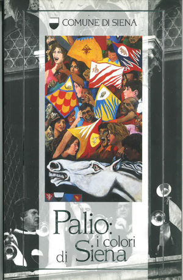 |
(2001) - Comune di Siena - PALIO: I COLORI DI SIENA - Siena, Ed. Il Leccio, 2001
Seconda edizione, la prima fu edita nel 1998
| 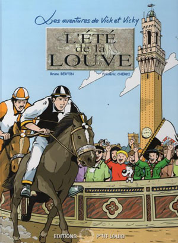 |
(2001) - Bruno Bertin e Frédéric Cherki - L'ÉTÉ DE LA LOUVE - (L'estate della Lupa) - Les aventures de Vick et Vicky – Rennes, Ed. P'tit Louis, 2001
Fumetto in lingua francese.
|  |
(2001) - Magistrato delle Contrade - COSTITUZIONI - Siena, Tip. Senese, 2001
| 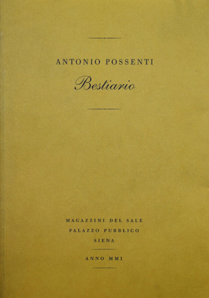 |
(2001) - Antonio Possenti - BESTIARIO - Siena, Accademia dei Fisocritici, 2001
Catalogo della mostra allestita nei Magazzini del Sale, che vide protagonista con il suo surreale bestiario il disegnatore e vignettista Antonio Possenti, autore pure del Palio vinto dal Leocorno il 17 agosto 1980.
|  |
(2001) - Comune di Siena - IL PALIO DI SIENA-ATTI DEL CONVEGNO - Projet "Les Fétes du Soleil" - Con il patrocinio della Comunità Economica Europea - Siena, Ed. Cantagalli, 2001
Diretto da Alessandro Falassi.
|  |
(2001) - Contrada di Valdimontone - I COSTUMI UN POPOLO UN TERRITORIO - Siena, Ed. Il Leccio, 2001
Testi di G.Mazzoni, P.G.Petrioli, P.Brogini, P.L.Olla. Con moltissime foto a colori di Mauro Agnesoni dei costumi, dei personaggi e della contrada.
|  |
(2001) - AA.VV. - I RITMI DEL PALIO - Contrada Sovrana dell'Istrice - Protagon Editori Toscani, Siena, Al.Sa.Ba.Grafiche, 2001
Carrellata fotografica di Giovanni Santi dedicata alla vittoria del Palio del 2 luglio 2000.
|  |
(2001) - Enrico Giannelli - IL PALIO DELLA PACE - Siena, 1945 - Contrada del Drago - Siena, s.n.t., s.d. [ma 2001]
Composizione poetica arrangiata usando la metrica del sonetto a ricordo del Palio vinto con Rubacuori.
| 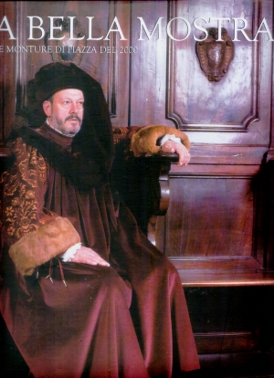 |
(2001) - AA.VV. - A BELLA MOSTRA - Le monture di Piazza del 2000 - Comune di Siena e Consorzio per la Tutela del Palio - Siena, Al.Sa.Ba. Grafiche, 2001
Introduzione di Alessandro Falassi.
Una dettagliata e esauriente rassegna del rinnovo delle monture di Piazza del 2000.
|  |
(2001) - Giordano Bruno Barbarulli - SEMPRE DECENTI E GRANDIOSI - La Contrada della Tartuca dal 1785 al 1838 nel diario di Antonio Francesco Bandini - Tra Storia e Memoria/1 – Siena, Tip. Il Torchio, 2001
Introduzione di Roberto Barzanti.
|  |
(2001) - Alda Pianigiani Garosi - ”QUANDO LA STRADA PARLAVA” - Racconti a fil di voce su un Rione di Siena dagli anni '20 agli anni '60 - Contrada della Torre - A cura del Circolo Culturale "I Battilana" – Monteriggioni, Ed. Il Leccio, 2001
Illustrazioni di Andrea Castelli.
|  |
(2001) - Antonio Tiezzi - NEI PISPINI L'ALTRO IERI - Nobile Contrada del Nicchio – Siena, Editrice Tipografica Senese, 2001
Prefazione di Paolo Maccherini. Racconti, immagini, aneddoti e personaggi che hanno fatto la storia di Via dei Pispini.
|  |
(2001) - Luigi Oliveto - LA FESTA DIFFICILE - Il Palio di Siena – Siena, Ed. Il Leccio, 2001
Illustrazioni di Gigi Lusini, con una nota di Mario Luzi. Comprendere il sentimento e lo spirito del Palio di Siena non è una cosa semplice, perché, appunto, si tratta di una festa difficile dove, ostinatamente attraverso i secoli, vanno a perpetuarsi l’orgoglio di una civiltà, la fierezza e la vanità di un popolo.
|  |
(2001) - Nobile Contrada del Nicchio - IN SANTA CHIARA CI S'HA UNA BELLA FONTE… - Inaugurazione, restauro e ripristino della "Fontana dei Pispini" – Siena, Ticci Ed., 2001
Testi di Franco Filippini e Duccio Balestracci.
|  |
(2001) - Denis Masi - POWER AND GLORY - Santa Maria della Scala – Firenze, Pagliai Polistampa, 2001
Viaggiando per l’Italia può anche capitare di visitare Siena nei giorni del Palio. Quindi di essere travolti dai volti, dai colori, dagli eccessi della Festa. Testo in italiano e inglese.
|  |
(2001) - Mauro Marzucchi - LA CONTRADA DELL'ISTRICE, MEMORIE STORICHE - Siena, Betti Editrice, 2001
L'autore percorre e restituisce al lettore le spigolature storiche e di costume che delineano la storia della Contrada dell’Istrice, tra ricerche d’archivio e interessanti statistiche, dalle origini del Palio di Siena ai giorni nostri.
Prefazione di Alessandro Falassi.
|  |
(2001) - Silvano Campeggi - PITTURA IN DIRETTA DALLA PIAZZA - Firenze, Pagliai Polistampa, 2001
Testi di O.Calabrese, A.Paolucci, B.Santi, N.Guiso, E.Toti. E' Palio! Questo è l'efficace titolo della mostra organizzata al Santa Maria della Scala per Silvano
Campeggi autore del drappellone del Palio dell'Assunta del 2001, le cui opere, di presa immediata, e come se
fossero dipinte in diretta dalla Piazza, hanno colto alcuni degli aspetti più suggestivi della Festa.
|  |
(2001) - LA FESTA DEI TABERNACOLI - Siena e i bambini - Foto di Lensini e Tassini – Siena, Grafiche Nidiaci, 2001
Testi di Riccardo Benucci e Maria Antonietta Peccianti. Simpatica pubblicazione dedicata alla Festa dei Tabernacoli che si svolse l'8 settembre 2001 nei rioni delle 17 contrade.
|  |
(2001) - Lorenzo Fattorini (a cura di) - INVENTARIO DELL'ARCHIVIO STORICO DELLA CONTRADA - Nobile Contrada del Nicchio - Siena - 2001
| 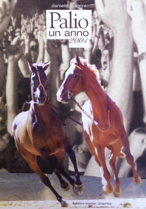 |
(2001) - Daniele Magrini - PALIO UN ANNO 2001 - [I fatti e le emozioni da ricordare] - Ed. Master Graphics – Siena, 2001
|  |
(2002) - Paolo Tertulliano Lombardi (a cura di) - MEMORIE DI PALIO A CAVALLO DI TRE SECOLI - Siena, Ed. Cantagalli, 2002
Da documenti tratti dall’Archivio Comunale di Siena, questo libro ripercorre ben tre secoli di Palio. L'analisi di periodi poco conosciuti è sicuramente il pregio di questo testo che, se consultato con attenzione, è ricco di spunti e notizie anche inedite.
|  |
(2002) - Maria Antonietta Grignani - SIENA NELL'IMMAGINARIO POETICO DEL NOVECENTO - Il Palio visto da Montale e da Govoni - La "città-casa" di Viviani e la "sacra epilessia di Luzi" - Un antidoto della velocità - Inventario Senese n.5/2002 - Siena, La Copia, 2002
Introduzione di Carlo Fini.
|  |
(2002) - Inge Lise Rasmussen - DEN SENESISKE PALIO - en ritus og dens historie (un rito e la sua storia) - Copenhagen, C.A.Reitzels Forlalg, 2002
Il libro scritto in Danese, racconta la storia del Palio oltre a riportare delle interviste rilasciate da Giuseppe Ciani, P.Luigi Olla, Mauro Leonini, Alessandro Falassi, Andrea De Gortes, Rosanna Bonelli, Antonio Cardini, Enrico Brandani, Susanna Fratiglioni e chiude
con una descrizione di ogni Contrada. Le foto di Lensini, si riferiscono al Palio del settembre 2000, mentre gli acquarelli, compresa la copertina, sono dell'autrice.
|  |
(2002) - AA.VV. - MASGALANO DELLA PACE - Calonaci 2002 - Siena, 2002
Volume che mette in evidenza la pregevole opera realizzata dal pittore e scultore poggibonsese Giuseppe Calonaci, offerta dal Rotary Club Siena e dal Rotary Club Siena Est alla migliore comparsa per i Palii del 2002.
|  |
(2002) - Serena Bindi - SULLA SCIA DEI SECOLI - Il Palio di Siena attraverso la storia delle contrade – Città di Castello, Edimond, 2002
In questo libro, nato dal desiderio di pubblicare un quaderno di disegni inediti, Serena Bindi ha voluto dare risalto alla natura poliedrica, ricca e a volte indefinibile del palio di Siena e delle sue contrade.
|  |
(2002) - Maria Grazia Florido e Alessandro Grazi - LAPO SEI UN LAMPO - Siena, Betti Editrice, 2002
Quindici illustrazioni ad opera di Alessandro Grazi
narrano una favola per bambini dai 6 ai 9 anni sul Palio di Siena. Uno dei compiti dell’opera è tradurre l’antico spirito aleggiante intorno alla festa in una rivisitazione moderna, eppur sempre appassionata,
del sentimento che ancora oggi la anima. Testi in italiano, inglese e tedesco.
| 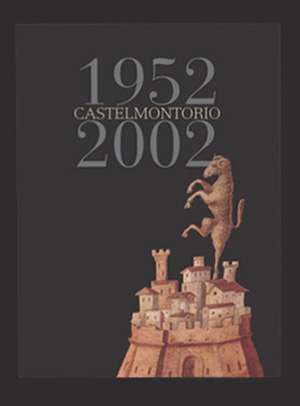 |
(2002) - Contrada di Valdimontone - CASTELMONTORIO 1952-2002 - Siena, Grafiche Pistolesi, 2002
Foto di Mauro Agnesoni. La storia della Società in questi 50 anni ricostruita attraverso un'accurata ricerca fatta sugli statuti, sui verbali di società e di contrada e grazie ai ricordi di numerosi montonaioli. Molto ricco
l'apparato iconografico e fotografico.
|  |
(2002) - Contrada di Valdimontone - CONTRASTI: IMMAGINI IN BIANCONERO DI UN RIONE - Siena, Master Graphics, 2002
Libro fotografico con 96 pagine di immagini. Foto di Mauro Agnesoni, Andrea e Fabio Lensini, Alessandro Garuglieri, Gianluca Lecchi, Giacomo Lorenzetti, Raffaele Semplici.
|  |
(2002) - Contrada della Tartuca - IL COSTUME DI UN POPOLO - Storia, colori e comparse - Tra Storia e Memoria/2 – Poggibonsi, Tip. Nencini, 2002
A cura di G.B.Barbarulli, testi di R.Barzanti, C.Venturi, F.Cardini. Questa pubblicazione scaturisce da una ricerca che, seguendo il filo dei simboli, abbraccia la storia dei costumi della Tartuca dalle origini alle nuove monture
e ben si inserisce nella attività culturale della Contrada.
|  |
(2002) - Nobil Contrada del Bruco - COSTITUZIONI E STATUTI - Siena, s.n.t., 2002
|  |
(2002) - Arrigo Pecchioli - L'AMATA MIA DI PIETRA - Elegie senesi (1950-1969) - Circolo Culturale "i Battilana" della Contrada della Torre – Siena, Edizioni Il Leccio, 2002
|  |
(2002) - Nobile Contrada del Nicchio - NOI... LE DONNE DEL NICCHIO - Siena, Master Graphics, 2002
Libro fotografico con testi di autori vari. In copertina Sobilia Palmieri Nuti, Capitano della Contrada, mentre accarezza un cavallo.
|  |
(2002) - Andrea Rauch - CONTRADE COLORI - Siena, Al.Sa.Ba. Grafiche, 2002
Mostra di opere di Andrea Rauch avvenuta dal 7 agosto al 9 settembre 2002 al Santa Maria della Scala con la divisione delle Contrade secondo l'editto di Violante di Baviera.
|  |
(2002) - Contrada della Lupa - MONTURE - I costumi del corteo storico - Siena, Betti Editrice, 2002
La storia dei costumi di Piazza della Contrada della Lupa fino all’ultimo rinnovo. Un elegante volume coordinato da David Rossi, con i contributi di Donatella Ciampoli, Luca Luchini, Pier Luigi Olla, Claudio Pepi, Giulio Petrangeli, Leonardo Scattoni.
| 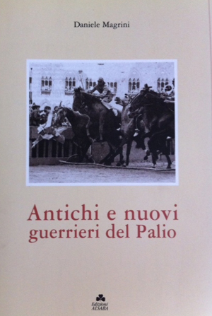 |
(2002) - Daniele Magrini - ANTICHI E NUOVI GUERRIERI DEL PALIO - [Cinquant'anni di carriere raccontate dai fantini di Piazza del Campo] - Siena, Edizioni AL.SA.BA., Master Graphic, 2002
Introduzione di Maurizio Cenni, con i contributi di O.Pacchiani, L.Valdesi e P.Burroni.
|  |
(2002) - Contrada della Selva - STATUTO DELLA CONTRADA DELLA SELVA - Siena - 2002
| 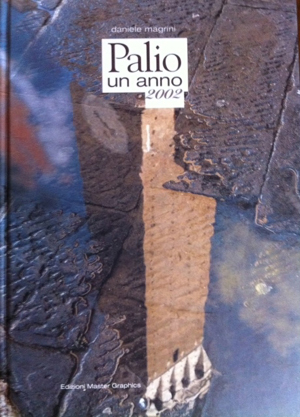 |
(2002) - Daniele Magrini - PALIO UN ANNO 2002 - I fatti e le emozioni da ricordare – Siena, Ed. Master Graphics, 2002
|  |
(2002) - AA.VV. - CON LORO BATTE IL CUORE DI SIENA - Bandiere, tamburi e costumi storici delle contrade – Siena, Terre de Sienne Editore, 2002
Catalogo della mostra storica (fine '700 - metà '900) nata dalla volontà del Comitato Amici del Palio
organizzata al Santa Maria della Scala. Testo corredato dalle bellissime foto delle bandiere, dei tamburi e delle monture antiche conservate nelle contrade.
|  |
(2002/2003) - Roberto Filiani e Natale Zaffaroni - CON LA RIVALE IN CAMPO 1-2 - Ed. Il Leccio - Monteriggioni - 2002/2003
Due volumi che affrontano la storia e l'evoluzione di tutte le rivalità tra contrade. Il primo volume analizza le rivalità tra Aquila e Pantera, Chiocciola e Tartuca, Civetta e Leocorno e tra Oca e Torre; nel secondo l'attenzione è posta sulle rivalità tra Nicchio e Montone, Istrice e Lupa e tra Onda e Torre. Nella prima parte è presente un'interessante appendice riguardante i provvedimenti disciplinari assunti contro le Contrade, nella seconda parte viene approfondito lo stesso aspetto riguardante i fantini. Sempre nel secondo volume un capitolo è dedicato alle rivalità ormai estinte. A corredo di entrambi i volumi una carrellata di vignette tratte dai Numeri Unici delle contrade.
|  |
(2003) - Comune di Siena - REGOLAMENTO PER IL PALIO - Siena - 2003
|  |
(2003) - Vasco Bruschelli - ORIGINE E STORIA DEL RIONE E DELLA CONTRADA DI VAL DI MONTONE - Siena, Ed. Il Leccio, 2003
Il libro si divide in due sezioni. La prima è una ristampa dell'edizione del 1954. La seconda parte, curata da Alessandro Monciatti, prosegue fino al 2003 mettendo in evidenza le date degli eventi più significati che hanno caratterizzato la vita della Contrada.
|  |
(2003) - Giovi (Giovannella Pacini) e Manu (Manuela Baglioni) - FARINATA DEGLI UBERTI ERA UN QUATTROGIORNISTA - Siena, Ed. Il Leccio, 2003
Prefazione di Duccio Balestracci. Fisiologia del contradaiolo. Manuale semiserio di fauna paliesca. Copertina e vignette di Emilio Giannelli.
|  |
(2003) - Alessandro Leoncini, Marina Gennari - I COLONNINI DI PIAZZA E LE ULTIME TRASFORMAZIONI DEL CAMPO DI SIENA - Siena, Betti Editrice, 2003
|  |
(2003) -
Sergio Profeti - 1834: QUEL "CHIASSO" TRA ONDA E NICCHIO - Miscellanea Storica di Palio - Gli opuscoletti di Sunto – Siena, Ed. Sunto, 2003
Il testo fa riferimento al Palio del 17 agosto 1834, quando gran parte del pubblico non si era accorto che a tagliare per prima il bandierino non era stata l'Onda, bensì il cavallo scosso del Nicchio,
favorendo contestazioni e alterchi fra i popoli delle due contrade.
|  |
(2003) - Raffaele Ascheri, Francesco Panzieri - UNA GIORNATA PARTICOLARE - Firenze, 9 maggio 1938: le Contrade, Mussolini e Hitler - Analisi di un evento di grande valore simbolico – Siena, Betti Editrice, 2003
Questo libro è il risultato di una ricerca che ha analizzato approfonditamente un evento importante in sé e paradigmatico per quanto riguarda il tema dei rapporti fra contrade e politica nel secolo scorso.
Ne esce il quadro di una città che manifesta il suo zelo conformistico nei confronti del fascismo: persino un grande intellettuale e uomo di cultura senese, come l’illustre archeologo Ranuccio Bianchi Bandinelli, non può esimersi dal recitare la sua parte di affabile ‘cicerone’ dei due dittatori dell’Asse nella visita fiorentina.
|  |
(2003) - Magistrato delle Contrade - RITUALE CONTRADAIOLO - Siena, Tip. Senese, 2003
La tradizione orale contradaiola delle regole finora non scritte sono riportate in questo "rituale", strumento moderno
per il rispetto delle stesse.
|  |
(2003) - Contrada Sovrana dell'Istrice - SENZA TEMPO - Siena, Grafiche Bruno, 2003
Disegni di Alessandro Bocci, testi di Luca Virgili. Pubblicazione a fumetti nata da un'idea di Flavio Collini, Sergio Ghezzi, Marco Gradi, Antonio Marzi e Luca Virgili. Edita in occasione della "Cena del Piatto"
per la vittoria del 2 luglio 2002. Il testo è suddiviso in due capitoli: il primo ci fa rivivere la vittoria del 2 luglio 2002 con gli occhi e i pensieri del cavallo vittorioso Ugo Sanchez; il secondo è un racconto di fantasia ambientato alla Magione del Tempio
e al suo legame col "mistero" dell'Ordine dei Templari.
|  |
(2003) - Contrada della Tartuca - UN PATRIMONIO ARTISTICO RECUPERATO - I restauri nell'Oratorio di Sant'Antonio da Padova alle Murella - Tra Storia e Memoria/3 – Siena, Ed. Cantagalli, 2003
A cura di G.B.Barbarulli. Testi di Bruno Santi e Narcisa Fargnoli. La pubblicazione testimonia il prezioso lavoro di coordinamento dei restauri di alcune importanti opere dell'Oratorio. In particolare due grandi tele e quattro ovali dipinti da Annibale Mazzuoli, Antonio Nasini e Giuseppe Nicola Nasini.
| 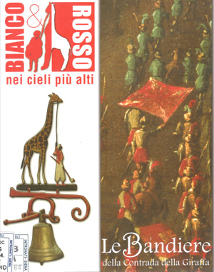 |
(2003) - AA.VV. - LE BANDIERE DELLA CONTRADA DELLA GIRAFFA - Bianco & Rosso nei cieli più alti – Siena, Ind. Grafica Pistolesi, 2003
Testi di Franco Semboloni e altri collaboratori. L'obiettivo che questa pubblicazione si propone è quello di fare il punto sull'evoluzione della bandiera della Contrada
della Giraffa, sia rispetto ai colori che all'insegna, documentando, per quanto possibile, le fogge che questa ha assunto nel tempo, onde non mandare perdute quelle
notizie e quelle informazioni che al momento è stato possibile ricostruire.
|  |
(2003) - Piccoli Chiocciolini - 1933-2003 SETTANT'ANNI DI NOI PICCOLI - Contrada della Chiocciola – Siena, Ed. Il Leccio, 2003
|  |
(2003) -
Serge Faure - IL PALIO: ESPRESSIONE PRIMA DELL'IDENTITA' SENESE - A cura della Nobile Contrada del Bruco – Monteriggioni, Grafiche Bruno, 2003
|  |
(2003) - Armando Santini e Mario Ascheri (a cura di) - LO STATUTO DELLA COMPAGNIA DI SAN SALVATORE NELLA CONTRADA DELL'ONDA (1612) E ALTRI DOCUMENTI - Contrada Capitana dell'Onda - "I quaderni dell'Onda n.4" – Siena, Betti Editrice, 2003
A cura dell'Associazione Culturale Antonio Minutelli.
|  |
(2003) - Contrada Capitana dell'Onda - STATUTO - Siena, Ed. Il Leccio, 2003
|  |
(2003) - Renzo Traballesi - DEMOCRATICA ARALDICA. I DISTINTIVI DELLE CONTRADE DI SIENA - Siena, Betti Editrice, 2003
Dalla bella e particolare collezione dell'autore, la panoramica completa di questi piccoli oggetti di culto contradaiolo. Prefazione di Alessandro Falassi. Con il patrocinio del Comune di Siena
|  |
(2003) - Contrada della Torre - L'ORATORIO DELLA CONTRADA DELLA TORRE SAN GIACOMO MAGGIORE - Restauri, storia e testimonianze - Siena, Ed. Al.Sa.Ba., 2003
A cura di Davide Orsini. Testi di P.Turrini, N.Fargnoli, L.Bonelli. M.Bindi.
|  |
(2003) - Nobile Contrada del Nicchio - TRECENTO ANNI DOPO - Il restauro dell'Oratorio di San Gaetano - Siena, Master Digital, 2003
|  |
(2003) - Daniele Ceccherini - IL VENTO CHE VERRA' - Nobile Contrada del Nicchio – Siena, Ed. La Copia, 2003
Prefazione di Mario Specchio, introduzione di Carlo Fini.
|  |
(2003) - AA.VV. - IL PALIO - LA FESTA DELLA CITTA' - Siena, Betti Editrice, 2003
Libro curato da Alessandro Falassi e Luca Betti. I testi con le firme più prestigiose dell'editoria paliesca sono raccolte in questo bel volume che analizza il Palio da molteplici angolazioni. Particolarmente interessante il capitolo dedicato al rapporto, spesso tormentato, tra Palio e media. Ricca e suggestiva la galleria fotografica. Contiene una importante bibliografia sulle pubblicazioni delle singole contrade.
Nel 2010 uscirà una ulteriore edizione ampliata.
|  |
(2003) - Cesare Mancini (a cura di) - L'ORGANO AGATI DELLA CONTRADA DELLA LUPA - Contrada della Lupa - I Gemelli-Quaderni – Siena, Grafiche Pistolesi, 2003
|  |
(2003) - Rita Petti - INTIME LIVREE - I Paggi Maggiori del Corteo Storico del Duemila - Siena, Betti Editrice, 2003
Introduzione di Lorenzo Sampieri e Senio Sensi, testi di Alessandro Falassi e Rita Petti.
La pubblicazione contiene 17 tavole litografiche numerate a tiratura limitata realizzate da Rita Petti, da originali in acquerello e tecnica mista, raffiguranti i Paggi Maggiori delle contrade del Palio con indosso le nuove monture
del 2000, inseriti in uno scorcio architettonico del territorio di appartenenza.
|  |
(2003) - Nobile Contrada dell'Aquila - NOVITA' DENTRO IL MUSEO - Acquisizioni, restauri, interventi allestitivi – Siena, Terre de Sienne Ed., s.d. [ma 2003]
|  |
(2003) - Maria Luisa Banfi, Simona Gavelli - DELITTO IN PIAZZA DEL CAMPO - Milano, Ed. Black Cat Cideb, 2003
Poliziesco, per la scuola, con CD allegato. Un delitto in Piazza del Campo rischia di rovinare l’atmosfera gioiosa del Palio. Saranno le indagini di un intraprendente giornalista in trasferta a Siena per scrivere un reportage sul Palio a svelare tempestivamente l’identità del colpevole.
|  |
(2003) - Andrea Rauch (a cura di) - IL PALIO DI DUCCIO - Siena, Tip. Al.Sa.Ba, Ed. Gli Ori, 2003
La pubblicazione ripercorre le fasi preparatorie del drappellone di Andrea Rauch e quelle successive alla vittoria del 16 agosto 2003 del Bruco. Testi di Luigi Di Corato e Marco Pierini, foto di Andrea e Fabio Lensini.
| 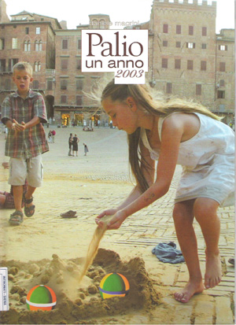 |
(2003) - Daniele Magrini - PALIO UN ANNO 2003 - Siena, Master Graphics Ed., 2003
Oltre alla descrizione delle due carriere, arricchita da una pregevole quantità di immagini, il libro comprende una minuziosa agenda del Palio e della vita contradaiola, divisa mese per mese,
che espone sinteticamente tutti i fatti che hanno caretterizzato l'anno 2003 fino a novembre.
|  |
(2004) - Aurora Savelli e Laura Vigni (a cura di) - UOMINI E CONTRADE DI SIENA - Archivio Storico Comune di Siena - 2004
Atti del ciclo di incontri svoltisi a Siena dal 16 gennaio al
27 febbraio 2003. Memorie e vita di una tradizione cittadina. Testo articolato su molteplici aspetti, basato sui documenti dal XVI secolo ad oggi.
|  |
(2004) - Consorzio per la Tutela del Palio di Siena - STATUTO - Siena, Ind. Grafiche Pistolesi, Ed. Il Leccio, 2004
|  |
(2004) - Umberto Bisogni - SUONAVANO LE SETTE - Siena, Tip. Artigiana, 2004
A cura di Federico Valacchi. L'attenta e puntigliosa analisi di Umberto Bisogni dell'evoluzione del Regolamento del Palio è stata brillantemente raccolta in questo libro.
|  |
(2004) - Gerald Parsons - SIENA, CIVIL RELIGION AND THE SIENESE - Farnham, Regno Unito, Ashgate Publishing, 2004
Gerald Parsons è uno studioso di storia delle religioni e ritiene che a Siena, grazie anche al Palio, la religione assuma un valore "civico" oltre che spirituale. In copertina la riproduzione del Palio del 5 settembre 1954 vinto dal Leocorno, dedicato all'Anno Mariano. Testo in inglese.
|  |
(2004) - Nobile Contrada dell'Oca - SOCIETA' DELLE DONNE - STATUTO - Siena - 2004
Aggiornamento e ristampa di due precedenti edizioni pubblicate nel 1980 e 1992.
|  |
(2004) - Contrada del Drago - SANTA CATERINA DEL PARADISO - I RESTAURI - Quaderni de “I Malavolti”/3 – Colle di Val d’Elsa, Ed. Al.Sa.Ba., 2004
A cura di Laura Bonelli, introduzione di Bruno Santi. Testi di vari autori. Libro che si occupa del recente restauro dell'Oratorio del Drago. Vengono analizzate le difficoltà e gli sforzi che la comunità della Contrada ha dovuto compiere al fine di preservare il
patrimonio culturale, artistico e antropologico conservato nella chiesa di Contrada.
| 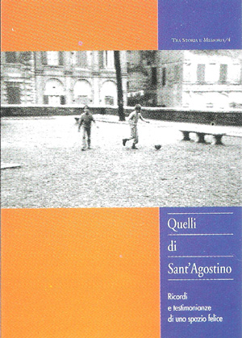 |
(2004) - Contrada della Tartuca - QUELLI DI SANT'AGOSTINO - Ricordi e testimonianze di uno spazio felice - Tra Storia e Memoria/4 – Siena, Ed. Cantagalli, 2004
La Contrada della Tartuca, nell'ambito della sua collana "Tra Storia e Memoria", ha voluto realizzare e presentare nella primavera del 2004 un luogo come il Prato di Sant'Agostino, dove tante generazioni di contradaioli sono cresciute tra giochi e parole, tra ricordi e tenerezze, tra discussioni e amori.
In particolare sono state raccolte in esso tante foto "datate" dove si riconoscono (o cercano, con crescente difficoltà, di riconoscersi) gli attuali quarantenni o più.
|  |
(2004) - Contrada della Tartuca - NUOVA SEDE DELLA SOCIETA' DI MUTUO SOCCORSO CASTELSENIO - Siena - 2004
|  |
(2004) - Mauro Aurigi - IL PALIO (O DELLA LIBERTA') - Oggi si chiama la Festa delle Contrade di Siena, ma solo perché ci siamo dimenticati
che all'origine dell'una e delle altre ci fu un dramma atroce: la tragica fine della Repubblica di Siena – Siena, Ed. La Copia, 2004
Ristampato a Siena nel 2006 da "Il Torchio".
|  |
(2004) - Sergio Profeti - LE VERE CIFRE DEGLI INFORTUNI SUL TUFO - Gli opuscoletti di Sunto - Siena, Ed. Sunto, 2004
Il Profeti prende in esame in maniera scrupolosa tutti gli episodi che hanno causato degli infortuni ai cavalli dal 1970 al 2004, contestando, dati alla mano, quanto riportato
dai sedicenti animalisti.
|  |
(2004) - Sergio Profeti - LA PRESENTAZIONE DEL DRAPPELLONE AL POPOLO DELLE CONTRADE - Gli opuscoletti di Sunto - Siena, Ed. Sunto, 2004
|  |
(2004) - Sergio Profeti - LA QUERELA FRA FANTINI - Gli opuscoletti di Sunto - Siena, Ed. Sunto, 2004
| |
(2004) - Laura Vigni - SIENA FERMO IMMAGINE - foto e disegni di una città che cambia - Firenze, Nardini Editore, 2004
Una gradevole raccolta di foto e di disegni di varie epoche, raffiguranti scorci e angoli della città, conservati dall'Archivio Storico del Comune di Siena. Tanti momenti e tanti ricordi riecheggiano nelle immagini presentate nel volume, dalle piazze ormai
scomparse, ai danni della guerra, dalle prime foto del Palio, ad eventi musicali, dal mercato in Piazza del Campo, ai palazzi di un tempo.
|  |
(2004) - Alessandro Ferrini - I PALII CORSI TRA UNA VITTORIA E L'ALTRA - Gli Opuscoletti di Sunto – Siena, Ed. Sunto, 2004
Lo studio, accurato nei minimi particolari, tiene in considerazione i dati ufficiali del Comune di Siena, partendo dal 1721.
|  |
(2004) - AA.VV. - VISIONI DI PALIO - Siena, Protagon Editori Toscani, 2004
Il Palio visto dagli altri. Nomi illustri della letteratura descrivono a modo loro il Palio. Andrea Camilleri, Enrico Ghezzi, Carlo Lucarelli, Barbara Alberti e tanti altri impegnati in brevi ma intense "visioni di Palio" con il senese Senio Sensi come coordinatore.
|  |
(2004) - Janilla Bruckmann - DOVE NASCE LA VERBENA - Sogni e magia del Palio – Siena, Ed. Nuova Si, 2004
Omaggio dell’autrice alla Nobile Contrada del Bruco. Libro che parla di Palio, visto con un'ottica particolare. Non è un saggio, anche se dietro c'è una ricerca accurata; non è narrativa, anche se sono racconti e i racconti gravitano sulla carriera, ma questa non è mai descritta... infatti il Palio di Siena non è la carriera: il Palio di Siena è un modo di vivere nato dalla tradizione che esiste solo a Siena. I sogni, la magia di questo modo di vivere sono le emozioni descritte nel libro.
| 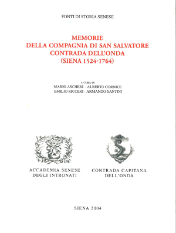 |
(2004) - M.Ascheri, A.Cornice, E.Ricceri, A.Santini (a cura di) - MEMORIE DELLA COMPAGNIA DI SAN SALVATORE
- Contrada dell'Onda (Siena 1524-1764) - Edito dall'Accademia Senese degli Intronati – Siena, Tip. Pistolesi, 2004
Il volume contiene la trascrizione del più antico manoscritto presente nell'archivio dell'Onda. Un documento di grande interesse essendo il più antico registro proveniente da una Contrada che sia stato conservato.
| 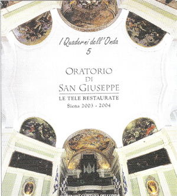 |
(2004) - AA.VV. - ORATORIO DI SAN GIUSEPPE - Le tele restaurate - Contrada Capitana dell'Onda – Siena, Ind. Grafica Pistolesi, 2004
All'interno della collana "I quaderni dell'Onda n.5", la Contrada ha pubblicato questo
interessante volume, in cui vengono descritti gli studi preliminari, i lavori di restauro e la storia
di alcune importanti tele custodite nell'oratorio di S.Giuseppe. Testi di Bruno Santi, Narcisa Fargnoli, Daniele Piacenti, Alberto Cornice e Armando Santini.
|  |
(2004) - Monica Guazzi - PRIME DONNE - Le donne Capitano e Priore nelle contrade del Palio di Siena - Siena, Betti Editrice, 2004
Delizioso e straordinario libro di Monica Guazzi che tratta con scrupolo e stile un argomento assolutamente inedito: le donne dirigenti di contrada. Impostato con delle interviste standard traccia dei profili intensi e coinvolgenti di "capitani" e "priori donne". Dalla Capitana del Nicchio vittoriosa al debutto nel 1947, passando per gli intrecci familiari che intercorrevano tra molte donne dirigenti. Tra il meglio che l'editoria paliesca ha prodotto negli ultimi anni per originalità del tema trattato.
| 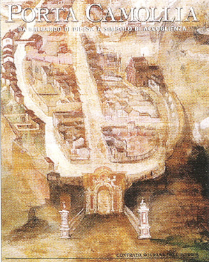 |
(2004) - Contrada Sovrana dell'Istrice - PORTA CAMOLLIA - Da baluardo di difesa a simbolo di accoglienza - Contrada Sovrana dell'Istrice - Ed. Il Leccio - Siena - 2004
Testi di Stefano Moscadelli, Cecilia Papi, Ettore Pellegrini. Da un'idea del coordinatore Sergio Ghezzi, la Contrada Sovrana dell'Istrice ha pubblicato, in occasione del IV centenario della ricostruzione di Porta Camollia, questo pregevole
libro nel quale, dopo accurate ricerche anche su documenti inediti, si evoca la storia di questa porta, posta a nord della città, nel suo evolversi:
prima baluardo di difesa verso il nemico "naturale" proveniente da Firenze, poi simbolo di accoglienza, con il suo motto inciso COR MAGIS TIBI SENA PANDIT, fonte di mille interpretazioni e chiavi di lettura.
|  |
(2004) - A.Amidei, M.Civai, C.Fini, A.Marzi (a cura di) - SONETTI DI CONTRADA E IN VERNACOLO - Una tradizione che vive con Luciano Fini, poeta istriciaolo - Contrada Sovrana dell'Istrice - Omaggio ai Sigg. Benemeriti Protettori – Siena, Al.Sa.Ba. Grafiche, 2004
In questa pubblicazione la contrada presenta alcuni sonetti significativi dal 1850 al 1935, poi quelli scritti da Luciano Fini per la sua Contrada dal 1954 e alcuni dello stesso autore tratti da "Fior di verbena". Allegato a “L’Aculeo” n.4-5/2004
|  |
(2004) - Contrada della Lupa - COLORI AL VENTO: SIMBOLI E RICAMI DI SETA - I Gemelli-Quaderni – Siena, Grafiche Pistolesi, 2004
Introduzione di L.Luchini. Testi di D.Ciampoli, G.Luchini, P.L.Olla. Il libro ripercorre accuratamente la genesi e l'attività del gruppo delle bandieraie di contrada che dagli inizi degli anni Novanta si è posto come
obbiettivo il restauro di bandiere antiche e la realizzazione di bandiere nuove basate su bozzetti datati. Al termine si può leggere un excursus sulla simbologia e sui colori della contrada stessa.
|  |
(2004) - Matthew Spender - LE CONTRADAIOLE - Signa, Ed. Caleidoscopio, 2004
Edizione bilingue italiano/inglese. Volume pubblicato in occasione della mostra di sculture dell'artista, di nascita inglese, ma toscano di adozione,
tenuta nei Magazzini del Sale dal 3 settembre al 3 ottobre 2004. L'artista presenta per l'occasione una serie di busti scultorei, ritratti di fanciulle senesi, nella loro veste più vivace di contradaiole, avvolte nei pesanti fazzoletti e nei caratteristici abiti rigonfi tinti dei colori delle rispettive contrade.
|  |
(2004) - Alessandro Falassi e Emilio Giannelli - BENEDETTI OSPITI !! - Una tipologia antropologica degli ospiti al Palio – Poggibonsi, Cambi Ed., 2004
Allegato al n.113 de "Il Carroccio" dell'ottobre 2004.
|  |
(2004) - Contrada Sovrana dell'Istrice - 1 - FORME DI PRESENZA UFFICIALE DELLA CONTRADA – 2 - ONORANZE AI CONTRADAIOLI - Siena, stampato in proprio, 2004
| 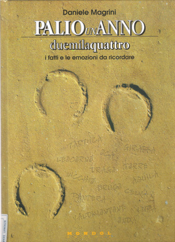 |
(2004) - Daniele Magrini - PALIO UN ANNO DUEMILAQUATTRO - i fatti e le emozioni da ricordare - Mondol Editore - 2004
Il libro ripercorre tutti gli avvenimenti contradaioli del 2004. Vengono trattati argomenti inerenti al mossiere, alla Guardia di Finanza, al Consorzio per la Tutela del Palio, al Masgalano, ecc.
Naturalmente molto spazio viene dedicato alle cronache delle due Carriere, accompagnate da suggestive fotografie.
|  |
(2005) - Aurora Savelli (a cura di) - CONTRADAIOLI DI ACCESA PASSIONE - Il Comitato Amici del Palio nel secondo dopoguerra senese – Edito dal Comitato Amici del Palio con il patrocinio del Comune di Siena e del Magistrato delle Contrade – Sovicille, Arti Grafiche Ticci, 2005
Bellissimo volume che ripercorre la storia del Comitato Amici del Palio, nato nel 1947, attraverso le testimonianze e le ricerche di archivio di un membro per ciascuna contrada. Splendida la documentazione fotografica ed interessantissima l'appendice con i verbali redatti dal 1947 al 1950.
|  |
(2005) - Francesco Burroni - A RIMA INCROCIATA - un anno di sonetti in Fontebranda in vernacolo senese - Siena, Ed. Il Leccio, 2005
Illustrazioni di Fabrizio Bartalozzi.
|  |
(2005) - Giampiero Cito - BORDELLI, GIOVANI DI CONTRADA - Siena, Artegrafica Centrooffset, 2005
Il libro si propone come uno spaccato della generazione dei giovani contradaioli senesi che va dai 20 ai 30 anni. Per ogni Contrada sono stati scelti due ragazzi che sono stati fotografati e intervistati ognuno su un particolare tema relativo alle sensazioni e alle emozioni del vivere la contrada e il Palio.
|  |
(2005) - Giordano Bruno Barbarulli - NOTIZIE STORICHE SULLA CONTRADA DELLA TARTUCA - Dalle origini al XXI secolo - Contrada della Tartuca - Tra Storia e Memoria/5 – Siena, Ed. Il Leccio, 2005
Raccolta
cronologica delle notizie sulla Contrada della Tartuca dalle sue origini ai tempi nostri. A seguito di lunghe ricerche l'autore ha descritto le vicende della Contrada attraverso i secoli, citando fatti ed episodi già noti, ma aggiungendo
anche molte notizie inedite, frutto della consultazione di numerosi documenti originali.
| 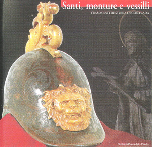 |
(2005) - Alberto Fiorini - SANTI, MONTURE E VESSILLI - Frammenti di storia di contrada - Contrada Priora della Civetta – Siena, Ed. Il Leccio, 2005
Quaderno edito in occasione del restauro di cimeli artistici e palieschi della Contrada. Contiene un contributo di Narcisa Fargnoli e le schede degli oggetti restaurati.
|  |
(2005) - Contrada Priora della Civetta - [INAUGURAZIONE DEI NUOVI LOCALI E DELLA "FONTANINA DI CONTRADA"] - Siena, Ed. Il Leccio, 2005
|  |
(2005) - Contrada del Leocorno - I RESTAURI - Siena, Tip. Senese, 2005
Testi di P.Leoncini, G.Catoni, A.Cornice, N.Fargnoli, P.T.Lombardi.
|  |
(2005) - Alessandro Falassi - FRAMMENTI DI PALIO - (palio fragments) – Siena, Protagon Editori Toscani, 2005
Il volume, con oltre 80 foto di Roberto Ferri, racconta la festa attraverso le immagini realizzate da alcuni dei fotografi che ogni anno vengono accreditati in occasione delle Carriere.
|  |
(2005) - Contrada Capitana dell'Onda - GIGGIO' - 1975-2005 trent'anni di storia del Gruppo Giovani Ondaioli - Siena, Grafiche Bruno, 2005
|  |
(2005) - Piero Colle - TRECCIOLINO - una vita al galoppo - Martignacco (UD), Edizioni del Labirinto, 2005
L'autore, insieme scrittore, editore e critico d'arte, ha voluto ancora una volta dedicare il suo estro e la sua fantasia ad un eroe del Palio.
|  |
(2005) - Simonetta Michelotti (a cura di) - L'ABSIDE LIBERATO - Architettura e territorio nella Contrada della Lupa (1961-1962) - Contrada della Lupa - I Gemelli-Quaderni – Siena - 2005
Presentazione di Luca Luchini.
|  |
(2005) - AA.VV. - CENTOTRENTANOVE IDEE PER UN PALIO - Comune di Siena – Siena, Betti Editrice, 2005
Il Comune ha voluto raccogliere in un catalogo multicolore tutti i bozzetti che hanno partecipato nel 2005 al concorso per il drappellone di luglio. La mostra allestita dal 23 agosto al 4 settembre 2005 nei Magazzini del Sale
del Palazzo Pubblico, ha presentato 139 bozzetti di altrettanti autori che nella loro bellezza e fantasia cromatica hanno contribuito a mettere in evidenza la splendida realizzazione del Palio di Provenzano di Rita Petti, bozzetto risultato vincitore del concorso stesso.
|  |
(2005) - Alessandro Leoncini - CONTRADA DELLA PANTERA - RESTAURI - Siena, Ed. Nuova Immagine, 2005
Pubblicazione edita in occasione della presentazione dei restauri compiuti su alcuni oggetti d'arte conservati nel territorio della contrada. Vengono descritti con attenzione i lavori effettuati per recuperare in particolare la statua della Madonna della Mandorla
e la tela con la Decollazione di S.Giovanni Battista.
|  |
(2005) - Alessandro Leoncini - I BRACCIALETTI DELLA PANTERA - Contrada della Pantera – Siena, Betti Editrice, 2005
I braccialetti per illuminare le vie dei rioni sono ormai parte integrante ed essenziale delle feste contradaiole, ma questo ha avuto inizio solo nell'Ottocento. In precedenza le feste delle Contrade
venivano tenute prima del tramonto, quando non era necessario illuminare i rioni. Naturalmente i braccialetti erano già in uso, ma solo come torciere per illuminare gli interni delle chiese.
|  |
(2005) - Alessandro Amidei, Paolo Coradeschi, Antonio Marzi - INVENTARIO E CATALOGAZIONE DEI BENI DI INTERESSE STORICO E ARTISTICO PRESENTI NELLA SEDE MUSEALE E NELL'ORATORIO
- Contrada Sovrana dell'Istrice – Poggibonsi, Arti Grafiche Nencini, 2005
L'intendimento di questa pregevole pubblicazione è quello di fornire uno strumento completo ed esauriente con il quale ripercorrere l'evoluzione della Contrada attraverso la conoscenza di ciò che ne costituisce il
patrimonio artistico e antropologico; ricostruire in questo modo la storia dell'Istrice, con tutte le mutazioni e le varianti culturali che l'hanno caratterizzata.
|  |
(2005) - AA.VV. - FOTOCRONACA DEL PALIO - Con il Patrocinio del Comune di Siena - Siena, Ed. InArt Marketing e Comunicazione, 2005
Album di figurine che riassume la storia del Palio dal 1900 al 2005.
|  |
(2005) - Daniele Magrini - PALIO UN ANNO, DUEMILACINQUE - emozioni di vita contradaiola – Siena, Mondol Editore, 2005
Se parlassimo di un vino potremmo dire che il 2005 e stata una grande annata.
Non solo per gli esiti delle due carriere, ma per come tutto il complesso meccanismo del Palio sia filato senza una sbavatura, grazie anche al comportamento esemplare di tutte le dirigenze e di
tutti i popoli impegnati. L'immagine della città ne esce ulteriormente rafforzata, anche a dispetto di coloro, animalisti in testa, che si erano gia premurati di predire nefaste conseguenze per l’ormai proverbiale "scelleratezza" dei senesi.
|  |
(2006) - Contrada di Valdimontone - MEMORIA DI UNA CONTRADA: IL MUSEO DI SAN LEONARDO - Grafiche Pistolesi - Siena - 2006
Testi di A.Ciacci, R.Parenti, A.Luna, M.De Benetti.
|  |
(2006) - Contrada di Valdimontone - STATUTO - Siena - 2006
Ristampato con i dovuti aggiornamenti nel 2013.
|  |
(2006) - Contrada di Valdimontone - SOCIETA' CASTELMONTORIO - STATUTO - Siena, s.n.t., 2006
|  |
(2006) - Nobile Contrada dell'Oca - ORATORIO DI S.CATERINA IN FONTEBRANDA. RESTAURI - Quaderni di Fontebranda/1 - A cura di E.Toti e D.Barbagli – Siena, s.n.t., 2006
|  |
(2006) - Nobile Contrada dell'Oca - Società Trieste in Fontebranda - STATUTO-REGOLAMENTO - Siena, Ed. La Diana, 2006
|  |
(2006) - Enrico Giannelli e Maurizio Picciafuochi - ORA COME ALLORA - carriere e fantini dalle origini del palio ad oggi - Quaderni de I Malavolti/4 – Siena, Ed. Cantagalli, 2006
Un esauriente compendio sui Palii dal '600 ai nostri giorni, che completa il lavoro realizzato dagli stessi autori con il precedente "Dal primo all'ultimo" che tratta dei Palii del '900.
|  |
(2006) - Comune di Siena - I COLORI DEL PALIO - (Tavole di Davide Tanchis) - Siena, Tip. Pistolesi, 2006
|  |
(2006) - AA.VV. - IL PALIO - Roma, Sitcom Ed., 2006
Splendida introduzione del Prof. Franco Cardini, ordinario di Storia Medievale dell'Università degli Studi di Firenze. Il libro prova ad abbracciare il Palio nella sua complessa interezza. Contiene due CD.
|  |
(2006) - G.B.Barbarulli, G.Civai, F.Dolcino (a cura di) - L'ARCHIVIO E LE COLLEZIONI DELLA CONTRADA - Contrada della Tartuca - Tra Storia e Memoria/6 – Siena, Il Torchio Ed., 2006
Dopo un lavoro di sei anni viene presentata la catalogazione del patrimonio archivistico della Contrada. Un lavoro paziente, un attento riordino documentale per offrire uno strumento per la ricerca e l'approfondimento storico. "Un viaggio nel tempo - scrive Barbarulli - durante il quale, consultando non senza una certa emozione manoscritti secolari, sono riemerse vicende e personaggi spesso sconosciuti o troppo a lungo trascurati".
|  |
(2006) - Contrada del Leocorno - IL RESTAURO DELL'ORGANO - Siena, Tip. Senese, 2006
Testi di C.Dell'Orto, N.Fargnoli, M.Lenzini, P.T.Lombardi.
|  |
(2006) - Contrada della Chiocciola - L'ORATORIO DEI SS.PIETRO E PAOLO: RESTAURI - Poggibonsi, Arti Grafiche Nencini, 2006
I restauri sono relativi ai dipinti esistenti nell'Oratorio e illustrati dai testi autorevoli di
N.Fargnoli, M.Maccherini, D.Piacenti, A.M.Emanuele.
|  |
(2006) - Alberto Fiorini - CONTRADA È... PALIO È... - Comitato Amici del Palio – Siena, Ticci Ed., 2006
Volume riservato agli alunni delle scuole dell'obbligo. Una bella e lodevole iniziativa del Comitato Amici del Palio dedicato ai "cittini", soprattutto a quelli che non nascono e crescono più nel territorio delle contrade. Un libro educativo ed utile.
Il volume, simile al precedente “Contrada è...” è stato rivisto nel testo e nella grafica dallo stesso autore.
|  |
(2006) - Sergio Ghezzi (a cura di) - INVENTARIO DELL'ARCHIVIO - Contrada Sovrana dell'Istrice – Colle di Val d’Elsa, Vanzi Industria Grafica, 2006
Introduzione di Stefano Moscadelli. L'autore, convinto sostenitore che la memoria storica è fondamentale per la sopravvivenza di ogni comunità, dopo un lungo lavoro ha impostato una scrittura dell'inventario che rispecchiasse gli ambiti
di attività della contrada prevedendo tutte le tipologie di atti cui ricondurre tutta la documentazione conservata. Caratterizzato da una forte analicità, è un testo prezioso e insostituibile per la conoscenza dell'archivio di questa contrada dal 1734 in poi.
|  |
(2006) - Contrada Sovrana dell'Istrice - COSTITUZIONI E REGOLAMENTI - Siena, stampato in proprio, 2006
Ristampato con i dovuti aggiornamenti nel 2009.
|  |
(2006) - Nobile Contrada del Nicchio - I VASAI DELL'ABBADIA NUOVA - Siena, Master Digital, 2006
Prefazione di Daniele Magrini. Autori vari. Nel testo si ripercorre lo sviluppo del territorio nei secoli. Degna di particolare attenzione la parte inerente ai reperti ceramici del XIV e XV secolo rinvenuti durante i lavori di ristrutturazione dei locali della “Pania”. Ricco di eleganti foto e schede molto competenti redatte da Giovanni Maccherini e Alessandra Pepi.
|  |
(2006) - AA.VV. - FIORE D'ALLORO... - Contrada della Selva – Siena, Tip. M.Bruno, 2006
Copertina di Fabio Centi. Raccolta di odi e sonetti selvaioli dal 1673 al 2005.
|  |
(2006) - Francesco Giannini - I DIALOGHI DEL ROSSO - (amicizia e Palio all'ombra della Torre) - Siena, Pascal Editrice, 2006
Dialoghi d’osteria, dialoghi (ma anche moccoli, berci, sogni e preghiere) d’antica amicizia, tra due contradaioli d’anima e di sangue, negli infuocati giorni del Palio. Il rosso è quello del vino, ma anche del sangue che ribolle di passione e della bandiera di una certa contrada che non vince da tanto, troppo tempo...
|  |
(2006) - Roberto Filiani e Natale Zaffaroni - SUL TUFO - ALMANACCO DELLE VITTORIE DAL 1900 AL 1914 - Siena, Betti Editrice, 2006
Prefazione di Alessandro Leoncini. Dopo aver affrontato la storia delle rivalità tra contrade nei due volumi de "Con la rivale in Campo" i due autori riuniscono in questo libro, il primo di una collana, la storia delle carriere corse dal 1900 fino all'interruzione dovuta al primo conflitto mondiale.
|  |
(2006) - Pino Gilioli - UN MONDO DI SIMBOLI: LE CONTRADE E IL PALIO DI SIENA - Siena, Betti Editrice, 2006
Le Contrade vengono qui considerate nella prospettiva della loro araldica, esaminando gli animali degli stemmi. Ancora un testo che, attraverso queste raffigurazioni, cerca di penetrare nei significati nascosti che stanno dietro alle più singolari manifestazioni della vita senese.
|  |
(2006) - Alessandro Bagnoli e Claudio Pepi - IL CAPPELLONE DI SAN ROCCO - I dipinti murali di Rutilio Manetti e Crescenzio Gambarelli in Vallerozzi - Contrada della Lupa - I Gemelli-Quaderni – Siena, Grafiche Pistolesi, 2006
|  |
(2006) - Roberta Cappelli (a cura di) - RESTAURI - Nobile Contrada dell'Aquila – Siena, Grafiche Pistolesi, 2006
Testi di N.Fargnoli, G.Fattorini, A.M.Emanuele, A.Pezzo, F.Cappelli.
|  |
(2006) - Fabiola Franci, Alessandro Orlandini (a cura di) - INVENTARIO DELL'ARCHIVIO - Nobile Contrada dell'Aquila – Siena, Terre de Sienne Ed., 2006
|  |
(2006) - Sebastien Van der Straten (foto di) - L'ALTRO PALIO - Siena, s.n.t., 2006
Comune di Siena e MPS Belgio. Un libro di sole immagini che traducono il fervore, addirittura il misticismo di cui è impregnata la secolare tradizione del Palio.
|  |
(2006) - Roberto Cresti e Maura Martellucci - PILLOLE QUOTIDIANE DI STORIA SENESE DAL 1560 AL 1799 - I Parte - Agenda settimanale 2007 – Siena, Betti Editrice, 2006
Agenda che riporta giorno per giorno gli episodi importanti o curiosi della storia di Siena e delle Contrade avvenuti fra il 1560 al 1799.
|  |
(2007) - Massimo Gistri (a cura di) - 1947 L'ANNO CHE NACQUE LA PANIA - Società la Pania – Monteriggioni, Master Digital, 2007
Nel maggio 2007, in occasione dei festeggiamenti per il sessantesimo anniversario della fondazione della società "La Pania", la Nobile Contrada del Nicchio, ha pubblicato un libro che traccia la storia, attraverso immagini e soprattutto ricordi,
di una delle più grandi Società di Contrada di Siena.
|  |
(2007) - Contrada della Torre - IL BERE INSIEME - Brindiamo alla nostra Torre - I Battilana Circolo Culturale - Siena, stampato in proprio, 2007
Realizzato in occasione della “Cena del bere insieme” il 23 marzo 2007.
|  |
(2007) - Contrada del Drago - SANTA CATERINA DEL PARADISO - I RESTAURI/2 - Quaderni de “I Malavolti”/5 – Siena, Protagon Ed., 2007
Testi di N.Fargnoli, M.Quast, I.Bichi Ruspoli, M.Mancianti.
|  |
(2007) - Contrada della Torre - LA SOCIETA' ELEFANTE 1923-2007 - “A memoria di elefante” – Colle di Val d’Elsa, Ed. Vanzi, 2007
Edito in occasione della inaugurazione dei nuovi locali.
|  |
(2007) - Victor Hugo Zalaffi - LA FONTANINA DELLA CONTRADA DELLA CHIOCCIOLA - Contrada della Chiocciola – Siena, Ed. Periccioli, 2007
Rispetto alla prima edizione stampata nel 1972, questa presenta anche un particolare riferimento alla biografia di Victor Hugo Zalaffi.
|  |
(2007) - Gabriele Castellini, Vera Castellini (a cura di) - SONETTI IN CONTRADA - Raccolta delle opere presentate alla Rassegna del Sonetto Contradaiolo dal 2003 al 2006 - Nobile Contrada del Bruco – Siena, Ticci Ed., 2007
Prefazione di Roberto Barzanti.
|  |
(2007) - L.Galli, L.Andreini, F.Tiravelli (a cura di) - Nobile Contrada del Bruco - IL MUSEO E LA SEDE STORICA - Siena, Betti Editrice, 2007
Testi di autori vari. Pubblicazione edita in occasione del rinnovo dei locali del Museo della Nobile Contrada del Bruco.
Illustra la storia della sede museale e gli ultimi lavori effettuati; descrive gli arredi sacri, i drappelloni, le monture e l'altra oggettistica esposta, accompagnati da una annotazione storica.
|  |
(2007) -
Alessandra Arezzi Boza, Margherita Anselmi Zondadari (a cura di) - EMILIO PUCCI 1957: LA COLLEZIONE PALIO - Protagon Editori Toscani - 2007
Il volume accompagna la mostra inaugurata nel Complesso Museale di Santa Maria della Scala di Siena in collaborazione con la Fondazione Pucci il 28 giugno 2007. La Collezione Palio fu, per lo stilista, la prima vera collezione che dimostrava una coerenza di progetto, dalla scelta del tessuto e dello stampato alla sua applicazione su un ampia gamma di colori e di modelli: abiti da sera, da cocktail e da giorno, camicie, shorts, costumi da bagno e teli di spugna, capaci di integrare lo spirito moderno e innovativo con la tradizione e la storia di un passato fonte di ispirazione.
 |
(2007) -
Francesco Fusi (a cura di) - LA PAGLIETTA DELLA CONTRADA DELLA TORRE - Quarantanni: "insieme con passione" - Contrada della Torre – Colle di Val d’Elsa, Tip. Vanzi, 2007
Numero Unico per il 40° della fondazione della Congrega "La Paglietta". Supplemento a Salicotto Notizie n.2/2007.
 |
(2007) - Nobile Contrada del Nicchio - 1945-2006: ALFIERI & TAMBURINI DI PIAZZA - Fiero il rullo alta la bandiera – Siena, Master Digital, 2007
|  |
(2007) - Luigi Oliveto, Roberto Vicario - IL PALIO IN VOLTO - Ed. Agemina - Firenze - 2007
Questa volta (forse per la prima volta) a raccontare il Palio di Siena sono, insieme, poesia e fotografia. Il proficuo e suggestivo incontro avviene sulle pagine del volume dove le esplicite immagini di un ricco album fotografico dedicato alla Festa senese si dilatano fino alle parole più allusive della poesia.
| 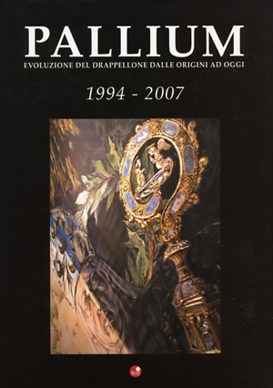 |
(2007) - AA.VV. - PALLIUM - 1994-2007 - Evoluzione del drappellone dalle origini a oggi - Siena, Betti Editrice, 2007
Ultimo di cinque volumi di assoluto pregio che ripercorrono, attraverso splendide riproduzioni fotografiche, l'evoluzione storica e stilistica del "cencio", l'oggetto più ambito dai contradaioli. Dal primo originale del 1719, conservato nell'Aquila, a quelli napoleonici, dai classici delle seconda metà dell'800 ai maestri senesi dei primi decenni del '900 per finire con gli artisti di fama nazionale ed internazionale degli ultimi anni.
Testi di A.Falassi, M.Anselmi Zondadari, B.Latini.
|  |
(2007) - Antonio Tiezzi - DAVANTI ALLA PANIA: IL BAR "LA RONDINE" - Nobile Contrada del Nicchio – Monteriggioni, Master Digital, 2007
Prefazione di Paolo Maccherini. Storie personali, storie dei Pispini, storie di Palio.
|  |
(2007) - AA.VV. - ZACCHIROLI A SIENA DALLA CONTRADA ALLA CITTA' (1985-2006) - Contrada della Lupa - I Gemelli-Quaderni – Monteriggioni, Master Digital, 2007
Presentazione di Andrea Viviani. Il volume è l'omaggio della Lupa al genio dell'architetto Enzo Zacchiroli che ha progettato le sale del museo della Contrada disegnandone anche i minimi particolari di arredo con entusiasmo, partecipazione e disponibilità che crearono un rapporto di sincera amicizia con i contradaioli.
|  |
(2007) - Contrada della Selva - PRESENTAZIONE DEI NUOVI ARREDI MUSEALI E BIBLIOTECA DI DON VITTORIO BONCI - A cura di Margherita Anselmi Zondadari - Siena, stampato in proprio, 2007
|  |
(2007) - Mario Civai (a cura di) - NESPOLO - Pistoia, Gli Ori, 2007
Ugo Nespolo al Palio tra cronaca e biografia. Libro fotografico con scatti di Giovanni Santi e Gianni Berengo Gardin, pubblicato in occasione della mostra allestita ai Magazzini del Sale dall'11 novembre 2007 al 6 gennaio 2008. Si ricorda che Ugo Nespolo fu l'autore del Palio
del 16 agosto 2007 vinto dal Leocorno. Evidenziata in copertina la sua firma.
|  |
(2007) - Alessandro Leoncini - UN EX-VOTO IN SANTA LUCIA - Girolamo Biringucci e la Grazia di San Nicola – Siena, Grafiche Pistolesi, 2007
Coordinamento editoriale di Giordano Bruno Barbarulli e Riccardo Pallassini.
|  |
(2007) - Massimo Biliorsi e Barbara Fracassi - LEONARDO VITI DETTO CANAPINO - L'ultimo dei grandi – Siena, Ed. Headbox, 2007
Un viaggio raccontato dallo stesso protagonista e da molti testimoni di una grande carriera.
Una carriera ed una vita che è come un film, avventurosa e piena di contraddizioni che lo hanno reso unico.
|  |
(2007) - Rosanna Bonelli - IO, ROMPICOLLO - Storia della donna che ha corso il Palio di Siena – Siena, Terre de Sienne Ed., 2007
A cinquant'anni di distanza da quel 16 agosto 1957, il giorno del ‘suo’ Palio corso sul cavallo Percina per i colori dell’Aquila, Rosanna Bonelli si racconta.
E' la prima autobiografia dell’unica fantina del XX
secolo, da sempre una delle figure piu celebri e, per certi versi, mitiche nella storia della nostra Festa.
|  |
(2007) - Helmut Krausser - MELODIEN: LA MUSICA DEL DIAVOLO - Siena, Ed. Barbera, 2007
Romanzo. Traduzione di Giovanni Giri e Laura Bortot. L'errore di un fattorino, che nei giorni convulsi del Palio consegna una lettera misteriosa a un fotografo in un albergo senese, fa precipitare quest'ultimo in una straordinaria avventura surreale.
|  |
(2007) - Idalberto Fei e Emilio Ravel - CAVALLI CHE CORRETE IN PIAZZA QUANDO E' ESTATE - Gli animali delle Contrade del Palio di Siena, racconti fantastici e storia vera – Firenze, Emmebi Edizioni, 2007
Presentazione di Andrea Camilleri e Giorgio Pressburger; formelle dipinte da Antonella Cappuccio. I diciassette animali simboli delle diciassette contrade di Siena, elementi di un bestiario eterogeneo e unico, oramai dotati di una loro autonomia, vivono nuove avventure.
|  |
(2007) - Roberto Cresti e Maura Martellucci - PILLOLE QUOTIDIANE DI STORIA SENESE DAL 1560 AL 1799 - II Parte - Agenda settimanale 2008 – Siena, Betti Editrice, 2007
Agenda che riporta giorno per giorno gli episodi importanti o curiosi della storia di Siena e delle Contrade avvenuti fra il 1560 al 1799.
|  |
(2007/2008) - AA.VV. - MISCELLANEA DI PALIO - Tesori e Memorie di Contrada – Monteriggioni, TAP Grafiche, 2007 e 2008
Supplemento al quotidiano "Il Corriere di Siena". La collana è composta da 18 volumetti corredati da circa cento foto ciascuno che illustrano ciò che c'è
da sapere sulle 17 Contrade del Palio di Siena. L'opera nei primi 17 volumi
analizza gli aspetti di ogni contrada a 360°, nell'intento di darne una immagine completa, partendo dalle origini, fino ad una
visione che ci riconduce ai giorni nostri. Nel 18° volume viene dato risalto alla storia, alla leggenda e all'attualità del Palio.
|  |
(2008) -
Roberto Martinelli - PALIO E DISPOSIZIONI NORMATIVE - Gli opuscoletti di Sunto – Siena, Ed. Sunto, 2008
Relazione tenuta a Siena il 18 gennaio 2007 al Rotary Club.
|  |
(2008) - Alberto Fiorini - BESTIARIO SENESE - Simbologia e storia degli animali totemici delle Contrade – Siena, Ed. Il Leccio, 2008
Nel volume di ben 700 pagine, oltre ad illustrare la simbologia di tutti gli animali delle diciassette contrade da un punto di vista mitologico, religioso, letterario ed artistico, viene analizzato anche il tema delle rappresentazioni allegoriche delle Contrade durante l’epoca delle Bufalate e delle più antiche Carriere coi cavalli, offrendo spunti per ulteriori ricerche.
Una seconda edizione è stata stampata nel 2009 con alcune integrazioni.
|  |
(2008) - Alberto Fiorini - FOGGE E COSTUMI DEL PASSATO - La continuità nell'evoluzione delle comparse della Civetta - Contrada Priora della Civetta – Siena, Ed. Il Leccio, 2008
Pubblicazione edita in occasione di un ulteriore restauro di bandiere, costumi, armature e paramenti sacri realizzato dalla Contrada Priora della Civetta.
|  |
(2008) - Nobile Contrada del Bruco - GLOBALE E LO ' ALE - Sonetti in vernacolo senese - Siena, Ed. Il Leccio, 2008
Raccolta dei sonetti realizzati durante lo svolgimento delle attivita` del Laboratorio del sonetto in vernacolo senese che si è tenuta nei locali della Società della Nobil Contrada del Bruco nel 2008. Il volume raccoglie i numerosi sonetti scritti da un folto numero di appassionati sotto l’abile guida di Francesco Burroni e l’appassionata costante presenza organizzativa di Vera e Gabriele Castellini. I sonetti qui pubblicati, tutti inediti, sono dedicati ai più svariati argomenti, di attualità, di storia, ma anche a Siena e al Palio. Il volume e` corredato dalle belle illustrazioni disegnate da Olivia Agnelli, Mario Giuggioli e Franco Ticci.
|  |
(2008) - AA.VV - ANIMALS - Il Bestiario Senese visto dagli artisti contemporanei - Con il patrocinio del Comune di Siena e il contributo dell'Istituto Statale d'Arte Duccio di Buoninsegna - La Trifora Associazione culturale – Siena, Betti Editrice, 2008
Nel raccoglitore che custodice 17 schede (una per contrada) è inserito un opuscolo esplicativo e di presentazione.
|  |
(2008) - Aurora Savelli - SIENA, IL POPOLO E LE CONTRADE - Firenze, Ed. Leo S. Olschki, 2008
Generalmente considerate per il palio cui danno vita, le contrade di Siena sono qui trattate per la prima volta come esperienza associativa urbana a base territoriale, attraverso lo studio del loro ricco e finora inesplorato patrimonio archivistico.
|  |
(2008) - AA.VV. - FIGURINE DEL PALIO - 2ª edizione - con il Patrocinio del Comune di Siena - Siena, Ed. InArt Marketing e Comunicazione, 2008
Album di figurine che riassume la storia del Palio e delle Contrade. Una sezione è dedicata alle litografie storiche della città di Siena. La prima edizione venne stampata nel 2005.
|  |
(2008) - Contrada della Lupa - L'ACQUE CHIARE DI FONTENUOVA - Storia e immagini della Fonte di Vallerozzi - I Gemelli-Quaderni – Siena, Master Digital, 2008
Presentazione del Priore Andrea Viviani. Il volume ripercorre e celebra la storia di Fontenuova, monumento duecentesco divenuto simbolo della Lupa e punto di riferimento e aggregazione per i contradaioli. Dedicato alla memoria di Amulio Bartalucci "che proprio dalle Fonti insegnava la Contrada".
|  |
(2008) - Rita Petti - STEMMARIO SENESE - L'araldica delle Contrade di Siena – Siena, Betti Editrice, 2008
Introduzione di Alessandro Leoncini. Un'attenta analisi sulla corretta terminologia araldica da applicarsi agli stemmi delle contrade, un argomento ostico e controverso. Ristampato nel 2013.
|  |
(2008) - Marc Lalo – PALIO, ALLEGRESSE SIENNOISE – Siena, Betti Editrice, 2008
Nel 2010 il testo è stato tradotto dal francese in italiano con il titolo: Palio. La gioia di Siena.
Ne è scaturito un lavoro attento e meticoloso che si allontana dall’idea di riportare, in maniera didascalica e stereotipata, la storia della nota festa cittadina.
|  |
(2008) - Emanuele Squarci - CHE CINEMATOGRAFO - Siena, Blurb Ed., 2008
Libro prettamente fotografico edito in occasione dei festeggiamenti per la vittoria dell'Istrice del Palio del 2 luglio 2008.
|  |
(2008) - Alessandro Falassi, Gaia Tancredi, Laura Valdesi - 40 PALII VINTI - LAZZERO BELIGNI, FANTINO DEL PALIO DI SIENA – Siena, Betti Editrice, 2008
Prefazione di Andrea De Gortes detto Aceto. Libro incentrato sulla figura di Lazzero Beligni detto Giove.
I senesi lo chiamavano “Quello che faceva le mosse”, perché lui tra i canapi sapeva perfettamente come muoversi e perché lui, fantino senese, era consapevole che è lì che si giocava il Palio.
|  |
(2008) - Mino Capperucci e Odoardo Piscini - IL PALIO RACCONTATO - Bibliografia ragionata e ragionevole sul Palio di Siena – Empoli, Ibiskos Ed. Risolo, 2008
Una bibliografia sul Palio, non solo riportando i titoli dei libri specifici e le pubblicazioni delle contrade, ma anche le citazioni e gli articoli apparsi su testi che trattano di argomenti diversi.
|  |
(2008) - Comune di Siena - IL CAVALLO NEL PALIO DI SIENA - Santa Maria della Scala - Congresso tecnico scientifico per capire e conoscere il cavallo da Palio – Siena, 2008
Con il patrocinio della Fondazione del Monte dei Paschi di Siena e del Monte dei Paschi di Siena.
|  |
(2008) - Alarico Rossi - ENCICLOPEDIA DEL PALIO DI SIENA - Siena, Edizioni Addi, 2008
Il libro è redatto sotto forma enciclopedica ed in ordine alfabetico vengono spiegati tutti i concetti basilari per comprendere il Palio di Siena al meglio. Un compendio elaborato con estrema cura.
|  |
(2009) - AA.VV. - SIENA BIBLIOFILA - Collezionismo librario a Siena su Siena – Siena, Protagon Editori, 2009
Al suo interno il saggio "Contrade e Palio nell'antica editoria senese" nel quale Alessandro Leoncini illustra le più significative pubblicazioni edite dal 1505 al 1818. Di grande interesse il frontespizio di una "Vita di Santa Caterina" edita nel 1505 in cui compare il drago, insegna della famiglia della Santa, che successivamente alla sua canonizzazione fu adottato dalla Contrada del Drago.
|  |
(2009) - Alessandro Amidei, Paolo Coradeschi - LE NUOVE MONTURE DI RAPPRESENTANZA - Contrada Sovrana dell'Istrice – Siena, Al.Sa.Ba. Grafiche, 2009
Questa pubblicazione prende in esame le motivazioni storico artistiche che hanno determinato, ancora una volta, la scelta del Pinturicchio a modello ispiratore di queste monture.
Particolarmente curata la storia del rinnovo dei costumi di Piazza del 1928 e del 1955 con belle immagini di alcuni bozzetti inediti di Arturo Viligiardi
|  |
(2009) - Nobile Contrada dell'Oca - LA CENTENARIA - [Società delle Donne dell'Oca: 1909-2009] - Siena, Eurograph, 2009
Numero Unico edito in occasione dei festeggiamenti per i 100 anni della Società.
|  |
(2009) - Antonio Francesco Bandini – NOTIZIE SULLE CONTRADE E SUL PALIO (1785-1838) – Contrada della Tartuca – Tra Storia e Memoria/6 [ma /7] – Siena, Tip. Il Torchio, 2009
A cura di Giordano Bruno Barbarulli. Prefazione di Roberto Barzanti. Trascrizione di tutte le notizie relative alle contrade e al Palio riportate da Antonio Francesco Bandini nei cinquantaquattro volumi manoscritti del suo "Diario Sanese". Di particolare interesse sono quelle relative alle feste titolari delle Contrade e alle vicende dei loro Oratori.
La trascrizione delle pagine che riguardano il Palio si trova anche sul sito www.IlPalio.org.
|  |
(2009) - Contrada della Chiocciola - L'ORATORIO DEI SS. PIETRO E PAOLO - RESTAURI 2009 - Poggibonsi, Nencini Ed., 2009
Introduzione di R.Martinelli e G.Borghini. Testi di N.Fargnoli, M.Ciampolini, S.Corsi. Le chiese o gli oratori di contrada a Siena sono di solito accompagnati da un ricco, se non ricchissimo, e antico corredo di pitture, sculture, arredi, che ne fanno dei veri e propri contesti d’arte, connessi peraltro con i relativi musei, laddove la geografia culturale si apre dall’orizzonte del sacro a quello più laico, ma ugualmente fideistico, del Palio.
La chiesa dei SS.Pietro e Paolo, Oratorio della Chiocciola, non fa eccezione e nel suo alveo il tempo e la storia hanno depositato materiali artistici di notevolissimo livello che, a tutt’oggi, formano un tessuto fitto e inscindibile, dove niente può essere tolto o dimenticato senza una perdita del valore culturale e morale del luogo.
|  |
(2009) - Gabriele Borghini (a cura di) – SPLENDORE SIMULTANEO DEL PALIO DI SIENA – Siena, Betti Editrice, 2009
In copertina l'unico quadro del futurista veneto Corrado Forlin dedicato al Palio di Siena. Il dipinto è stato presentato alla mostra organizzata nei locali della Pinacoteca Nazionale. Forlin nel 1937 fu allontanato da Siena per avere composto una poesia dai toni non troppo lusinghieri riferiti alla corsa del Palio, ma il suo quadro riesce a legare la tradizione centenaria della carriera all'innovazione e al cambiamento, tipico del movimento Futurista.
Testi di Gabriello Mancini, Gabriele Borghini, Fabio Mazzieri, Mario Verdone, Veronica Randon e Margherita Anselmi Zondadari.
|  |
(2009) - FIGURINE DEL PALIO - Edizione speciale - con il Patrocinio del Comune di Siena – Siena, Ed. InArt Marketing e Comunicazione, 2009
Album di figurine ad integrazione dell'edizione del 2008.
|  |
(2009) - Luca Martinelli – IL PALIO DI SHERLOCK HOLMES – Milano, Ed. Alacràn, 2009
Firenze e Siena, 1891. Sherlock Holmes, creduto morto, raggiunge Firenze sotto falso nome per ricostruire la rete di controspionaggio britannica in Italia, smantellata pochi mesi prima dai servizi segreti italiani.
Sullo sfondo la Siena del Palio, quel Palio che Sherlock Holmes rimpiange di non essere riuscito a vedere.
|  |
(2009) - Duccio Balestracci (a cura di) - ECONOMO. IL SIGNORE DELLA CASA - I racconti di contrada a cura del Comitato Permanente degli Economi – Siena, Ed. Il Torchio, 2009
|  |
(2009) - Contrada Capitana dell'Onda – società delle donne - DONNE DI MALBORGHETTO – [La storia delle donne della Contrada Capitana dell'Onda] – Siena, Ed. Il Leccio, 2009
Testo di Simonetta Losi.
|  |
(2009) - Mauro Civai, Enrico Toti (a cura di) – IL SOGNO DEL MEDIOEVO – Le bandiere delle Contrade del Museo Stibbert e i carri trionfali del corteo storico del Palio - Comune di Siena – Livorno, Ed. Sillabe, 2009
Catalogo della mostra allestita al Santa Maria della Scala.
|  |
(2009) - Contrada della Selva – RESTAURI IN SAN SEBASTIANO - Un Oratorio nella vita di un Popolo - Contrada della Selva – Siena, Tip. Pistolesi, 2009
Testi di autori vari.
|  |
(2009) - Giulio Petrangeli – LA CONQUISTA DEL TEMPO LIBERO – Società, Contrada e territorio tra Ottocento e Novecento - Contrada della Lupa - I Gemelli-Quaderni – Siena, Master Digital, 2009
|  |
(2009) - Alessandro Leoncini – CONTRADA DELLA PANTERA: RESTAURI 2 – Poggibonsi, Ed. Nuova Immagine, Tip. Nencini, 2009
Nel secondo volumetto pubblicato dalla Contrada della Pantera con le relazioni dei restauri del proprio corredo finanziati dalla Banca Monte dei Paschi di Siena, vengono illustrati vari interventi effettuati tra il 2008 e il 2009.
I restauri hanno interessato alcuni paramenti sacri del XVIII e XIX secolo, compresi quelli acquistati nel 1745 con quanto incassato con la vittoria del Palio del 2 luglio 1745.
I drappelloni vinti dal 1803 (il più antico tra quelli conservati dalla Contrada) al 1951 e alcune bandiere che dalla metà dell'Ottocento arrivano fino agli anni Trenta del Novecento.
|  |
(2009) - Nobile Contrada dell'Aquila - TRA RESTAURO E INNOVAZIONE - Presentazione degli interventi di restauro e valorizzazione dei beni culturali all'interno del Museo della Nobile Contrada dell'Aquila - Siena, s.n.t., 2009
A cura di Giampiero Cito.
|  |
(2009) - Nobile Contrada del Nicchio – MASGALANO 2009 – Siena, Grafiche Pistolesi, 2009
|  |
(2009) - Mauro Civai e Alessandro Falassi – 2 LUGLIO 2008 - NOTE DI UN PALIO FRA LA GENTE – Siena, Ed. Protagon, 2009
Libro di immagini con foto di Giovanni Santi.
|  |
(2009) - Carlo Vigni - PALIO - Protagon Editori Toscani, 2009
Libro improntato su immagini fotografiche inerenti ai giorni del Palio. Testo anche in inglese.
|  |
(2010) - Maurizio Gattoni – PALIO E CONTRADE NEL RINASCIMENTO – I cavalli dei Gonzaga Marchesi di Mantova al Palio di Siena - Siena, Betti Editrice, 2010
Il libro è suddiviso in tre parti: nella prima viene affrontato il tema della continuità tra “Palio alla lunga” e “Palio alla tonda”, la seconda è una panoramica sulla dimensione storica del Rinascimento senese mentre nella terza viene raccontata la presenza dei barberi dei Gonzaga alla carriera senese.
|  |
(2010) - Alessandro Falassi, Luca Betti – IL PALIO. LA FESTA DELLA CITTA' – Siena, Betti Editrice, 2010
A fare da filo conduttore un testo di Alessandro Falassi, antropologo, che introduce il lettore in una visione generale sulle origini, la storia e il mito del Palio.
|  |
(2010) - Massimo Lippi - LE SCULTURE DI FONTEBRANDA - Museo della Nobile Contrada dell'Oca – Siena, Bandecchi e Vivaldi, 2010
|  |
(2010) - Gianfranco Campanini – QUANTO SEI BELLA CONTRADA NOSTRA – Il territorio del Drago per immagini - Contrada del Drago – Siena, Tip. Cantagalli, 2010
Introduzione di Roberto Barzanti. Contributi di E.Giannelli e C.Rossi. L'autore ha dedicato una vita a radunare come in un gigantesco album cartoline e fotografie, ritagli di giornali
e inserzioni pubblicitarie, piantine e disegni: mosso dalla volontà di ricomporre uno spazio che sarebbe errato restringere al presente.
|  |
(2010) - Contrada del Leocorno - 1970. RICORDARE CONOSCERE RIVIVERE - Roccastrada, Ed. Vieri, 2010
Testi di L.Ortenzi e P.Mandarini. La pubblicazione è una raccolta di immagini di Contrada e della Città del 1970, in occasione dei 40 anni dall'inaugurazione della nuova sede e dalla nascita della Società "Il Cavallino".
|  |
(2010) - AA.VV. – PALIO MEMORABILIA – La memoria della festa attraverso gli oggetti del passato - Nobil Contrada del Bruco – Siena – 2010
Palio Memorabilia si presenta all'attenzione della Siena contradaiola con una mostra di oggetti stimolanti che non finiscono mai di stupirci, soprattutto perchè ci fanno toccare con mano quanto sia stata vivace l'evoluzione del Palio con gli usi e i costumi ad esso collegati.
Questa prima edizione è suddivisa in sei settori: quadri, stampe fotografiche, libri, giornali e riviste, cimeli, il Palio dei ragazzi, cuori e volti della memoria.
|  |
(2010) - Nobile Contrada del Bruco - IL RITUALE CONTRADAIOLO - [Costituzioni e Statuto] - Siena, s.n.t., 2010
|  |
(2010) - Luigi Oliveto – IN PALIO. PER CONOSCERE E VIVERE LA FESTA DI SIENA – Firenze, Aska Ed., 2010
Un volume agile ma completo, ideato per entrare nell’universo di un evento, unico al mondo, sintesi e rappresentazione di una città intera, della sua storia e civiltà. Le pagine di Oliveto partono dalle origini della corsa, descrivono la formazione delle contrade, per giungere alla spiegazione dei fatidici quattro giorni lungo i quali è cadenzata la Festa.
|  |
(2010) - Luca Luchini - SIENA 1944-1950. LE CONTRADE TORNANO A SORRIDERE - Siena, Ed. Il Leccio, 2010
Il testo, come al solito scorrevole e ben documentato, prende in esame tutti gli aspetti delle contrade e delle loro società del periodo post bellico fino al 1950, con le vittorie di quegli anni e corredato da numerose e belle foto d'epoca sconosciute al grande pubblico.
|  |
(2010) - Massimo Biliorsi – 110 ANNI DI CARRIERE – dal 2 luglio 1900 al 16 agosto 2010 – Siena, Ed. Il Leccio, 2010
Le informazioni di tutte le Carriere sul Campo dal 2 luglio 1900 al 16 agosto 2010. Contrade, cavalli, fantini, ordine di trifora e della mossa, le estratte a sorte, capitani e priori vittoriosi, mossieri.
Numeri Unici, tempi delle corse, proprietari dei cavalli vittoriosi, pittori e dediche dei drappelloni, vincitori, autori e committenze dei Masgalani, squalifiche di Contrade e fantini.
|  |
(2011) - Anonimo – DESCRIZIONE DELLE COMPARSE CHE SARANNO ESEGUITE DALLE CONTRADE DELLA CITTA' DI SIENA NELLA CORSA DEL PALIO DEL 16 AGOSTO 1786 - In occasione della faustissima venuta dei Reali Arciduchi d'Austria [...] - Nabu Press - 2011
Ristampa anastatica.
|  |
(2011) - Comitato Amici del Palio - STATUTO - Siena, s.n.t., 2011
|  |
(2011) - Fulvio Bencini – CORRISPONDENZE E SIMBOLI TRATTI DAI NOMI DELLE CONTRADE DI SIENA – Arcidosso, Effigi Ed., 2011
Prefazione di Andrea Camilleri. Il libro racchiude i 19 fascicoli pubblicati dal Bencini dal 1977 al 1982. Un testo ricco di spunti sull’araldica e il bestiario delle contrade, in una visione intrisa di suggestioni e relazioni esoteriche che rendono quanto mai affascinanti queste pagine agli occhi di chi ama esplorare le radici delle diciassette anime paliesche, con quel tanto di stupore e magia che le rende a volte imperscrutabili.
|  |
(2011) - Nobile Contrada dell'Oca - IL RESTAURO DELL'ORATORIO DI S.CATERINA IN FONTEBRANDA - Siena, s.n.t., 2011
Presentazione del Governatore Giuliano Manganelli, testi di E.Toti, N.Fargnoli, L.Bellaccini.
|  |
(2011) - Antonio Cardini - LA CONTRADA DELL'OCA E LA SUA STORIA - Nobile Contrada dell'Oca – Siena, Coprint, 2011
Si tratta di un interessante saggio sulle vicende che hanno caratterizzato la vita della contrada a partire dalle sue compagnie militari, dal suo territorio, con al centro Fontebranda e le sue attività che per tanti secoli hanno contraddistinto gli ocaioli.
|  |
(2011) - Contrada Sovrana dell'Istrice - VERTENZA CON LA CONTRADA DELLA LUPA PER IL CONFINE IN VIA GARIBALDI - s.n.t. - Siena - 2011
Stampa anastatica della fitta corrispondenza intercorsa fra le due contrade sulla vertenza del 1930-1933 relativa ai confini in Via Garibaldi, con le accurate relazioni del Vicario Giuseppe Zazzeroni al Priore Guido Chigi Saracini corredate da disegni e foto, compreso l'intervento dell'autorità podestarile tramite la relazione firmata da Alessandro
Lisini e Giovanni Cecchini.
|  |
(2011) - Walter Benocci – GIROLAMO SPANNOCCHI, CAPITANO PATRIOTA E LE MONTURE "ALLA PIEMONTESE" – Contrada del Drago - Quaderni de I Malavolti/6 – Siena, Ed. Il Leccio, 2011
Il libro inizia analizzando la vita del conte Girolamo Spannocchi, i suoi rapporti con il Drago del quale fu Capitano e le sue vicissitudini politiche. La seconda parte prende in visione ciò che riguarda le monture "alla Piemontese", dagli artigiani che prestarono la loro opera, ai costi sostenuti, fino alla nebulosa data della
loro dismissione.
|  |
(2011) - Alberto Fiorini - PALII & PREMI - Restauri: Antichi drappelloni, ceramiche, una "Nobile" bandiera - Contrada Priora della Civetta – Siena, Ed. Il Leccio, 2011
Edito in occasione del restauro dei drappelloni dal 1789 al 1893, delle ceramiche dei pozzi di butto e di una bandiera della Contrada, è un excursus storico sui premi vinti dalle contrade, dalle antiche carriere con le bufale al Palio moderno con particolare riferimento ai Palii vinti dalla Civetta.
|  |
(2011) - Contrada del Leocorno - AGGIORNAMENTO INVENTARIO DELL'ARCHIVIO STORICO - Quaderni de le Fonti di Follonica – Roccastrada, Ed. Vieri, 2011
A cura di Laura Vigni.
|  |
(2011) - AA.VV. – PALIO MEMORABILIA - II EDIZIONE La memoria della festa attraverso gli oggetti del passato – Nobil Contrada del Bruco – Siena, s.n.t., 2011
In questa seconda edizione la mostra è divisa in quattro sezioni: i quadri dei cosiddetti "cavallini", i quadri di Vittorio Giunti, i bozzetti di Dino Rofi ed altre piccole meraviglie come alcune rare stampe fotografiche, alcuni interessanti cimeli ed
il Palio dei ragazzi, con serie di barberi dei primi del XX Secolo.
|  |
(2011) - Contrada Capitana dell'Onda – DI SACRO E DI PROFANO – Siena, Ed. Il Leccio, 2011
A cura di Simonetta Losi. Testi di vari autori.
|  |
(2011) - Contrada Capitana dell'Onda - STATUTO - Siena, s.n.t., 2011
|  |
(2011) -
Claudio Pallanti - DA QUEL GIORNO TUTTI MI CHIAMARONO "LUBIAM" - Nobil Contrada del Bruco – Siena, s.n.t., 2011
Ricordi dell'autore soprannominato "Lubiam", vicebarberesco del Bruco dal 1977 al 1988, che descrive cosa ci fosse dietro ad ogni carriera. I patemi e il lavoro
delle poche persone sulle quali pesava il momento critico che la Contrada viveva negli anni Settanta e Ottanta, anni gravati da un digiuno di vittorie ormai pesante, ma arricchiti da episodi pieni di entusiasmo.
 |
(2011) - Andrea Giannasi – I SEGRETI DEL PALIO – Le Contrade tra storia e tradizione - Abel Books – 2011
|  |
(2011) - Marina Fiorato - THE DAUGHTER OF SIENA - (La figlia di Siena) a novel - 2011
Romanzo in lingua inglese. Tra l'intrigo e il pericolo dell'Italia del 18° secolo, una giovane donna viene coinvolta in romanticismo e tradimento con un fantino del Palio. È il 1729.
|  |
(2011) - Dario Castagno, Robert Rodi – SETTE STAGIONI A SIENA – Un americano al Palio – Siena, Betti Editrice, 2011
Il libro racconta le avventure e le emozioni di un americano che arriva a Siena durante la sua festa più importante. Da queste pagine trapelano gli animi dei contradaioli con i quali il nostro personaggio si imbatte. Emozioni e tensioni così spettacolari da contagiare il lettore pagina dopo pagina.
|  |
(2011) - Contrada della Torre - LA MONTURA DI RAPPRESENTANZA - Quaderni del Museo 1 – Monteriggioni, Ed. Il Torchio, 2011
All'interno i bozzetti di Laura Brocchi relativi alla montura del Paggio Maggiore, arricchito da numerose foto.
|  |
(2011) - Contrada della Torre – E IL VENTO DEL RISORGIMENTO SOFFIO' SU SIENA E IL SUO PALIO – A cura del Circolo Culturale I Battilana – Siena, Ed. Cantagalli, 2011
Testi di G.Borghini, P.Neri, L.Oliveto, D.Orsini, A.Savelli. Il libro raccoglie saggi, documenti ed un ricco catalogo di testimonianze su quello che fu l’attivismo delle contrade senesi in epoca risorgimentale, da sempre, insieme agli studenti dell’Univeristà, focolai di italianità.
|  |
(2011) - Marco Catocci – SGUARDI BRUCIATI DI SIENA – Firenze, Pagliai Ed., 2011
Un giallo ambientato a Siena in un contesto che caratterizza da sempre la vita dei senesi: il Palio. Una storia incredibile, piena di suspense, dove niente può essere dato per scontato.
|  |
(2011) - Nobile Contrada dell'Aquila – UN SECOLO DI AQUILA – La nostra storia dal 1900 al 2010 – Siena, Ed. Cooprint, 2011
A cura della Commissione Beni Culturali della Nobile Contrada dell'Aquila. Libro realizzato con la collaborazione di molti aquilini che hanno messo a disposizione le foto dei loro album di famiglia.
|  |
(2011) - Alda Pianigiani Garosi - STORIA DI DONNE E DI COMARI - Siena raccontata attraverso il teatro di contrada - Circolo Culturale "I Battilana" della Contrada della Torre – Siena, Pascal Editrice, 2011
Nell'anno della scomparsa dell'autrice, Alda Pianigiani, il Circolo Culturale "I Battilana", grazie alla disponibilità della famiglia, ha potuto raccogliere tutti i testi teatrali.
|  |
(2011) - AA.VV. - RESTAURI 2009-2010 - Contrada Sovrana dell'Istrice – Siena, Ed. Il Torchio, 2011
Questa pubblicazione realizzata a schede presenta i restauri di alcuni oggetti del patrimonio artistico della contrada fra i quali emergono 12 telette originali riproducenti gli stemmi delle contrade disegnate nel manoscritto di Giuseppe Maria Torrenti in occasione
della venuta a Siena della Principessa Beatrice Violante di Baviera nel 1717; oltre a queste il restauro di un Palio, di una gualdrappa e di alcune antiche bandiere.
|  |
(2011) - Alessandro Leoncini – CONTRADA DELLA PANTERA-RESTAURI 3 - Siena, Nuova Immagine Editrice, 2011
Presentazione dei restauri di alcune antiche monture della contrada.
|  |
(2011) - Contrada Sovrana dell'Istrice – IL MINIMASGALANO NELL'ISTRICE – Siena, s.n.t., 2011
A cura del Gruppo Piccoli e Giovani Istriciaioli. Copertina di Serena Seggioloni.
|  |
(2011) - Bill Manolakos - THE PALIO DI SIENA AUGUST 16, 2010 - A traveller's Photobook - San Francisco (USA), Blurb.com, 2011
Libro fotografico incentrato sul Palio dell'agosto 2010.
|  |
(2012) - Luciano Fini – LA SPENNACCHIERA ED ALTRE STORIE – Tredici sonetti in vernacolo senese – Siena, Copisteria Daule Baragli, 2012
Omaggio al poeta senese e istriciaiolo scomparso nel 2010. In copertina il momento della "Mossa" tratta da una tavola di Duilio Cambellotti.
|  |
(2012) - Contrada di Valdimontone - 30 ANNI DI PALIO DEI CITTINI - Siena, Grafiche Pistolesi, 2012
Testi di G.Borghini, L. Di Corato, M.Civai e poesia di M.Lippi. Nelle pagine è presente la cronistoria della manifestazione, il suo regolamento, l'albo d'oro delle contrade vincitrici e una biografia dei
pittori che nel corso degli anni hanno dipinto i paliotti. Con DVD allegato.
|  |
(2012) - A.Giannetti, D.Monciatti, F.Pozzi, P.Neri, M. Giustarini - [COME TUTTO EBBE INIZIO...] - Contrada di Valdimontone e Nobile Contrada del Nicchio – Siena, Master Digital, 2012
Come nacque la rivalità fra Valdimontone e Nicchio. Prefazione di Luca Luchini. Omaggio per i Protettori delle due Contrade.
|  |
(2012) - Roberto Brogi – RAGAZZI DI PALLA A CORDA – Uno spaccato di vita del vicolo tra la metà degli anni '50 e gli anni '60 attraverso la ricostruzione di ambienti, persone e aneddoti - Contrada del Drago - Quaderni de I Malavolti/7 – Siena, Ed. Il Leccio, Grafiche Pistolesi, 2012
|  |
(2012) - AA.VV. - L'OMBRA E L'ANIMA - Omaggio a Maria Grazia Daghini - Contrada del Drago - Quaderni de I Malavolti/8 – Siena, Ed. Il Leccio, 2012
Presentazione di Laura Bonelli. A quarant’anni dalla sua prematura scomparsa, avvenuta nel settembre 1972, la Contrada del Drago ricorda la figura di Maria Grazia Daghini, l’artista dragaiola autrice dell’immagine della Madonna col Bambino del Tabernacolo della Palla a Corda, immagine a cui i dragaioli sono particolarmente affezionati.
|  |
(2012) - Alberto Fiorini, Bruna Traballesi - LA CONTRADA DEL CASTELLARE - Un secolo di vita della Contrada Priora della Civetta e della sua Società - Contrada Priora della Civetta – Siena, Ed. Il Leccio, 2012
Il volume ripercorre le fasi più significative della storia della Contrada dai primissimi anni del secolo XX ad oggi avvalendosi di ricerche d’archivio e di memorie. Il volume contiene in appendice il saggio dal titolo “Priora: un titolo al merito” dove si illustra la figura del priore Adamo Tanzini che nel 1893 ritenne appropriato per la Civetta tale appellativo.
|  |
(2012) - Paolo Tertulliano Lombardi – I LEAIOLII – Vol. I - Uomini e storia di una Contrada attraverso i documenti dalle origini al 1835 - Contrada del Leocorno – Siena, Tip. Senese, 2012
|  |
(2012) - AA.VV. – PALIO MEMORABILIA - III EDIZIONE – La memoria della festa attraverso gli oggetti del passato - Nobil Contrada del Bruco – Siena – 2012
Per la terza volta questa mostra riesce a stupirci per la varietà e quantità di oggetti e pubblicazioni conservati gelosamente da contrade e collezionisti. In questa edizione hanno avuto particolare spazio le molte testate giornalistiche nazionali ed estere riproducenti immagini rare
di Palio e contrada; poi manoscritti, bozzetti inediti, rare fotografie e oggettistica.
|  |
(2012) - Gabriele Castellini – COL BRU'O A TAVOLA! – Ricette di famiglia e di... vita contradaiola – Siena, Ed. Il Torchio, 2012
A cura di Giovanni e Luca Maggiorelli. Prefazione di Carlo Cioni.
|  |
(2012) - Andrea D'Amore (a cura di) - 1912-2012 CENTO ANNI DI ALLEANZA - Nobil Contrada del Bruco e Contrada della Torre – Siena, Ed. Il Torchio, 2012
Testi di Francesco Fusi, Letizia Galli e Davide Orsini.
|  |
(2012) - Alessandro Orlandini – IL PALIO DELLE CONTRADE - GUIDA STORICA (E PRATICA) - Arcidosso, Ed. Effigi, 2012
Piccola guida al Palio dal taglio classico destinata ai non senesi.
|  |
(2012)
AA.VV. - UNA GEMMA PREZIOSA - L'Oratorio della Santissima Trinità in Siena e la Sua Decorazione Artistica - Campagna fotografica di Andrea Lensini - Poggibonsi (SI), Carlo Cambi Editore, 2012
Pregevole opera, promossa dalla Confraternita della Santissima Trinità e dalla Contrada di Valdimontone (corredata da un notevole apparato iconografico e da una puntuale appendice documentaria), che ripercorre, avvalendosi di firme prestigiose, la storia dell'edificio religioso, dal 1974 officiato dalla Contrada, e del suo straordinario patrimonio artistico e decorativo, non pienamente conosciuto dalla città e dal mondo.
Testi di A. Angelini, G. Tinacci, P. A. Riedl, C. Platania,, F. Bisogni, V. Marchetti.
 |
(2012) - AA.VV. - ARTISTI PER UN PALIO - Comune di Siena – Siena, Betti Editrice, 2012
Bozzetti presentati al concorso per la pittura del drappellone da assegnare alla contrada vincitrice del Palio del 2 luglio 2012.
|  |
(2012) - Giovanni Maccherini e Alessandra Pepi – CERAMICHE DELLA DONAZIONE BAGNACCI – [Nobile Contrada del Nicchio] – Siena, Nuova Immagine, 2012
|  |
(2012) - Marianna Gepponi, Daniela Pedretti - TI RACCONTO IL PALIO DI SIENA - Pisa, Pacini Ed., 2012
Le autrici spiegano la storia del Palio, la tradizione e le regole ai bambini di età prescolare attraverso il linguaggio per loro più familiare e comprensibile: quello della favola. Tradotto anche in inglese.
|  |
(2012) - Jo Eung Jeong - IL BANCO DI NONNO BARBALUNGA - Milano, Ed. Sironi ragazzi, 2012
Illustrazioni di Bimba Landmann. Nella Siena medievale il piccolo Enzo, giunto in città con il padre per assistere al Palio, per imitare gli adulti affida il giocattolo acquistato per il fratellino all'uomo del banco di deposito, nonno Barbalunga.
|  |
(2012) - Tambus (al secolo Bruno Tanganelli) - IL SOGNO DEL PALIO - [23 marzo 1950] - Associazione Noi Siena – Siena, Betti Editrice, 2012
A cura di Stefano Barsanti e David Chiti, prefazione di Duccio Balestracci. Il viaggio di un bambino dentro il Palio di Siena, dentro un sogno, dentro un sentimento. E’ questo lo stratagemma usato da Bruno Tanganelli detto Tambus per proporre la sua fiaba sulla più bella giostra del mondo. Scritta nella prima metà degli anni ’50 del secolo scorso, completa di bozzetti originali disegnati appositamente dall’autore, “Il Sogno del Palio” guida il lettore dentro la tradizione senese riscoprendone i tratti più genuini e veri.
|  |
(2012) - Contrada della Lupa - L'OFFICINA DEI COLORI - La decorazione dell'oratorio dei Santi Rocco e Giobbe in Vallerozzi - I Gemelli-Quaderni – Siena, Master Digital, 2012
A cura di Alessandro Angelini. Testi di autori vari.
|  |
(2013) - Letizia Galli - LA PROCESSIONE DELLA DOMENICA IN ALBIS - Nobil Contrada del Bruco - Siena - 2013
Breve storia di un rito di popolo in occasione dell'uscita della Madonna della Disciplina Maggiore di Luca di Tommè dall'Oratorio della Nobil Contrada del Bruco.
|  |
(2013) - Nobile Contrada dell'Oca - LA MUSICA INFINITA 66 - Carrellata di parodie musicali fontebrandine dal 1952 a oggi - Siena, stampato in proprio, 2013
Opuscolo con testi di canzoni con parole riadattate a uso canzonatorio nei confronti della rivale Torre.
|  |
(2013) - Contrada Capitana dell'Onda – L'ONDA PER FESTA - Ondaioli 2012 – Siena, Ed. Il Leccio, Grafiche Pistolesi, 2013
Libro fotografico dei festeggiamenti per la vittoria del Palio del 2 luglio 2012.
|  |
(2013) - Contrada del Drago – RITUALE - Siena, Ed. Il Leccio, 2013
|  |
(2013) - Giovanni Mazzini - INNALZATE GLI STENDARDI VITTORIOSI! - Dalle compagnie militari alle Contrade (Siena, XIII-XVI Secolo) – Siena, Ed. Nuova Immagine, 2013
Un fondamentale contributo sulla verità storica della nascita delle contrade.
|  |
(2013) - Michele Masotti - LA FOLLIA DEL PALIO - Una vita e una corsa tra le mura di Siena - Monza, Leone Ed., 2013
Il romanzo è ambientato a Siena, dove il protagonista vive da sempre. I contenuti dell'opera sono molteplici e riallacciandosi anche al Palio trattano prevalentemente il tema della complessità delle relazioni umane.
|  |
(2013) - Franco Semboloni (a cura di) – L'ORATORIO DEL SUFFRAGIO – Imperiale Contrada della Giraffa - I Libretti dell'Imperiale Contrada della Giraffa n.1 – Siena, Betti Editrice, 2013
Testi di O.Reale, G.Mazzoni, A.Bagnoli, N.Fargnoli, G.Palei. Con questa pubblicazione la Giraffa inaugura una collana sulla sua storia, la sua memoria e le sue tradizioni. Un modo per guardare al passato, proiettandolo però verso il futuro.
|  |
(2013) - Paolo Tertulliano Lombardi – I LEAIOLII – Vol. II - Uomini e storia di una Contrada attraverso i documenti dal 1836 al 1947 - Contrada del Leocorno – Siena, Tip. Senese, 2013
|  |
(2013) - Contrada della Chiocciola – VOCI CHIARE CHE DANZANO – Ottanta pagine di storia 1933-2013 - Sezione Piccoli Chiocciolini – Siena, Grafiche Pistolesi, 2013
Testi di autori vari.
|  |
(2013) - AA.VV. – PALIO MEMORABILIA - IV EDIZIONE – La memoria della festa attraverso gli oggetti del passato - Nobil Contrada del Bruco – Siena – 2013
Questa edizione è suddivisa in tre settori: le contrade editrici fra Ottocento e Novecento, le monture e miscellanea.
Da evidenziare la parte relativa all'editoria contradaiola, poi bozzetti inediti, sonetti in seta, i vecchi costumi del Comune del 1904 e oggetti delle collezioni private.
|  |
(2013) - Nobile Contrada del Bruco - DALLA FONTE DI SAN FRANCESCO ALLA FONTANINA – Siena, Ed. Il Torchio, 2013
Testi di L.Andreini, C.Covati, F.Finetti, S.Pannini. Copertina di Andrea D'Amore. Le alterne vicende storiche di una struttura minore, ma importantissima per il popolo delle Coste d’Ovile, realizzata nella seconda metà del Trecento e oggi fonte battesimale laico dei brucaioli.
|  |
(2013) - Francesco Boschi, Paolo Bartalucci – #INSTAPALIO13 – Poggibonsi, Eurograf , 2013
Visto il grande successo dell’iniziativa online, è nato un libro di 192 pagine con moltissime immagini e pochissimi testi.
Le parole di Francesco Boschi del Consorzio per la Tutela del Palio di Siena e di Senio Sensi, grandissimo appassionato del binomio palio-fotografia, introducono alla full immersion fotografica a 360° che copre il dietro delle quinte della corsa senza mai riprendere la corsa stessa!
|  |
(2013) - Contrada Capitana dell'Onda - SONETTI 1994-2013 - I Quaderni dell'Onda n.6 - Siena, Grafiche Pistolesi, 2013
|  |
(2013) - Stefano Mancini (a cura di) - 35 ANNI DI SOLIDARIETA', VINO E AMICIZIA - Contrada della Torre - Gruppo Donatori di Sangue – Siena, Tip. Il Torchio, 2013
Copertina di Vita di Benedetto. Nel volume vengono ripercorsi i 35 anni dalla fondazione del Gruppo Donatori di Sangue con atti ufficiali, memorie, documenti, foto, vignette e curiosità.
|  |
(2013) - Giuliano Catoni, Paolo Leoncini - UN TALENTO CONTRADAIOLO - Virgilio Grassi (1861-1950) – Colle di Val d’Elsa, Salvietti & Baruffi Ed., 2013
Nel centro di Siena una piccola piazza, cuore della Contrada del Leocorno, è dedicata a Virgilio Grassi, che di quella Contrada fu per lunghi anni Priore. Nato nel 1861, fu anche medico psichiatra nell’Ospedale San Niccolò, confratello dell’Arciconfraternita di Misericordia, cancelliere del Magistrato delle Contrade, membro della Società Senese degli Amici dei Monumenti e assiduo collaboratore di giornali e riviste, dove pubblicò scritti sulla storia di Siena, ma soprattutto autore del testo basilare "Le Contrade di Siena e le loro feste" del 1937.
|  |
(2013) - Alice Betti – IL POLLICINO OTTO ALLA SCOPERTA DEL PALIO –
Guida alla festa di Siena per i bambini – Siena, Betti Editrice, 2013
Il simpatico Pollicino Otto e i suoi amici ci accompagnano nel mondo delle contrade, le divertenti illustrazioni di Agnese Mammana e i vivaci testi di Alice Betti raccontano i giorni frenetici che anticipano il Palio, l’emozione della corsa e dei festeggiamenti. Pagine colorate e allegre svelano i segreti della festa del popolo senese, spiegando dettagliatamente e con simpatia il corteo storico e le singole contrade.
|  |
(2013) - S.Battente, V.Campani, S.Ghezzi, S.Moscadelli (testi di) - PINTURICCHIO IN CAMOLLIA - Contrada Sovrana dell'Istrice – Siena, Ed. Il Leccio, 2013
Edito in occasione del V Centenario della morte dell'artista. Importante testo basato anche su documenti inediti dell'archivio della Contrada che mettono in risalto l'evidente influenza che Bernardino di Betto ha avuto per la storia
ed i costumi di questa Contrada e non solo. All'interno numerose immagini attinenti i tre capitoli in cui si articola questa pubblicazione. In allegato la stampa anastatica dell'opuscolo del 1900 dedicato al Pinturicchio.
|  |
(2013) - Luca Luchini – LE PIETRE RACCONTANO. VALLEROZZI E DINTORNI – Contrada della Lupa – I Gemelli-Quaderni – Siena, Grafiche Pistolesi, 2013
L’autore ripercorre i cambiamenti che nel tempo hanno riguardato il rione della Contrada della Lupa e le vie limitrofe. Ricorrendo a documenti ufficiali e alla memoria degli abitanti, vengono ricordate anche le attività commerciali che negli ultimi decenni hanno caratterizzato il territorio con aneddoti e storie delle famiglie che vi hanno abitato. Il testo è accompagnato da una ricca documentazione fotografica.
|  |
(2013) - Nobil Contrada del Bruco - FORME IN CONTRADA - 1ª Biennale di Scultura – Siena, s.n.t., 2013
Catalogo della mostra allestita nei locali della contrada dal 6 al 28 settembre 2013.
|  |
(2013) - Nobile Contrada del Nicchio - MASGALANO 2013 - Siena, Tip. Pistolesi, 2013
|  |
(2013) - AA.VV. – SCATTI IN CAMPO 2013 – Consorzio per la Tutela del Palio di Siena – Siena, Tip. Senese, 2013
Le fasi più salienti e curiose della stagione paliesca 2013 viste e immortalate da 21 differenti fotografi.
|  |
(2013) - Marianna Gepponi - IL PALIO DI SIENA: UN VIAGGIO A COLORI - Pisa, Pacini Ed., 2013
Il Palio di Siena è una delle più antiche e famose manifestazioni del nostro paese: ogni anno l'intera città con le sue 17 contrade, insieme a migliaia di persone provenienti da tutto il mondo, si raccoglie in Piazza del Campo per assistervi. Il libro si propone di spiegare la storia, la tradizione e le regole del Palio ai bambini della scuola elementare. Esiste anche una versione tradotta in inglese.
|  |
(2013) - Mario Ascheri - STORIA DI SIENA - Pordenone, Biblioteca dell'Immagine, 2013
Siena non è una città di grandi dimensioni, ma per il ruolo che ha svolto in molti periodi storici e per la notorietà nazionale e internazionale che ha dal tempo acquisito merita l’importanza che detiene. Oggi la città e famosa per l’arte, per l’aspetto monumentale, per le università, per il Palio e per la Banca Monte dei Paschi, realtà importantissime che qui, a Siena, affondano le proprie radici. Nel 1995 è divenuta sito dell’Unesco, Patrimonio dell’Umanità. Questa è la sua storia.
|  |
(2013) - Massimo Biliorsi - SIENA - LE STAGIONI DEL PALIO - Siena, Ed. Il Leccio, 2013
Un nuovo libro sulla festa senese, un nuovo modo di scoprire, vivere e rivivere il mondo delle Contrade. Sono i contradaioli gli assoluti protagonisti di questo viaggio a 360° nell’universo dei diciassette rioni: nel ricco e inedito corredo fotografico, con gli scatti di Giulia Brogi, ci si muove in una sorta di itinerario “ragionato” sui dodici mesi contradaioli, raccontando la storia, l’evoluzione e le emozioni di un intero anno, un modo aggiornato e originale per comprendere il senso di appartenenza ad un rione.
|  |
(2013) - Elisabetta Rossi - IL PALIO DELLA MORTE - Stampato in proprio - 2013
Romanzo Giallo. Una lama affonda spietata mentre la folla esulta in Piazza del Campo. Un delitto commesso sotto gli occhi di tutti, ma senza un testimone.
|  |
(2013) - Barbara Cucini - VANEZIO CON LA V - Poggibonsi, Lalli Editore, 2013
Nell’ultima notte dell’anno 1973 un bambino di pochi mesi viene abbandonato sulle scale della chiesa di Santa Maria in Provenzano a Siena. Vanezio, questo il nome del protagonista, ispirato a Panezio, uno dei più famosi cavalli del Palio di Siena, si inventerà la sua famiglia ideale fra una strada e una piazza, in mezzo all’affetto di alcuni buontemponi e perdigiorno.
|  |
(2013) - Contrada della Torre - LE MONTURE DI RAPPRESENTANZA - Quaderni del Museo 2 – Siena, Ed. Il Leccio, 2013
All'interno i bozzetti di Laura Brocchi relativi alle monture dell'Alfiere e del Tamburino, arricchito da numerose foto.
|  |
(2014) - Andrea Rossi - ARCHIVIO DEL PALIO DI SIENA 2000-2003 - Curiosità, statistiche, nomi e numeri dei primi Palii del XXI Secolo - Siena, Ed. Il Leccio, 2014
In questo libro si possono trovare, Palio per Palio, i cavalli presentati alla previsita, le batterie di selezione, l’assegnazione dei cavalli, le prove, la segnatura dei fantini e l’ingresso al canape.
Da uno scrupoloso lavoro di ricerca l’argomento si arricchisce qui con i comunicati stampa, le presentazioni dei Drappelloni e dei Masgalani, il protocollo equino, la giustizia paliesca e altre curiosità riguardanti le Contrade, i cavalli e i fantini.
|  |
(2014) - Andrea Rossi - ARCHIVIO DEL PALIO DI SIENA 2004-2008 - Curiosità, statistiche, nomi e numeri dei primi Palii del XXI Secolo - Siena, Ed. Il Leccio, 2014
In questo libro si possono trovare, Palio per Palio, i cavalli presentati alla previsita, le batterie di selezione, l’assegnazione dei cavalli, le prove, la segnatura dei fantini e l’ingresso al canape.
Da uno scrupoloso lavoro di ricerca l’argomento si arricchisce qui con i comunicati stampa, le presentazioni dei Drappelloni e dei Masgalani, il protocollo equino, la giustizia paliesca e altre curiosità riguardanti le Contrade, i cavalli e i fantini.
|  |
(2014) - Andrea Rossi - ARCHIVIO DEL PALIO DI SIENA 2009-2013 - Curiosità, statistiche, nomi e numeri dei primi Palii del XXI Secolo - Siena, Ed. Il Leccio, 2014
In questo libro si possono trovare, Palio per Palio, i cavalli presentati alla previsita, le batterie di selezione, l’assegnazione dei cavalli, le prove, la segnatura dei fantini e l’ingresso al canape.
Da uno scrupoloso lavoro di ricerca l’argomento si arricchisce qui con i comunicati stampa, le presentazioni dei Drappelloni e dei Masgalani, il protocollo equino, la giustizia paliesca e altre curiosità riguardanti le Contrade, i cavalli e i fantini.
|  |
(2014) - Nobile Contrada del Bruco – S.O.S. CONTRADA - MUTUO SOCCORSO E SOLIDARIETA' IN CONTRADA – La Solidarietà del futuro con gli occhi del passato - – Atti dell'incontro dibattito del 29 ottobre 2013 – Siena, Ed. Andrea d'Amore, 2014
|  |
(2014) - Alessandro Amidei - ANTICHE CERAMICHE SENESI - Contrada Sovrana dell'Istrice – Poggibonsi, Ed. Nencini, 2014
Catalogo della mostra permanente di antiche ceramiche senesi, oltre cento pezzi, che vanno dal XIV secolo alla prima metà del Novecento. Una sala del museo della contrada raccoglie questa importante collezione frutto della donazione di alcuni illuminati e generosi contradaioli.
La pubblicazione è corredata da bellissime foto che riproducono tutti i pezzi esposti.
|  |
(2014) - Contrada del Drago - MADONNA DELLA TEGOLA - Custodita e venerata nell'Oratorio della Contrada del Drago in occasione dell'Ottavario in Albis 27 aprile/4 maggio 2014 - Quaderni de I Malavolti/9 – Siena, Grafiche Pistolesi, 2014
All'interno gli scritti del Priore Laura Bonelli, di Anna Maria Guiducci (coordinatrice della Pinacoteca), Padre Alfredo Scarciglia, Ivano Scalabrelli (Priore della Consorteria delle Compagnie Laicali) e il ragguaglio di un anonimo sul ritrovamento della Madonna della Tegola datato 1843.
|  |
(2014) - Nobile Contrada del Nicchio - EPIFANIA DEL SACRO: ARTISTI D'ORIENTE E D'OCCIDENTE - Arte dei Vasai della Nobile Contrada del Nicchio - Siena, Grafica Belluccidesign, 2014
Rassegna di ceramica contemporanea allestita nei locali della Caserma Santa Chiara dal 2 all'11 maggio 2014.
|  |
(2014) - Comune di Siena – REGOLAMENTO PER L'ASSEGNAZIONE DEL MASGALANO – Siena, s.n.t., 2014
|  |
(2014) - Walter Benocci - 1859. UN RINNOVO DELLE MONTURE MAI REALIZZATO - I Quaderni del Magistrato/1 – Siena, Ed. Il Leccio, 2014
All'Archivio Storico del Comune di Siena si conserva una serie di bozzetti a lapis o acquerellati riferibili al 1859, che raffigurano un Paggio e il Duce di ciascuna contrada.
Si riferivano ad un rinnovo dei costumi che, visto il delicato periodo storico, non vennero mai realizzati e che quindi non andarono a sostituire quelli con la foggia detta "alla spagnola" del 1839.
|  |
(2014) - Contrada della Tartuca – GIULIO PEPI E MURELLA CRONACHE 1981-2005 – Tra Storia e Memoria/8 - Editoriali e ricordi - Siena – 2014
E' noto che Giulio Pepi aveva tenuto un minuzioso diario dal 1945 al 1955 nel quale aveva annotato avvenimenti accaduti in città e nella sua Contrada, la Tartuca, corredandolo di lettere, foto, biglietti e varie "memorabilia" di quegli anni giovanili. Da quel diario sono state tratte tante pagine che sono state pubblicate sul giornale tartuchino fino al 2005, pochi anni prima della sua scomparsa.
|  |
(2014) - Contrade della Tartuca e dell'Onda – 16 AGOSTO 1713, IL PALIO A MEZZO – Controversia di Palio fra Tartuca e Onda - Siena – 2014
La pubblicazione, voluta e curata dalle due Contrade per celebrare il Terzo Centenario della ricorrenza, narra le vicende dell’unica vittoria a mezzo avvenuta nella storia del Palio. Il testo ripercorre, tramite inedite ricerche, gli episodi di quel controverso Palio che vide vittoriosi i fantini
Ruglia per la Tartuca e Cappellaro per l'Onda. I testi sono di M.Ascheri, G.B.Barbarulli, S.Losi, G.Mazzini, A.Santini, che analizzano anche il regolamento del Palio dei primi anni del Settecento.
|  |
(2014) - Alberto Fiorini - STRADE DI SIENA - Strade, vie, vicoli e piazze raccontano la città, la sua vita, la sua storia – Pisa, Pacini Ed., 2014
Il volume è in forma di dizionario odonomastico e toponomastico, e si presenta come un’originalissima guida turistica, perché di ogni strada - oltre al significato dei nomi odierni ed antichi - sono illustrati palazzi, chiese, torri, porte, fonti, tabernacoli, famiglie, personaggi, contrade, e tanto altro. “Strade di Siena” è stampato interamente a colori e composto da oltre 600 pagine con molte fotografie e mappe della città, tutte ralizzate dall’autore, che ha curato anche la grafica. Nel settembre 2017 è uscita la seconda edizione, con il libro rinnovato nelle veste esteriore ed arricchito di ulteriori notizie.
|  |
(2014) - Thomas W. Paradis - LIVING THE PALIO - (Come si vive il Palio) - A story of Community and Public life in Siena, Italy - U.S.A., Iuniverse Inc., 2014
Testo in lingua inglese. Una nuova edizione è stata aggiornata nel 2019.
|  |
(2014) - Franco Semboloni – LA SALA DELLE VITTORIE – Imperiale Contrada della Giraffa - I Libretti dell'Imperiale Contrada della Giraffa n.2 – Siena, Betti Editrice, 2014
Un nuovo contributo dell'appassionato studioso della storia e dell'arte della sua contrada.
|  |
(2014) - Contrada della Chiocciola - I TESORI DELLA CONTRADA DELLA CHIOCCIOLA - Monteriggioni, Grafiche Pistolesi, 2014
Opuscolo.
|  |
(2014) - AA.VV. – PALIO MEMORABILIA - V EDIZIONE – Nobil Contrada del Bruco – Siena, s.n.t., 2014
La memoria della Festa, delle sue tradizioni e dei suoi protagonisti, attraverso “l’occhio attento e rispettoso” del fotografo senese, per nascita o adozione, con le opere raccolte nel catalogo della mostra che, anche nel 2014, ha arricchito il tradizionale appuntamento estivo denominato “Ba’o Bello Chef“.
|  |
(2014) - Nobil Contrada del Bruco – I "TABERNACOLI" PRESENTI NEL TERRITORIO DEL BRUCO – Segno della tradizione Mariana popolare senese - I quaderni di Barbicone - Siena – 2014
A cura di Antonio Basili. Una catalogazione delle preziosità che contraddistinguono e abbelliscono il rione.
|  |
(2014) - Contrada Capitana dell'Onda - STORNELLI SENESI E CONTRADAIOLI - I Quaderni dell'Onda n.7 - Siena - 2014
|  |
(2014) - Società La Pania - 1958 - 2014 - 50 edizioni di fiera gastronomica - Nobile Contrada del Nicchio – Siena, s.n.t., 2014
|  |
(2014) - Nobile Contrada del Nicchio - MARIA SANTISSIMA DI PROVENZANO NELLE RAFFIGURAZIONI IN CERAMICA - A cura della Soc. "I vasai dell'Abbadia Nuova" - Siena, s.n.t., 2014
Testi di autori vari.
|  |
(2014) - A. Ferrini, M. Picciafuochi, E. Giannelli, O. Papei – FANTINI BRAVA GENTE – Disavventure giudiziarie dei fantini del passato – Siena, Betti Editrice, 2014
Chi ama il Palio e non ammette la violenza deve porsi una domanda: che Palio sarebbe se alla mossa andassero dieci bravi ragazzi, onesti, remissivi, ligi al dovere e rispettosi gli uni degli altri? La risposta è una sola: il Palio non sarebbe più il Palio.
|  |
(2014) - Michele Masotti, Pierluigi Sacco, Stefano Vigni - MAGIC CAMPO - A dreamy tale by Stefano Vigni - Siena, Ed. Seipersei, 2014
"Magic Campo" racconta i giorni del Palio di Siena. È un viaggio onirico senza vincitori né vinti: è una favola in bianco e nero. Postfazione di Pierluigi Sacco. Edizione in italiano e in inglese.
|  |
(2014) - Luca Martini - LA PASSIONE NEL SANGUE - Siena, Pascal Editrice, 2014
Questo libro è la testimonianza personale della passione contradaiola dell'autore, ma soprattutto un reportage sulle vicende paliesche dell'ultimo secolo. In queste pagine si trova una ragionata illustrazione della complessa geografia delle alleanze e inimicizie tra contrade e come nei decenni sono venute a comporsi e scomporsi; un minuzioso rapporto sui Palii più epici e controversi, con dettaglio dei cavalli, delle monte, ordine di chiamata al canape, nonché il racconto dei tanti retroscena, anche drammatici, di tali carriere.
|  |
(2014) - Gruppi Giovani delle Contrade - #PERAMOREDICONTRADA - giovani, società, contrada, palio, amici, passione, tradizione, bandieretamburi, giro, tuttiinsieme, siamodiservizio, abollorone - libro per ragazzi - Siena - 2014
Una pubblicazione che, in modo simpatico ed innovativo, illustra regole, tradizioni e vita contradaiola viste attraverso gli occhi dei giovanissimi.
|  |
(2014) - Contrada della Pantera – LE STANZE – Siena, Nuova Immagine Ed., 2014
|  |
(2014) - AA.VV. - IL MINIMASGALANO - La manifestazione giovani alfieri e tamburini - Contrada della Torre – Siena, Ed. Il Leccio, 2014
La manifestazione fu istituita nel 1973 in occasione della ricorrenza dei 50 anni della Società Elefante della Contrada della Torre.
E’ finalizzata al coinvolgimento dei bambini delle diciassette contrade i quali si confrontano in una competizione ripercorrendo, con le opportune differenze, le fasi previste per l’assegnazione del Masgalano.
|  |
(2014) - AA.VV. – SCATTI IN CAMPO 2014 - Consorzio per la Tutela del Palio di Siena - Siena, Ind. Grafiche Pistolesi, 2014
Un album fotografico che raccoglie le molteplici espressioni, i dettagli e i numerosi scorci fuori e dentro la Piazza.
|  |
(2014) - lawka Giorgia Scarso - IL DRAPPO SCOMPARSO - Giallo all'italiana – Parigi, Ed. Maison Langues, 2014
Metà italiana, metà polacca e un pizzico inglese, Slawka Giorgia Scarso è autrice di un romanzo giallo ambientato a Siena durante i giorni del Palio, incentrato sulle indagini per recuperare un drappellone trafugato.
|  |
(2015) - Magistrato delle Contrade - INCONTRIAMOCI IN SOCIETA' - Vol. I - Terzo di Camollia - Storie e racconti sulla seconda casa dei contradaioli – Siena, Betti Editrice, 2015
Questo primo volume approfondisce la parte della città identificata come Terzo di Camollia e inizia con le Società delle Contrade del Bruco, Drago, Giraffa, Istrice, Lupa e Oca.
Antiche e solide sono le basi e il legame dei cittadini senesi con il territorio d’appartenenza, un rapporto che ha alimentato la nascita delle odierne Società. Raccontare la loro storia significa affrontare un mondo interessante e complesso che, pur incrociandosi con la vita delle Contrade, si distingue per una vita separata e autonoma che riguarda il mondo del volontariato e dell’organizzazione delle attività ludiche e culturali.
|  |
(2015) - AA.VV. - LA MAESTA', LE CONTRADE: ORI DI SIENA - Oggetti d'arte e gioielli di Diego Percossi Papi - Comune di Siena – Città di Castello, Ed. Genesi, Sillabe, 2015
Il Comune di Siena, in occasione del settimo centenario della Maestà di Simone Martini ha esposto nella Sala del Mappamondo del Palazzo Pubblico, i gioielli del noto artista-orafo Percossi Papi.
|  |
(2015) - Giuliano Catoni - IL GIOCO DELLA VENTURA - Pratiche d'azzardo e voci di popolo nella Siena del Cinquecento - I Quaderni del Magistrato/2 – Siena, Ed. Il Leccio, 2015
"Il libro de la Ventura" redatto alla fine del Quattrocento da Lorenzo Gualtieri, perugino, costituisce un manuale divinatorio che consentiva di abbinare responsi profetici al lancio dei dadi: una sorta di "smorfia" in funzione della numeromanzia.
|  |
(2015) - Nobile Contrada dell'Oca - UN PAESE LA CONTRADA - Antonio Cardini tra appartenenza e ricerca - Siena, s.n.t., 2015
Analisi politico-sociale di Roberto Barzanti su alcune asserzioni di Antonio Cardini su Siena e il Palio. Opuscolo.
|  |
(2015) - Daniele Ceccherini - GLI ORATORI DELLE CONTRADE DI SIENA - Storia • Architettura • Arte – Siena, Betti Editrice, 2015
Un momento decisivo del percorso secolare che ha portato le contrade e il loro Palio sino a noi, fu rappresentato dall'aggregarsi dei contradaioli intorno a una chiesa. Nel testo si fa un quadro delle 17 Contrade di Siena, partendo proprio dai suoi oratori, analizzati e riletti attraverso la storia,
l'arte e l'architettura che li contraddistingue.
|  |
(2015) - Sergio Ghezzi - IL SACRIFICIO E LA MEMORIA - Contrada Sovrana dell'Istrice – Siena, Tip. l'Artigiana, 2015
Introduzione del Priore Nicoletta Fabio. Da un album conservato nell'archivio della contrada, l'autore ha voluto rendere visibili i volti dei contradaioli dell'Istrice
caduti nella Grande Guerra, i cui nomi sono riportati nella lapide apposta sulla parete dell'Oratorio della contrada. Dopo accurate ricerche negli archivi cittadini, il Ghezzi ha colmato le inevitabili lacune e compilato così una schedatura corretta e un omaggio fotografico alla memoria dei caduti.
|  |
(2015) - AA.VV. - 1815-2015 - Secondo centenario dell'alleanza tra le Contrade del Leocorno e della Tartuca – Siena, Tip. Senese, 2015
La pubblicazione, edita dalle due Contrade, contiene testi di G. B. Barbarulli, G. Catoni, P. Leoncini, P. T. Lombardi e G. Mazzini, dove espongono i documenti delle rispettive alleanze.
|  |
(2015) - AA.VV. – PALIO MEMORABILIA - VI EDIZIONE – La memoria della festa attraverso gli oggetti del passato - Nobil Contrada del Bruco – Siena, s.n.t., 2015
Anche nella sesta edizione, questa mostra ci stupisce per la varietà e la bellezza degli oggetti esposti: dai rari bozzetti, cartoline e oggetti di vario genere, a foto e immagini rare. Di particolare rilievo una collezione completa delle mattonelle
realizzate da Dino Rofi riproducenti le contrade.
|  |
(2015) - Giuseppe Pallini - PALIO E DINTORNI - 120 sonetti a la senese con due appendici - Siena, Betti Editrice, 2015
Questo libretto, presentato da Giuliano Catoni esce
a distanza di un anno dall'altra pubblicazione, sempre di sonetti, intitolata: "Siena a tavola, ieri e oggi" che a sua volta seguiva "Guida minima di Siena in versi".
|  |
(2015) - Germano Trapassi (a cura di) - LA METAMORFOSI DEL BRUCO - L'evoluzione del patrimonio immobiliare della Contrada dal 1900 a oggi - I Quaderni di Barbicone - Nobil Contrada del Bruco - Siena, Tip. Il Torchio, 2015
|  |
(2015) - AA.VV. - LA CHIESA DI SAN SALVADORE E IL CHIESINO DELL'ONDA - Contrada Capitana dell'Onda – Siena, Ed. effigi, Miror Siena, 2015
Testi di N.M.Helmy, M.Pellegrini, A.Leoncini, E.Gambetti, M.A.Ceppari. La chiesa di San Salvadore, cui afferiva la compagnia di San Salvadore, nucleo originario della Contrada dell’Onda, non era stata finora oggetto dello studio che merita.
Il trasferimento della sede religiosa dell’Onda alla chiesa di San Giuseppe a fine Settecento e la destinazione a spazi abitativi del corpo principale del complesso di San Salvadore nel corso dell’Ottocento spiegano il ritardo nella ricerca della storia di quella antica struttura ecclesiastica.
|  |
(2015) - Patrizia Turrini - SULLE LASTRE - Quarant'anni di Mangia e Bevi - Contrada della Torre – Siena, Ed. Il Leccio, 2015
1976... 2015. Quaranta edizioni della festa della Contrada della Torre. Quaranta edizioni di passione e amore per la Contrada tramandati di generazione in generazione. Le pagine di questo libro aiutano a fissare nella memoria ciò che è accaduto dagli esordi a oggi, passando per tutti gli anni dove tante sono state le migliorie e i cambiamenti, ma dove intatti sono rimasti i riferimenti a una tradizione che rende questa festa così unica nel suo genere: le strade del rione, le "lastre" dove il popolo della Torre si ritrova per la sua festa.
|  |
(2015) - John Hunt - PALIO - Archimedia Production - Cheltenham [GB] - 2015
“Palio” è la pubblicazione ufficiale lanciata in concomitanza con l'uscita del film pluripremiato "The Palio", diretto da Cosima Spender, scritto da John Hunt e prodotto da James Gay-Rees. Palio è una vetrina di immagini, insieme a fotogrammi epici di film e rare immagini d'archivio.
Testo in inglese.
|  |
(2015) - Contrada della Selva - PER SEMPRE MAGGIORI GLORIE - Nel cinquantesimo anniversario della Fontanina – Siena, Ed. Il Leccio, 2015
|  |
(2015) - AA.VV. - SQUILLI DI CHIARINE, SQUILLI DI RINASCITA - Siena 2 luglio 1945. "Il Palio l'ha vinto la Lupa!" - I Gemelli-Quaderni - Contrada della Lupa - Siena - 2015
Il 2 luglio 1945 fu corso il primo palio del secondo dopoguerra e il drappellone di Bruno Marzi scese in Vallerozzi grazie alla magata dell’esordiente Renzino (al secolo Lorenzo Provvedi) e dell’altrettanto
esordiente cavallo Mughetto ai danni dei favoritissimi Tripolino e Folco (i big dell’epoca) nella Giraffa. La Contrada ha ritenuto opportuno dedicare a questo anniversario un doveroso ricordo.
|  |
(2015) - Contrada della Lupa - SULLE NORME - La Contrada della Lupa e il Palio tra Statuti e Regolamenti - I Gemelli-Quaderni – Siena, Grafiche Pistolesi, Ed. Il Leccio, 2015
Copertina di Pier Luigi Olla. Testi di vari autori.
|  |
(2015) - AA.VV. - 51 - 15 - forte il rullo dei nostri tamburi lieve il gioco dei notri vessilli - Imperiale Contrada della Giraffa – Siena, Ed. Il Leccio, Grafiche Pistolesi, 2015
La storia dei 10 Masgalani vinti dalla Contrada dal 1951 al 2015.
|  |
(2015) - Luciano Valentini - A CAVALLO DEL MILLENNIO - 1990-2014 Venticinque anni di Palio - Casa Editrice 3arte - 2015
Venticinque anni di Palio, le migliori immagini di Luciano Valentini delle 51 carriere in un volume.
|  |
(2015) - Stefano Vigni e Michele Masotti - 15 PALIOPHOTOPROJECT - Siena, Seipersei Ed., 2015
Pubblicazione fatta di immagini dedicate al Palio di Siena. Quattro mini racconti introducono la cronaca fotografica delle carriere paliesche di luglio e di agosto 2015.
|  |
(2015) - AA.VV. – SCATTI IN CAMPO 2015 – Consorzio per la Tutela del Palio di Siena - Siena, Betti Editrice, 2015
Libro fotografico con scatti di Mauro Agnesoni, Mauro Guerrini e Elisa Lovati.
|  |
(2015) - Imperiale Contrada della Giraffa - MEMORIE DELLA CONTRADA DELLA GIRAFFA - Comparse e protagonisti - Vol. I - Le comparse - I Libretti dell'Imperiale Contrada della Giraffa n.3 - Siena, Betti Editrice, 2015
Testi e ricerche di Franco Semboloni. Presentazione di Gianni Mazzoni. L'autore, dopo accurate ricerche archivistiche, ha ricostruito con grande cura e competenza alcune fasi della storia della
Contrada, anche inedite, riferite ad un periodo storico del quale la Contrada stessa non conserva documenti.
|  |
(2015) - Linda Lafferty – THE SHEPHERDESS OF SIENA – (La pastorella di Siena) – a Novel of Renaissance Tuscany – U.S.A., Lake Union Publishing, 2015
Racconto fantastico in lingua inglese incentrato su una fanciulla che guardava le pecore, il cui sogno era quello di diventare una protagonista del Palio.
La favola si riallaccia alla leggendaria Virginia Tacci che si dice che abbia corso un Palio alla lunga nel 1581.
|  |
(2015) -
Giordano Bruno Barbarulli - IL PODERE CERCHIAIA E IL PIO LEGATO GHINI - Vicende di una donazione - Contrada della Tartuca - Tra Storia e Memoria/9 – Siena, Tip. Il Torchio, 2015
In copertina un Decreto Dotale del 1730. Pubblicazione offerta per la Cena degli Auguri del 19 dicembre 2015.
 |
(2016) - Magistrato delle Contrade - INCONTRIAMOCI IN SOCIETA' - Vol. II - Terzo di San Martino - Storie e racconti sulla seconda casa dei contradaioli – Siena, Betti Editrice, 2016
Questo secondo volume approfondisce la parte della città identificata come Terzo di San Martino e tratta le Società delle Contrade della Civetta,
Leocorno, Nicchio, Torre e Valdimontone. Antiche e solide sono le basi e il legame dei cittadini senesi con il territorio d’appartenenza, un rapporto che ha alimentato la nascita delle odierne Società. Raccontare la loro storia, significa affrontare un mondo interessante e complesso che, pur incrociandosi con la vita delle Contrade, si distingue per una vita separata e autonoma, che riguarda il mondo del volontariato e dell’organizzazione delle attività ludiche e culturali.
|  |
(2016) - Matteo Fontani - LA BALZANA IN CAMPO - Iconografia dei costumi comunali della passeggiata storica del Palio di Siena – Siena, Betti Editrice, 2016
In queste pagine troviamo un’analisi a ampio raggio sui costumi comunali, dove si spiegano le modifiche apportate nel corso del tempo; il tentativo riuscito di dare a questi manufatti quell’attenzione spesso negata e riservata, invece, alle monture di contrada, sicuramente di maggior interesse collettivo ma in fondo parte di uno stesso unicum storico-artistico.
|  |
(2016) - Nobile Contrada dell'Oca - LE PAROLE DEGLI EROI - Siena, stampato in proprio, s.d. [ma 2016]
Opuscolo pubblicato a seguito della rappresentazione teatrale avvenuta il 5 febbraio 2016, durante la quale vennero proiettate immagini e letti alcuni scritti provenienti da contradaioli dell'Oca che si trovavano in prima linea durante la Grande Guerra.
|  |
(2016) - Gino Turchi - DINO ROFI E LE ANTICHE FORNACI DI SANTA LUCIA A SIENA Siena, Ed. Il Leccio, 2016
Oltre alle notissime mattonelle con i figuranti delle Contrade e altre opere in ceramica attinenti, vengono riprodotte anche diverse immagini e riferimenti a suoi drappelloni, in particolare il famoso Palio della Pace del 1945.
|  |
(2016) - Nobile Contrada dell'Aquila - L'USCITA DELLA MADONNA DEL LATTE - custodita e venerata nell'Oratorio dei Tredicini della Nobile Contrada dell'Aquila
in occasione dell'Ottaviario in Albis 2-10 aprile 2016 – Siena, Ed. Il Leccio, 2016
|  |
(2016) - Nobile Contrada dell'Oca - IL SOR ETTORE - [Una traccia profonda nel Palio del Novecento] - Perugia, Grapich Master, 2016
Pubblicazione realizzata nel cinquantesimo anniversario della scomparsa del Dr. Ettore Fontani (1880-1966), per i senesi il Sor Ettore, particolarissima figura di dirigente il quale, grazie alla sua passione per i cavalli e per l'Oca, riuscì
per molti decenni a incidere profondamente sia nella ricerca e nella selezione dei barberi per il Palio sia nei rapporti fra dirigenti, Contrade e fantini.
|  |
(2016) - Francesco Vannoni - SONETTI NE' CASSETTI - Siena, Betti Editrice, 2016
Prefazione di Duccio Balestracci. Svuotando i cassetti, Francesco Vannoni ci regala una nuova raccolta in grado di raccontarci, momento per momento, emozioni e impressioni.
Sonetti che, nella loro costruzione spontanea, affrontano i più svariati argomenti, dalla città alle riflessioni personali dell’autore, dai “Dialoghi in.. versi” ai ricordi di Palio, fino ai versi dedicati ai vizi capitali e agli aforismi. Scorrendo il volume ci si imbatte nei sonetti “Scritti con Voi”, che ricalcano quello scambio in versi tipico della tradizione medievale dove si cerca un dialogo fra il poeta e il suo pubblico, e in quei sonetti pensati per salutare gli amici come Fabio Broggi o Alessandro Falassi.
|  |
(2016) - Luca Andreini e Stefano Nencini - IL BRUCO NEGLI ANNI A CAVALLO DELLA GUERRA DEL “QUINDICI DICIOTTO” - Nobil Contrada del Bruco - Frammenti di Storia 1 – Siena, Ed. Il Torchio, 2016
Prefazione di Massimo Bianchi. La Contrada, nel centenario della prima guerra mondiale, con questa pubblicazione celebra i propri caduti, ricordati nel bassorilievo di Fulvio Corsini (1920) presente nel proprio Oratorio e quelli sepolti all’interno del cimitero dell’Osservanza.
|  |
(2016) - Contrada Priora della Civetta - STATUTO DELLA CONTRADA - REGOLAMENTO DELLA CONTRADA - REGOLAMENTO DELLA SOCIETA' "CECCO ANGIOLIERI" - Siena, Ed. Il Leccio, 2016
|  |
(2016) - Contrada della Selva - SELVA 16... - Siena, Ed. Il Leccio, 2016
Numero Unico edito in occasione della Cena del Piatto e dell'Asta per la vittoria riportata sul campo il 17 Agosto 2015 con il fantino Giovanni Atzeni detto Tittia ed il cavallo Polonski. Contiene il ricordo delle 16 vittorie ottenute dalla Contrada della Selva dal 1953 al 2015.
A cura di Margherita Anselmi Zondadari ed Alessandro Fineschi con il contributo di Alessandro Ferrini.
|  |
(2016) - AA.VV. - LA CONTRADA DELLA CHIOCCIOLA E LA GRANDE GUERRA - Atti del convegno - Siena, 20 maggio 2016 – Siena, Betti Editrice, 2016
Questa pubblicazione è uno dei contributi più interessanti sul tema della Grande Guerra, non limitandosi alle vicende del rione, che pure pagò un prezzo altissimo,
ma più in generale descrivendo il clima di quegli anni drammatici.
|  |
(2016) - Luca Andreini, Vincenzo Coli (a cura di) - LUIGI SOCINI GUELFI - Un protagonista del Novecento senese - Nobil Contrada del Bruco – Siena, Ed. Il Leccio, 2016
Con questa pubblicazione, la Nobile Contrada del Bruco vuole onorare la memoria di un suo grande contradaiolo e fornire a tutti coloro che sono interessati alla storia della città di Siena, un valido approfondimento, scritto a più mani, sui fatti di interesse civico occorsi dal 1930 a tutti gli anni '70.
Testi di autori vari.
|  |
(2016) - Nobil Contrada del Bruco – MEMORABILIA - VII EDIZIONE – Ferruccio Malandrini Siena. Il suo sguardo. Fotografo e collezionista - 12-22 luglio 2010 Museo della Nobil Contrada del Bruco – Siena, 2016
Catalogo della mostra.
|  |
(2016) - Mario Tassoni - ALLA SCOPERTA DEL MITO - Guida insolita di Siena in 17 itinerari – Siena, Betti Editrice, 2016
La guida si articola lungo il territorio delle diciassette contrade. Un circuito disegnato in modo da poter visitare i luoghi storici della città e soprattutto i vicoli più nascosti con le loro storie più segrete.
|  |
(2016) - Luigi Rosini - ISTORIA DELLA CONTRADA DELLA TORRE - Volume Primo - [dalla fine del Medioevo al 1737] - Contrada della Torre – Roma, Tip. Facciotti, 2016
Primo di tre libri in anastatica di manoscritti rilegati in cuoio da Luigi Rosini e donati dalla sua famiglia all’archivio della Contrada della Torre.
Rosini, appassionato contradaiolo e archivista negli anni dei suoi numerosi mandati, aveva raccolto fatti, storie, personaggi e aneddoti iniziando un percorso dal Medioevo fino al 1986.
 |
(2016) -
Luigi Rosini - ISTORIA DELLA CONTRADA DELLA TORRE - Volume Secondo - [dal 1738 al 1900] - Contrada della Torre – Roma, Tip. Facciotti, 2016
Secondo di tre libri in anastatica di manoscritti rilegati in cuoio da Luigi Rosini e donati dalla sua famiglia all’archivio della Contrada della Torre.
 |
(2016) - Nobile Contrada del Nicchio - LA LUPA E LA COLONNA DEL PONTE - Storia e cronaca del restauro - Siena - 2016
La colonna del Ponte di Romana è stata messa in sicurezza e restaurata mentre alla sua sommità è stata posta una copia della lupa quattrocentesca. Grazie alla Contrada del Nicchio e al Comune di Siena, il lavoro di ripristino e di conservazione è stato ultimato in appena due anni.
|  |
(2016) - Michele Masotti - PUGNO DI DIAMANTE - Poesie sul Palio di Siena – Monza, Leone Editore, 2016
La raccolta poetica vuole indagare simbolicamente il mondo del Palio di Siena, mondo che racchiude in sé significati storici, antropologici e sociali. Il tema principale dell'opera è il tempo.
|  |
(2016) - Contrada della Pantera - DALL'AQUILA IMPERIALE ALL'AQUILA ROMANA E DALL'AQUILA SPENNACCHIATA ALL'AQUILA INCUFFIATA - Note storiche sull'araldica della "Nobil" Contrada dell'Aquila offerte dalla Contrada della Pantera in omaggio alla Cuffia indossata dalla consorella - 1994 – 2016. Siena, s.n.t., 2016
Pubblicazione satirica nei confronti dell'avversaria.
|  |
(2016) - Roberto Morrocchi - PALIO E MEMORIA - Siena, Ed. Cantagalli, 2016
Foto di Mario Appiani e illustrazioni di Emilio Giannelli. Un libro in cui l'autore, senese doc, ripercorre con la memoria 50 anni di palio raccontando aneddoti, personaggi, episodi che hanno fatto la storia della festa di Siena. Un ricco puzzle in cui si incastonano le tessere di un mosaico fatto di persone, cavalli, episodi a volte incredibili, leggende nate dalla passione di un popolo che da secoli nel mese di luglio e di agosto è capace di rendere presente la storia passata.
|  |
(2016) - Elisa Lovati - IL PALIO DENTRO - Siena, Betti Editrice, 2016
Catalogo della mostra fotografica allestita dal 2 al 30 settembre 2016. Elisa Lovati, giunta a Siena si innamorò del Palio e di tutti i suoi rituali e, con grazia e rispetto, ha iniziato a guardare a questo rito antico, studiandone e fotografandone tutti gli aspetti.
|  |
(2016) - Giuseppe Catturi, Paolo Piochi - LE COMPAGNIE LAICALI A SIENA - Gli storici legami fra la Confraternita della SS.Trinità e la Contrada di Valdimontone
- Siena, Ed. Cantagalli, 2016
La pubblicazione esamina le vicissitudini intercorse tra la Confraternita della Santissima Trinità le cui origini risalgono alla fine del Duecento e la Contrada di Valdimontone, supportata da numerosi e puntuali riferimenti storici.
|  |
(2016) - Nello Cancelli (a cura di) - L'ONDA IN CARTOLINA - Contrada Capitana dell'Onda - "I Quaderni dell'Onda n.8" – Siena, Grafiche Pistolesi, 2016
Pubblicato per il Banchetto Annuale del 27 novembre 2016, comprende 50 cartoline sia comuni che molto rare.
|  |
(2016) - Orlando Papei - I PALII CON I CAVALLI DISPUTATI FINO AL 1691 - Riflessioni e altre piccole curiosità - www.ilpalio.org – Siena, Tip. Senese, 2016
Analisi dei Palii disputati fino al 1691. Ricerca basata esclusivamente su documenti coevi d'archivio mai pubblicati.
Una ristampa con significative aggiunte riguardanti gli anni 1634, 1644, 1684 e 1685 è stata pubblicata in sole 100 unità nel 2017. Edizione fuori commercio.
Facendo richiesta, è possibile scaricare in PDF dal sito www.ilpalio.org l'ultima versione aggiornata.
|  |
(2016) - Kerstin Groeper, Giuseppe Bruno - DER PALIO DES TOTEN POLITIKERS - (Il Palio del politico morto/all'ombra del Palio) - Commissario Marchettis erster Fall – Germania, Ed. Traumfänger, 2016
Romanzo giallo in lingua tedesca ambientato a Siena durante i giorni del Palio.
|  |
(2016) - Imperiale Contrada della Giraffa - MEMORIE DELLA CONTRADA DELLA GIRAFFA - Comparse e protagonisti - Vol. II - I Protagonisti - I Libretti dell'Imperiale Contrada della Giraffa n.4 – Siena, Betti Editrice, 2016
Franco Semboloni nel secondo volume continua il percorso prendendo in esame tutti i dirigenti di Contrada e i suoi "abitatori".
|  |
(2016) - Contrada del Leocorno - LE FONTI DI FOLLONICA - Una storia lunga 40 anni – Siena, Ed. Il Torchio, 2016
Dedicato ai quarant'anni del giornalino di Contrada, nato nel 1976.
|  |
(2016) - AA.VV. - SCATTI IN CAMPO 2016 - Consorzio per la Tutela del Palio di Siena – Siena, Betti Editrice, 2016
Foto di Mauro Agnesoni, Giulia Brogi, Mauro Guerrini, Elisa Lovati. Il libro prova a raccontare il momento più importante nella vita dei senesi attraverso l’autenticità dei particolari e quegli scatti rubati da cui emergono tutte le emozioni: amore, rivalità, felicità, tristezza e gioia. Quattro fotografi, quattro diversi punti di vista che provano a raccontare e raccontarci il Palio.
|  |
(2016) - Stefano Vigni e Michele Masotti - 16 PALIOPHOTOPROJECT - Siena, Seipersei Ed., 2016
Pubblicazione fotografica dedicata al Palio di Siena. Quattro mini racconti introducono la cronaca fotografica delle carriere paliesche di luglio e agosto 2016.
|  |
(2017) - Magistrato delle Contrade - INCONTRIAMOCI IN SOCIETA' - Vol. III - Terzo di Città - Storie e racconti sulla seconda casa dei contradaioli – Siena, Betti Editrice, 2017
Questo terzo volume approfondisce la parte della città identificata come Terzo di Città e tratta le Società delle Contrade dell'Aquila, Chiocciola, Onda, Pantera, Selva e Tartuca.
Antiche e solide sono le basi e il legame dei cittadini senesi con il territorio d’appartenenza, un rapporto che ha alimentato la nascita delle odierne Società. Raccontare la loro storia, significa affrontare un mondo interessante e complesso che, pur incrociandosi con la vita delle Contrade, si distingue per una vita separata e autonoma, che riguarda il mondo del volontariato e dell’organizzazione delle attività ludiche e culturali.
|  |
(2017) - Roberto Dulio (a cura di) - GIOVANNI MICHELUCCI E LA SEDE DELLA CONTRADA DI VALDIMONTONE A SIENA 1974-1997 - Milano, Electa Architettura, 2017
Il volume, presentato nella collana "Ad esempio", ripercorre le vicende che legano l'architetto Giovanni Michelucci (1891-1990) alla contrada senese di Valdimontone, per la quale il Maestro si occupa, a partire dalla metà degli anni Settanta, della sistemazione del museo, all'interno del complesso di San Leonardo, e della costruzione della nuova sede, addossata all'oratorio della Santissima Trinità.
Testi di Corrado Marcetti, Gabriele Maccianti e Riccardo Butini; disegni e fotografie di Paola De Pietri e Andrea Lensini.
|  |
(2017) - Alberto Fiorini - STORIA DEL PALIO PER IMMAGINI - Comitato Amici del Palio e Comune di Siena – Pisa, Pacini Ed., 2017
Il volume si presenta come un album che illustra la storia del Palio di Siena, trasmettendo al lettore l’orgoglio che i senesi hanno per la propria città e le proprie contrade. Il libro di Fiorini è stato realizzato avendo come base il materiale che l’autore ha utilizzato per le lezioni nelle scuole elementari e medie di Siena nell’ambito del “Progetto scuole”, promosso dal Comitato Amici del Palio fin dall’anno scolastico 2013-’14.
Tutto questo per stimolare in ogni alunno i valori contradaioli più genuini quali l’amicizia, il rispetto dell’altro, la solidarietà e l’impegno. Nel 2019 è uscita la 2ª edizione.
|  |
(2017) - Michele Masotti - IL TESORO DI SIENA - Romanzo – Monza, Leone Editore, 2017
Come indica l'autore, questo non è un libro da leggersi tutto d'un fiato. Il racconto sviscera le caratteristiche dei personaggi, le loro vicende umane, con trame che si intrecciano e quindi si dividono, per ritrovarsi di nuovo. Il tutto nello scenario di Siena, immersa nell'idillio del Palio e delle sue contrade.
|  |
(2017) - Riccardo Pedraneschi - IL MISTERO DELLA PALLACORDA - La prima inchiesta del commissario de Pedris - Siena, Ed. Il Leccio, 2017
Romanzo poliziesco. Un misterioso omicidio, perpetrato a Siena nel vicolo della Pallacorda, il cuore della Contrada del Drago, rischia di offuscare la festa del popolo di Camporegio per il Palio di Provenzano appena vinto.
Le indagini vengono affidate a un commissario torinese che ama profondamente Siena e le sue tradizioni secolari.
|  |
(2017) -
Comune di Siena - 100 PER 17 - Rassegna inni delle 17 Contrade – Siena, www.graficamente.com - 2017
Raccolta dei testi musicali degli inni eseguiti dall'Unione Bandistica Senese "Banda Città del Palio" e dall'Unione Corale Senese "Ettore Bastianini" al Teatro dei Rinnovati. Regia di Maurizio Bianchini.
 |
(2017) - Contrada Priora della Civetta - UNO SPAZIO NELLA STORIA - Siena, Ed. Il Leccio, 2017
Prefazione del Priore Paolo Betti. Volume edito in occasione dell’inaugurazione del nuovo museo della contrada.
Contiene saggi di Alberto Fiorini, Mario Ascheri, Mario Brogi, Luca Garosi, Alessandro Benvenuti, Jacopo Bruttini, Carlo Nepi e Mario Rodolfo Terrosi.
|  |
(2017) - Giordano Bruno Barbarulli e Paolo Leoncini - LE SOVRANE CONCESSIONI DEI REALI DI SAVOIA ALLE CONTRADE DI SIENA - I Quaderni del Magistrato/3 – Siena, Ed. Il Leccio, 2017
Un testo esaustivo costruito nel dettaglio attraverso la documentazione presente negli archivi cittadini sulla visita del Re Umberto I e della Regina Margherita di Savoia a Siena nel luglio 1887, evento che costituì un momento basilare per la storia dell’araldica delle contrade e che gli autori espongono in modo chiaro ed efficace.
|  |
(2017) - Alberto Fiorini - PALIO E NOBILTÀ - Pisa, Pacini Editore, 2017
Volume frutto di una ricerca sui Deputati della Festa di Provenzano dal 1624 al 1836 e sulle famiglie nobili senesi che in quel periodo espressero coloro che patrocinarono e diressero la grande manifestazione delle Contrade di Siena. E sempre nobili furono pure i Giudici che promossero e diressero le carriere anche quando si affermarono le «ricorse» di mezz’agosto o quando furono decisi Palii straordinari in occasione delle visite di cardinali, principi e sovrani.
Il testo è corredato da una ricchissima documentazione araldica della nobiltà senese.
|  |
(2017) - Anita Valentini - IL MASGALANO OFFERTO DAL LIONS CLUB SIENA DI PAOLO PENKO - Siena, Betti Ed., 2017
Il piccolo volume evidenzia il prezioso masgalano realizzato dal famoso artigiano fiorentino Paolo Penko, offerto dal Lions Club Siena in occasione del 60° anniversario e dei 100 anni del Lions International.
Presentazione di Francesco Cottini, presidente del sodalizio senese.
|  |
(2017) - Orlando Papei e Alessandro Ferrini - I COMPLEANNI DI 397 FANTINI - dalla prima metà del Seicento fino ai nostri giorni - www.ilpalio.org – Siena, Tip. Senese, 2017
Questo semplice compendio segue un calendario nel quale sono stati messi in evidenza i compleanni di 397 fantini di tutti i tempi, a partire da Simone Mastacchi detto Mone, nato a Siena il 26 novembre 1631, per terminare 364 anni più tardi con Bellocchio, figlio di Trecciolino, anch’egli nato a Siena il 6 novembre 1995. Edizione fuori commercio con tiratura limitata.
Facendo richiesta, è possibile scaricare in PDF dal sito www.ilpalio.org l'ultima versione aggiornata.
|  |
(2017) - Riccardo Pedraneschi - FINIMONDO - La seconda inchiesta del commissario De Pedris - Siena, Ed. Il Leccio, 2017
Romanzo poliziesco. Mentre tutta Siena vive le concitate e magiche ore di attesa del Palio dedicato alla Madonna Assunta, viene rinvenuto in un lago di sangue il cadavere di una giovane donna dall’apparente e misteriosa doppia identità.
Un Finimondo di segreti, promesse, aspettative, sentimenti e passioni dove il lieto fine sembra essere, o forse sarà, davvero una chimera.
|  |
(2017) - Diego Consales - IL MANGIATORE DI PARAGRAFI - e altri incontri - Illustrazioni di Alvalenti – Siena, Tip. Senese, 2017
Una serie di incontri con strani personaggi e luoghi bizzarri hanno ispirato la penna di Diego Consales, che si è avvalso del tratto inconfondibile della matita del graficomico Alvalenti.
Strani personaggi (reali, ma non rivelati) che si aggirano in città e nei dintorni e di cui, dopo averli conosciuti per davvero, si è romanzato l'incontro e la loro vita. Uno di questi personaggi è un'esperta di segni premonitori del drappellone, per cui indovina in anticipo chi vince il Palio, andando alla presentazione del drappellone.
|  |
(2017) - Nobil Contrada del Bruco - LE CERAMICHE DELLA NOBIL CONTRADA DEL BRUCO - Tra frammenti e ricordi - Nel cinquantesimo anniversario della realizzazione della Sala Consiliare 1967/2017 -
Siena, Nuova Immagine, 2017
Prefazione di Giovanni Maccherini e testi di Luca Andreini.
|  |
(2017) - Valerio Marinelli - LA PRIMA VOLTA NON SI SCORDA MAI... - Contrada Capitana dell'Onda – Marsciano (PG), Bertoni Editore, 2017
Aver esordito o chiuso la carriera di fantini del Palio di Siena indossando il giubbetto dell’Onda. L’autore, ondaiolo, ha raccolto le vicende dei fantini che nel Novecento hanno aperto e chiuso la loro esperienza sul tufo in Malborghetto, mettendo insieme memoria orale, notizie e cronache. Informazioni che raccontano anche tanti personaggi di Siena e dell'Onda attraverso curiosità, aneddoti, episodi e miti popolari.
|  |
(2017) - Contrada della Torre - Congrega della Paglietta - CINQUANT'ANNI DI PAGLIETTA - Documenti, memorie, immagini – Siena, Extempora Edizioni, 2017
Testi di Massimo Bianchi e Patrizia Turrini. Libro presentato durante i giorni della festa titolare in occasione dei 50 anni del sodalizio.
|  |
(2017) - Stacy Gregg - LA RAGAZZA CHE SFIDAVA IL VENTO - Due vite, un amore. La corsa che riporterà indietro le lancette del tempo. Segrate, Ed. Piemme, 2017
Lettura per ragazzi tradotta dall'inglese (Girl who rode the wind). La protagonista di questo racconto è una bambina che insegue il sogno di diventare una protagonista del Palio.
|  |
(2017) - Mauro Guerrini - FINE '900: GENTE DI PALIO - Siena, Betti Editrice, 2017
Una raccolta dei momenti di preparazione, il 'dietro le quinte' della festa più cara ai senesi: il Palio. Una serie di scatti del fotografo Mauro Guerrini che raccontano la storia del Palio nei gesti rituali.
|  |
(2017) - AA.VV. - SCATTI IN CAMPO 2017 - Consorzio per la Tutela del Palio di Siena – Siena, Betti Editrice, 2017
Foto di Mauro Agnesoni, Mauro Guerrini, Elisa Lovati. Il libro prova a raccontare il momento più importante nella vita dei senesi attraverso l’autenticità dei particolari e quegli scatti rubati da cui emergono tutte le emozioni: amore, rivalità, felicità, tristezza e gioia. Tre fotografi, tre diversi punti di vista che provano a raccontare e raccontarci il Palio.
|  |
(2017) - AA.VV. - 7 OTTOBRE '47 - DA SETTANTANNI AMICI DEL PALIO - Siena, Il Torchio, 2017
Pubblicazione che riassume i 70 anni di attività del Comitato Amici del Palio.
|  |
(2017) - Alessandro Ferrini, Alessandro Leoncini - "SIA FATTA LA PACE TRA SELVA E PANTERA, SIA PACE SINCERA SIA FATTA COSI'" - Nascita e conclusione di una delle
più accese inimicizie della storia del Palio – Siena, Extempora Edizioni, 2017
Le origini e la fine di un'inimicizia oggi dimenticata, quella che ha diviso per oltre un secolo le Contrade della Selva e della Pantera.
|  |
(2018) - Pierluigi Romeo Di Colleredo Mels - DALLA TORRE CADE UN SUONO DI BRONZO - Viaggio nella Siena esoterica dagli Etruschi al Palio – Bergamo, Cristini Ed., 2018
Un viaggio tra archeologia, mito ed ermetismo alla ricerca delle radici del Palio e della stessa Siena, dai giochi ippici etruschi del "Ludus Troiae" sino alle giostre medievali, in un labirinto di suggestioni, di simboli e di misteri.
|  |
(2018) - AA.VV. - 10 & LODE CARLO PIZZICHINI - Arte dei Vasai della Nobile Contrada del Nicchio - Monteriggioni, Grafiche Pistolesi, 2018
Catalogo della mostra allestita dal 18 al 26 maggio 2018 nel Parco dell'Abbadia Nuova.
|  |
(2018) - Walter Benocci - PERCHE' VIVA NEI POSTERI LA MEMORIA DEGLI EROI - I dragaioli caduti nella Grande Guerra 1915-1918 - Contrada del Drago - I quaderni de I Malavolti/10 - Siena, Ed. Il Leccio, 2018
|  |
(2018) - AA.VV. - IL COSTUME DEL GIRO - Storia, colori e comparse - Contrada della Tartuca - Tra Storia e Memoria/10 – Siena, Tip. Il Torchio, 2018
Fra i vari avvenimenti che determinano le vicende di una contrada, quello del rinnovo delle monture del “Giro” ha senza dubbio un significato profondo.
Questa pregiata pubblicazione non solo narra il percorso intenso che ha portato alla loro realizzazione, ma analizza il significato di indossare con onore i colori della propria
Contrada e ricorda i diversi rinnovi, sia dei costumi di Piazza che di quelli del “Giro”.
|  |
(2018) - Enrico Querci - VOCI IN CAMPO - Jonatan, Beppe e i testimoni muti del Palio di Siena – Pisa, Pacini Ed., 2018
Raccontare il Palio di Siena è impresa difficile: i vari testi ne ripercorrono la storia millenaria o ne riportano le infinite sfumature. Il Palio è un mondo, dove se ti immergi diventa un’esperienza sensoriale ed emozionale che certamente lascia il segno.
A corredo del testo, le foto che l’autore ha scattato negli ultimi 11 anni, quasi tutte inedite e alcune sono pensate e fatte appositamente per questo volume.
|  |
(2018) - Andrea Moneti (foto di) - SIENA IN CONTRADA - Un anno tra i suoi mille confini - libro fotografico - stampato in proprio - Siena - 2018
Un viaggio per immagini nella vita di Siena e di una delle sue Contrade, quella del Leocorno, alla ricerca dei fondamenti sociali della vita di una città, divisa da 17 intangibili confini, ma profondamente unita nel sincero attaccamento alle proprie tradizioni storiche e culturali.
Dopo essere stato tradotto in inglese da Anna Piperato, il libro è stato ammesso alla Library of Congress.
|  |
(2018) - AA.VV. – PALIO MEMORABILIA - VIII edizione – La memoria della festa attraverso gli oggetti del passato - Nobil Contrada del Bruco – Siena, s.n.t., 2018
In mostra l'arte di Vittorio Giunti, i sonetti della vittoria, i cimeli, il Corteo Storico in occasione del "Ponte Culturale Weimar-Firenze" e il Palio dei ragazzi.
|  |
(2018) - Contrada Capitana dell'Onda - DA O A 20 - Il Palio raccontato in analogico in un mondo di pixel - Siena, Ed. Il Leccio, 2018
Libro fotografico curato dal Gruppo Piccoli Delfini in collaborazione con il Gruppo Giovani Ondaioli.
|  |
(2018) - Roberto Parnetti e Roberto Filiani - TRIPOLINO FANTINO GENTILUOMO - Arezzo, Letizia Ed., 2018
Il libro rende omaggio ad uno dei fantini più importanti del ‘900, definito “l’eroe dei due mondi” per le sue sei vittorie al Palio e per il record di successi nella Giostra del Saracino.
|  |
(2018) - Luigi Rosini - ISTORIA DELLA CONTRADA DELLA TORRE - Volume Terzo - [dal 1900 al 1986] - Contrada della Torre – Roma, Tip. Facciotti, 2018
Terzo di tre libri in anastatica di manoscritti rilegati in cuoio da Luigi Rosini e donati dalla sua famiglia all’archivio della Contrada della Torre dove sono custoditi.
Le 480 carte numerate originali, delle tre edizioni complessive, scritte in una grafia riecheggiante al passato ma di facile lettura, sono arricchite da fregi, decorazioni, miniature, dipinti, disegni e vignette da lui eseguiti.
Sono inoltre corredati da foto, sonetti, firme e ricordi vari.
|  |
(2018) - Roberto Cresti - BUFALATE E PALII. LE VITTORIE DEL NICCHIO NEL SEICENTO - Nobile Contrada del Nicchio - Siena - 2018
Librettino molto curato nella grafica, mentre il testo riporta per lunghi tratti il lavoro che compare già in altri libri.
|  |
(2018) - Giulia e Silvia Clemente - DICIASSETTETE !!! - Le Contrade per i più piccini – Siena, Betti Editrice, 2018
Storia fatta di molte immagini e poche parole che racconta ai più piccoli il meraviglioso mondo del Palio e delle Contrade di Siena.
|  |
(2018) - Contrada della Selva - ...PIU' BELLA E PIU' ORNATA... - Due secoli di fede e passione in San Sebastiano in Vallepiatta -
A cura di Margherita Anselmi Zondadari – Siena, Ed. Extempora, 2018
Questo libro voluto fortemente dalla Contrada della Selva è stato scritto in occasione del restauro del proprio oratorio; una fortunata coincidenza ha fatto sì che la Contrada della Selva sia riuscita a
restaurare la chiesa esattamente duecento anni dopo esserne entrata in possesso. Fu infatti nel 1818 che i Selvaioli entrarono per la prima volta in quella che, da allora, sarebbe stata definitivamente la loro casa.
|  |
(2018) - Flavio Ceccotti e Beniamino Valerio Schiavone - LA CONTRADA SOVRANA DELL'ISTRICE IN CARTOLINA - Contrada Sovrana dell'Istrice – Siena, Tip. Il Torchio, 2018
Un album di cartoline e di ricordi reso possibile dalla collaborazione dei collezionisti senesi.
|  |
(2018) - Giordano Bruno Barbarulli (a cura di) - LA CONSACRAZIONE DELL'ORATORIO DI SANT'ANTONIO DA PADOVA ALLE MURELLA - Nella ricorrenza del duecentesimo anno (27 settembre 1818-2018) - Contrada della Tartuca - Tra Storia e Memoria/11 – Siena, Tip. Il Torchio, 2018
Omaggio del Seggio Direttivo della Contrada ai Benemeriti Protettori.
|  |
(2018) - Nobile Contrada del Nicchio - MASGALANO 2018 - Siena, Ed. Il Leccio, 2018
Un omaggio alla bravura dei propri figuranti, orgoglio di tutta la Contrada.
|  |
(2018) - Massimo Biliorsi - A CAVALLO DI UNA FIABA - 17 cavalli per 17 contrade raccontano il Palio di Siena - Siena, Ed. Extempora, 2018
Con una prefazione curata da Gabriele Bartalucci, Presidente del Comitato Amici del Palio, con le foto del ricco archivio dello Studio Lensini, è un originale racconto che ci porta alla memoria diciassette cavalli
“protagonisti assoluti” di altrettante carriere dove la storia si mischia alla leggenda.
|  |
(2018) - Alessio Cencioni - IL PALIO DA DIETRO - Siena, Cantierepro s.r.l., 2018
Racconto fotografico delle operazioni che trasformano la Piazza, prima e dopo il Palio.
In particolare viene trattato il tema della sicurezza nelle operazioni di montaggio e smontaggio dei palchi di Piazza del Campo.
E' stata pubblicata anche un'edizione fuori commercio riservata all'Ente Senese di Scuola Edile.
|  |
(2018) - AA.VV. - SCATTI IN CAMPO 2018 - Consorzio per la Tutela del Palio di Siena – Siena, Betti Editrice, 2018
Foto di Mauro Agnesoni, Mauro Guerrini, Elisa Lovati. Il libro racconta il momento più importante nella vita dei senesi attraverso l’autenticità dei particolari, a quegli scatti rubati da cui emergono tutte le emozioni: amore, rivalità, felicità, tristezza e gioia. Tre fotografi, tre diversi punti di vista che ci raccontano le tre edizioni del Palio di quest'anno.
|  |
(2019) - AA.VV. - I SONETTI DELLE VITTORIE NEGLI ARCHIVI DI CONTRADA - I Quaderni del Magistrato/4 – Siena, Ed. Il Leccio, 2019
Raccolta dei sonetti delle vittorie delle 17 Contrade selezionati dai rispettivi archivisti. Allegato al libro che riporta quattro sonetti per ciascuna Contrada, un CD con le immagini di molti altri componimenti.
|  |
(2019) - AA.VV. - FIGURIAMOCI SIENA - Comitato Amici del Palio – Siena, Ed. Il Leccio, 2019
Album di figurine che raccoglie i simboli, le sedi e il territorio di ciascuna Contrada. Questa iniziativa del Comitato ha riscosso un meritato e inaspettato successo perchè, si sa, le figurine hanno sempre attratto i ragazzi e i meno giovani fino agli ultraottantenni.
|  |
(2019) - Duccio Balestracci - IL PALIO DI SIENA - Una festa italiana - Roma, Ed. Laterza, 2019
In copertina l'immagine del manifesto realizzato da Arturo Viligiardi per il Palio del 16 agosto 1898. Il volume studia la manifestazione senese contestualizzandola all’interno del panorama della cultura ludico/festiva italiana ed analizzandola nelle sue fasi di continue ridefinizioni e riscritture,
susseguitesi nei secoli, sotto la pressione e le suggestioni della storia, non solo locale e nazionale, ma in qualche caso, addirittura internazionale.
|  |
(2019) - Fabiana Bari (a cura di) - IL PALIO DEI SENESI - Il ritrovamento del Drappellone che si porta a offerta per la Santissima Vergine d'agosto - Livorno, Sillabe, 2019
Nel testo si descrive il recente rinvenimento di un palio censuale, cioè non destinato a un vincitore, ma facente parte del rituale dell'offerta dei ceri e dei censi alla Madonna, di struttura medioevale con parti modificate e rielaborate nel XVI e XVII Secolo.
|  |
(2019) - Soc. Trieste in Fontebranda – [1919-2019] – Perugia, Graphic Master, 2019
Pubblicazione che ripercorre i primi 100 anni della Società della Nobil Contrada dell'Oca. In copertina l'incastonatura di una mattonella, emblema della città di Trieste, riproduzione di quelle presenti nel banco di servizio della Società.
|  |
(2019) - Contrada del Drago - A PADRE ALFREDO SCARCIGLIA CORRETTORE DELLA CONTRADA DEL DRAGO – XXV ANNIVERSARIO - Siena, stampato in proprio, 2019
All'interno un'intervista di Massimo Biliorsi a Padre Alfredo Scarciglia e gli scritti di Carlo Rossi, Marco Lonzi, Laura Bonelli, Claudio Rossi, Carlo Pizzichini e Duccio Balestracci.
|  |
(2019) - Massimiliano e Roberto Falchi - LO ZUCCHINO - evoluzione e rivoluzione - In Mostra, storie e aneddoti sullo zucchino dal 1500 a oggi - Nobil Contrada del Bruco - I Quaderni di Barbicone - Siena - 2019
Lo zucchino è un copricapo rigido utilizzato a Siena fin dalla prima metà del 1500 per fornire ai fantini una protezione dai danni di una possibile caduta. Nelle varie epoche ha avuto diverse varianti: è stato ornato da pennacchi o da creste, fino a ritornare alla foggia che poi si è conservata fino ai nostri giorni.
|  |
(2019) - Contrada Priora della Civetta - AD MEMORIAM - I quaderni del Castellare 1 - Siena, Ed. Il Leccio, 2019
Testi di Carla Bonacci e Silvia Calocchi. Omaggio ai caduti della Contrada della Civetta nella Grande Guerra con numerose illustazioni e relativi documenti.
|  |
(2019) - Contrada della Tartuca e Accademia Senese degli Intronati – LIBRI PRIMO DI DELIBERAZIONI DELLA CONTRADA DELLA TARTUCA (1633 – 1702) – Fonti di Storia Senese - Siena, Tip.il Torchio, 2019
A cura di Giovanni Mazzini e Flores Ticci. Il volume contiene la trascrizione integrale del primo registro di deliberazioni, ossia dei verbali delle riunioni assembleari, conservato nell’Archivio Storico della Contrada della Tartuca. Fra le molte notizie storiche rilevanti vi si legge l’attestazione della vittoria del famoso Palio del 15 agosto 1633 che, stando alle notizie attuali, risulta essere il primo Palio “alla tonda” corso nella Piazza del Campo e vinto proprio da questa Contrada. Vi è inoltre trascritta la documentazione relativa alla storica “aggregazione” stipulata dalla Tartuca con le Contrade della Torre e della Chiocciola nel 1689.
|  |
(2019) - Maurizio Gattoni di Torrealta - L'ANCIEN REGIME A CAVALLO - L'Equitazione italiana dal Rinascimento all'Illuminismo – Siena, Betti Editrice, 2019
Con un affresco sulla moda italiana nell'Età Moderna e con un capitolo dedicato al Palio di Siena nel Rinascimento.
|  |
(2019) - Filippo Pozzi - PORTA SAN MARCO E DINTORNI- L'evoluzione storica dalle fortificazioni al belvedere - Contrada della Chiocciola - I Quaderni del Pozzo 1 – Siena, Betti Editrice, 2019
Un ottimo lavoro sull'argomento, sia per la completezza della documentazione sia per la ricchezza di immagini.
|  |
(2019) - AA.VV. – MEMORABILIA - Igino Gottardi, una vita raccontata dall'arte - IX edizione – Nobil Contrada del Bruco – Siena – 2019
Introduzione di Mauro Civai, testi di Luca Andreini e Lucia Pelosi. Estratto della mostra monotematica di questo artista viterbese, naturalizzato senese. Un artista poliedrico annoverato, ingiustamente, tra i "minori".
|  |
(2019) - Alberto Fiorini - LA MADONNA DI PROVENZANO - Siena, Tip. Senese, 2019
Volumetto sulla storia della Madonna di Provenzano e del suo restauro patrocinato dal Rotary Club di Siena. L'intervento, che permise di salvare dal disfacimento la Madonnina di terracotta tanto cara ai Senesi, fu realizzato in occasione del 50° anniversario della fondazione del Club. Fiorini, oltre a seguire e fotografare il restauro, ebbe l’onore di recare in processione il simulacro restaurato e di ricollocarlo nel proprio tabernacolo.
|  |
(2019) -
Alberto Fiorini - STORIA DEL PALIO E DELLE CONTRADE - dalle origini alla fine del secondo conflitto mondiale - Vol.I 1424-1736 – Siena, Tip. Senese, 2019
Opera realizzata dall’autore in sei volumi. Nei primi mesi del 2020 i volumi sono stati ristampati a cura del Magistrato delle Contrade per farne dono ad ogni Consorella.
 |
(2019) -
Alberto Fiorini - STORIA DEL PALIO E DELLE CONTRADE - dalle origini alla fine del secondo conflitto mondiale - Vol.II 1737-1823 - Siena, Tip. Senese, 2019
Opera realizzata dall’autore in sei volumi. In questo testo il Fiorini dedica ampio spazio alle Carriere.
 |
(2019) -
Alberto Fiorini - STORIA DEL PALIO E DELLE CONTRADE - dalle origini alla fine del secondo conflitto mondiale - Vol.III 1824-1868 - Siena, Tip. Senese, 2019
Opera realizzata dall’autore in sei volumi. Il volume è corredato da molte immagini di drappelloni e disegni.
 |
(2019) -
Alberto Fiorini - STORIA DEL PALIO E DELLE CONTRADE - dalle origini alla fine del secondo conflitto mondiale - Vol.IV 1869-1903 – Siena, Tip. Senese, 2019
Opera realizzata dall’autore in sei volumi. Nel quarto Fiorini prende in particolare esame i sonetti dell'epoca.
 |
(2019) -
Alberto Fiorini - STORIA DEL PALIO E DELLE CONTRADE - dalle origini alla fine del secondo conflitto mondiale - Vol.V 1904-1921 – Siena, Tip. Senese, 2019
Opera realizzata dall’autore in sei volumi. In rilievo le entrate al canape delle contrade durante le prove.
 |
(2019) -
Alberto Fiorini - STORIA DEL PALIO E DELLE CONTRADE - dalle origini alla fine del secondo conflitto mondiale - Vol.VI 1922-1939 - Siena, Tip. Senese, 2019
Opera realizzata dall’autore in sei volumi. L'opera si conclude con l'auspicio di un futuro di pace, dando risalto al componimento poetico di Amedeo Bertani steso nel 1945: "si corre il Palio".
 |
(2019) - Moreno Ceppatelli - TABARRE - Il fantino volterrano - Siena, Betti Editrice, 2019
Un percorso di ricerca lungo le tracce sfuocate di un bisnonno fantino, protagonista nel Palio di Siena - dove vincerà ben 11 carriere tra il 1888 e il 1895 - e nelle corse con i cavalli della sua epoca, ha portato l'autore a cimentarsi in ricerche d'archivio durate molti anni.
|  |
(2019) - Alessandro Leoncini - LA MADONNA DEL CORVO - un capolavoro del Sodoma in una via di Siena e l'origine della Contrada della Pantera - Siena, Ed. Il Leccio, 2019
Nel 2019 l'Organizzazione dell'Arte degli Speziali della Contrada della Pantera, su iniziativa del suo presidente Stefano Maestrini, dimostrando attaccamento e attenzione alla conservazione del rione, ha finanziato il restauro dell’affresco con la Pietà, noto come “Madonna del Corvo”, realizzato lungo via Stalloreggi negli anni Venti del Cinquecento da Giovanni Antonio Bazzi detto il Sodoma.
|  |
(2019) - Riccardo Brogi – IL PALIO DI SIENA - Appunti e Impressioni – Londra, Forgotten Books Ed., 2019
Da quanto ci risulta, questo libro è stato pubblicato almeno altre sette volte. La prima ristampa avvenne nel 1883, lo stesso anno della sua prima uscita; poi sono seguite, attraverso le più svariate Case Editrici, le riedizioni del
1894, 1981, 2003, 2010, 2012 e 2019, quando il libro è stato prescelto da un editore specializzato nel recupero di testi antichi, sia di narrativa che di saggistica.
|  |
(2019) - AA.VV. – 17 STORIE PER 17 CONTRADE – Siena, Betti Editrice, 2019
Copertina di Emilio Giannelli. La pubblicazione ispirata ai simboli araldici delle Contrade nasce grazie al supporto di Michele Campanini, professore della Facoltà di Lettere, che ha raccontato ai detenuti di S.Spirito cosa è, e cosa rappresenta il Palio. Una lodevole iniziativa quella di Campanini che ha stimolato i detenuti a regalare diciassette storie ai bambini di Siena. Fiabe che prendono spunto dagli animali, totem dell’araldica contradaiola.
|  |
(2019) - Nobile Contrada del Nicchio - IL RESTAURO DI SAN GAETANO THIENE - La tela di Luigi Boschi nell'oratorio della Nobile Contrada del Nicchio – Siena, Ed. Il Leccio, 2019
|  |
(2019) - Mario Celli - LA LUPA NEL CUORE - Contrada della Lupa - I Gemelli-Quaderni - Siena, Ed. Il Leccio, 2019
Un doveroso omaggio a questo indimenticabile contradaiolo.
|  |
(2019) - AA.VV. - SCATTI IN CAMPO 2019 - Consorzio per la Tutela del Palio di Siena – Siena, Betti Editrice, 2019
L'edizione 2019 è dedicata alla Città dei Mestieri che si sta concretizzando in virtù della dedizione del Coordinamento degli Economi e delle Commissioni Solidarietà delle Contrade.
Un'edizione quindi impreziosita dagli scatti fotografici alle monture, ai loro dettagli e ai nostri colori che portiamo nel cuore sin dalla nascita.
|  |
(2019) - Federico Bevilacqua - PALIO - S.Martino Buonalbergo (VR), Faservice srl, 2019
Libro fotografico. Dentro c'è Siena, i cavalli e la corsa, i contradaioli e le bandiere, il giubilo delle vittorie... Non ci sono date perché non c'è una corsa in particolare e non c'è un drappellone. Non interessa chi ha vinto una "carriera" ma la Carriera in se, come evento complessivo da visualizzare nei suoi momenti topici. Un invito a vederlo di persona.
Testi di Mario Ascheri e Alessandro Pagni. Tiratura limitata a 50 copie numerate.
|  |
(2019) - Alessandro Leoncini – DIVIDE ET IMPERA – Nuove ipotesi sulle origini delle Contrade di Siena e dei loro stemmi – Siena, Betti Editrice, 2019
Le innovative e affascinanti ipotesi relative alle origini delle Contrade di Siena e dei loro stemmi.
|  |
(2019) - Giovanna Barbieri - IL PALIO INSANGUINATO - Indipendetly plubishing - 2019
Romanzo dalle tinte fosche e inquietanti, ambientato a Siena alla vigilia di un fantomatico Palio organizzato nel 1483 in onore di Santa Maddalena.
|  |
(2019) - Elena Brandi Castellani - PALIO AMARO - romanzo - Siena, Extempora Ed., 2019
Il romanzo, atto d'amore dell'autrice verso questa terra, è composto da due parti e la storia si snoda intorno alla figura di un fantino del
Palio e del suo mondo fatto di ansie, ricatti, contraddizioni, ribellioni e disagi.
|  |
(2020) - AA.VV. - FIGURIAMOCI SIENA - IL VIAGGIO - Comitato Amici del Palio - Siena, Ed. Il Leccio, 2020
Il secondo album di figurine del Comitato che raccoglie le immagini più suggestive e significative del territorio di ciascuna Contrada.
|  |
(2020) - Luca Zanesi - COL FAZZOLETTO AL COLLO - (una vita tra me e Siena) – Bologna, SeRecords, 2020
Il viaggio di un contradaiolo extramoenia tra gli anni settanta e duemila. Passione, viaggi, gioie, amarezze, vittorie, sconfitte. Sempre con Siena nel sangue.
|  |
(2020) - AA.VV. - VOCI DALLE CONTRADE - Musei e Oratori delle Contrade di Siena - Siena - 2020
Lavoro svolto durante le attività scolastiche dagli alunni delI'lstituto Comprensivo San Bernardino da Siena. Un lavoro iniziato nel 2011 e portato a termine nel 2015. Stampato in sole dieci copie per mancanza di sponsor.
|  |
(2020) - Thomas W.Paradis - UMBRIDLED SPIRIT - (Spirito sfrenato) - U.S.A., Ed. Paradis, 2020
La storia nascosta del Palio straordinario dell'ottobre 2018, disputato per commemorare il centesimo anniversario della fine della prima guerra mondiale. Testo in inglese.
|  |
(2020) - Michela Di Renzo - I GIORNI DEL PALIO - e altri racconti – Siena, Betti Editrice, 2020
In questi racconti la Di Renzo lascia emergere emozioni forti e nostalgie profonde dalla superficie apparentemente tranquilla della vita quotidiana.
Fa da sfondo, come vera protagonista la città di Siena, con il Palio, la vita di provincia, la famiglia che deve restare unita, qualche volta anche malgrado tutto.
|  |
(2020) - Riccardo Pedraneschi - VIAGGIO DI SOLA ANDATA - Il commissario De Pedris e il Mostro del lago di Loch Ness – Siena, Extempora Ed., 2020
Terzo romanzo giallo di Riccardo Pedraneschi che si riallaccia al Palio. La vicenda si svolge nella notte del giubilo della Contrada della Giraffa fresca vincitrice della Carriera, quando nei
pressi di Porta Romana una donna viene colpita a morte.
|  |
(2020) - Luigi Bruschelli - MILLE VOLTE GIGI - Siena, Extempora Ed., 2020
Libro autobiografico che racconta la vita di Luigi Bruchelli attraverso la fotografia. Prefazione di Massimo Reale. Fotografie di Mauro Agnesoni e Luciana Petti.
|  |
(2020) - Marco Cheli - FORTZA PARIS - [Il libro sul Palio dove il Palio non si vede] – Perugia, Tip. Graphicmaster, 2020
Fortza Paris è un’espressione sarda, un grido di incitamento: forza fratelli, andiamo avanti insieme. In questo caso è il titolo di un libro fotografico che parla della passione dei giovani fantini sardi.
Il volume racconta il Palio senza parlarne direttamente, affronta il tema dall’interno, aiuta a conoscere le storie dei giovani ragazzi che partono dalla Sardegna con il sogno di diventare fantini.
Il percorso di immagini inizia dalle scuderie, si sposta sulle corse di provincia e arriva fino a Piazza del Campo.
|  |
(2020) - Massimo Bianchi e Margherita Anselmi Zondadari - CONTRADE ILLUSTRATE - Paggi e Comparse in cartolina – Siena, Betti Editrice, 2020
Il libro contiene la riproduzione delle serie di cartoline dei paggi e delle comparse delle contrade a partire dalle edizioni con i costumi del 1878.
|  |
(2020) - Carlo Agricoli - DI BOTTEGA IN BOTTEGA - Vol.1 - Rassegna storica e iconografica degli esercizi commerciali insediati
nel territorio della Contrada della Civetta - Compagnia di Pier Pettinaio – Nepi (VT), Press Up, 2020
Il termine bottega ben evidenziato da chi ha voluto e realizzato questa bella pubblicazione ha tutto il sapore, il linguaggio senese e la colloquialità che ha il fascino e il sapore dei ricordi.
|  |
(2020) - Alessandro Leoncini - SVENTOLAVANO LE BANDIERE... - Arte degli Speziali della Contrada della Pantera – Siena, s.n.t., 2020
Un'accurata ricerca iconografica sulle bandiere della Contrada della Pantera.
|  |
(2020) - Duccio Benocci - SANTA CATERINA: GLORIA SENESE, D'ITALIA E D'EUROPA NEI DRAPPELLONI DEL PALIO DI SIENA - Un'analisi iconografica – Siena, Ed. Il Leccio, 2020
La figura della Santa nei drappelloni e la scoperta che nella secolare storia del Palio di Siena anche il primo “cencio” dipinto per una “Ricorsa” (16 agosto 1701) era ‘cateriniano’.
|  |
(2020) - AA.VV. - LA SOSPENSIONE DI UN ATTIMO - SCATTI IN CAMPO 2020 - Consorzio per la Tutela del Palio di Siena – Siena, Betti Editrice, 2020
Al resoconto prevalentemente fotografico dell’annata paliesca si sostituisce quest’anno la cronaca di un 2020 senza Carriere, ricostruita attraverso le immagini realizzate dai numerosi professionisti che tradizionalmente collaborano con il Consorzio per “Scatti in Campo” ma anche da contradaioli non necessariamente esperti di fotografia.
|  |
(2021) - AA.VV. - FIGURIAMOCI SIENA - IL PALIO - Comitato Amici del Palio – Monteriggioni, Ed. Il Leccio, 2021
Terzo album di figurine voluto dal Comitato.
Molto interessante la copertina che vuole unire idealmente due stili iconici del Palio di Siena: in primo piano i cavalli e i fantini, magistralmente disegnati da Riccardo Manganelli, richiamano la scena dipinta nel drappellone del 1969 da Marte, opera spartiacque nella realizzazione dei drappelloni. Lo sfondo invece anticipa per certi versi la grafica di tutto l'album, essendo un chiaro riferimento all'opera di Duilio Cambellotti, realizzata nel 1932.
|  |
(2021) - AA.VV. - REGOLAMENTO DEL PALIO DI SIENA - aggiornato al 2019 - Monteriggioni, Ed. Il Leccio ., 2021
|  |
(2021) - Nobile Contrada dell'Oca - AGOSTINO FANTASTICI - Architetto di Fontebranda tra Rivoluzione e Restaurazione - Monteriggioni, Il Leccio, s.d. [ma 2021]
Importante ed elegante pubblicazione ricca di raffinate immagini che ripercorre la vita e i progetti del celebre architetto, curata da autorevoli studiosi senesi. Foto di Fabio Lensini.
|  |
(2021) - Giordano Bruno Barbarulli – IL PREMIO PER LA VITTORIA - La storia del drappellone, i Palii della Tartuca – Contrada della Tartuca – Tra Storia e Memoria/11 – Siena, Tip. Il Torchio, 2021
Copertina ripresa da un olio su cartoncino di V.E.Giunti. La pubblicazione ripercorre la storia del premio per la vittoria del Palio partendo dalle sue origini, quando questo era rappresentato da un broccato, un bacile o una somma di danaro, fino a giungere ai drappelloni attuali, vere e proprie opere d’arte pittorica. Al testo è allegato l’elenco degli artigiani e degli artisti di volta in volta chiamati a realizzare il palio, noti però solo dalla fine del Settecento. In questo lungo percorso sono stati inseriti, di volta in volta i premi vinti dalla Tartuca, inclusi alcuni frammenti di drappellone dei secoli XVII e XVIII conservati nel museo della Contrada.
|  |
(2021) - Alberto Fiorini - GALGANO PERPIGNANI (1694-1771) - Storia di un pittore civettino, della sua
eredità e della sua Contrada - Contrada Priora della Civetta - i quaderni del Castellare 2 – Siena, Tip. Senese Editrice, 2021
Del pittore Galgano Perpignani (1694-1771), civettino e cavaliere, la Contrada Priora della Civetta conserva nel proprio Oratorio due dipinti dedicati a Sant’Antonio di Padova. Galgano era nato alla Croce del Travaglio da una famiglia di origine spagnola; volle fare il pittore e si trasferì a Bologna, dove fece parte dell’Accademia Clementina, non sempre apprezzato e spesso beffeggiato. Tuttavia non smise mai di lottare e quando morì lasciò tutti i suoi averi alla Civetta.
Alberto Fiorini ha ricostruito la vita del pittore civettino, e nel libro ha narrato il suo percorso artistico e la storia dell’eredità Perpignani, della quale la Contrada ha beneficiato in più forme per un secolo e mezzo.
|  |
(2021) - Giulia Garolla di Bard - ZAC A SIENA - Fantino per un giorno - Roma, Zac 4 kids, 2021
Zac 4 Kids è un brand di accessori e abbigliamento per l’infanzia che si è cimentato in una favola nella quale spicca il piccione viaggiatore Zac che nutre il sogno di diventare fantino del Palio.
|  |
(2021) - Carlo Agricoli - DI BOTTEGA IN BOTTEGA - Vol.2 - Rassegna storica e iconografica degli esercizi commerciali insediati nel territorio della Contrada della Civetta - Compagnia di Pier Pettinaio – Nepi (VT), Press Up, 2021
Secondo tassello di un progetto nato qualche anno fa con lo scopo di ricostruire un pezzo di storia di ognuna delle botteghe del territorio della Civetta, andando a ricercare chi ha occupato ciascun affaccio sulla pubblica via con la sua insegna, il suo genere di commercio e il suo nome.
|  |
(2021) - Fabio Pieragnoli - ERA IL 2 LUGLIO - Siena, Betti Ed., 2021
Romanzo Giallo ambientato a Siena durante i festeggiamenti di un Palio del 2 luglio.
|  |
(2021) - Antonio Basili e Roberto Falchi (a cura di) – MEMORABILIA - Ezio Pollai, un artista tra tradizione e innovazione - X edizione – Siena, Nobil Contrada del Bruco, 2021
Testi di Luca Andreini, Roberto Falchi, Lucia Pelosi, con introduzione di Mauro Civai. Catalogo della mostra delle opere del Pollai, allestita nei locali del museo della Nobil Contrada del Bruco dal 7 al 16 luglio 2021.
|  |
(2021) - Contrada Sovrana dell'Istrice - UN VIAGGIO CENTENARIO - Stringersi tutti senza distinzione di parte sotto il nobile vessillo - Collana Biblioteca Falassi -
Siena, Tip. L'Artigiana, 2021
Questo primo libro della Collana rende omaggio al conte Guido Chigi Saracini e ripercorre i cento anni (1920-2020) dalla donazione del palazzo che il munifico conte acquistò e donò alla sua Contrada per destinarlo a sede della Società "La Nuova Unione" che in futuro darà origine al "Circolo Il Leone".
Il libro è corredato da numerose e rare foto d'epoca. Testi di autori vari.
|  |
(2021) - Contrada Capitana dell'Onda - STATUTO - Monteriggioni, Venti Media Print, 2021
Con illustrazioni del testo.
|  |
(2021) - AA.VV. - BEREBENNANNA'- Il glossario del Palio illustrato - Auser Comune di Siena - Siena, Betti. Ed., 2021
Poiché esiste quasi un dialetto conosciuto solo a chi vive uno dei diciassette popoli, è stato creato un glossario che chiarisce il significato di alcune terminologie paliesche.
Prefazione di Maura Martellucci e illustrazioni degli allievi del Liceo Artistico "Duccio di Buoninsegna" di Siena.
|  |
(2021) - Michele Riccucci (a cura di) - IL TAMBURO DAI QUATTRO COLORI - Una storia di Contrada – Siena, Tip. L'Artigiana, 2021
Pubblicazione realizzata grazie all'Associazione Kamullia Onlus. Il testo narra la storia della realizzazione dei tamburi costruiti presso l'economato della Contrada dell'Istrice, tramite le testimonianze dei protagonisti di questo volenteroso e riuscito progetto.
|  |
(2021) - Giovanni Antonio Pecci - DELIBERATIONI DELLA NOBILE E PRIVILEGIATA CONTRADA DELL'AQUILA (1718-1756) - Accademia Senese degli Intronati e Nobile Contrada dell'Aquila - Fonti di Storia Senese – Monteriggioni, Venti Mediaprint, 2021
Testo curato da Mino Capperucci. L’opera contiene la trascrizione dei verbali della Contrada della prima metà del’700, redatti dallo stesso Pecci, letterato Accademico e politico senese ma in particolare figura decisiva per la rinascita della Contrada dell'Aquila agli inizi del Settecento.
|  |
(2021) - ilpalio.siena.it - PALIO CONTEST - Il libro delle risposte - Independently published, 2021
Le domande che propone questo libro sono le più disparate, da quelle semplici e banali, a quelle difficili o ritenute impossibili, passando da quelle "a trabocchetto"; ma per tutte c'è un responso corretto, spiegando
anche perché la risposta che sembra essere quella esatta in realtà non lo sia, svelando retroscena e curiosità legati alla domanda stessa.
|  |
(2021) - Marco Delogu e Adriano Sofri - I TRENTA ASSASSINI - The thirty assassins - California, Santa Barbara, Punctum Press, 2021
Testo in italiano e in inglese. Nuova edizione ampliata del volume fotografico omonimo uscito nel 2000, che in 88 pagine raccoglie 50 fotografie in bianco e nero dei più famosi fantini.
La pubblicazione fa seguito alla mostra allestita nel cortile del Palazzo Pubblico dal 2 luglio al 16 agosto 2021.
|  |
(2021) - Comune di Siena - REGOLAMENTO PER IL PALIO - Siena, 2021
|  |
(2021) - Imperiale Contrada della Giraffa - IL BRIVIDO CONTINUA - 16 agosto 2021 - Colle Val d'Elsa, Cooprint Industria Grafica, 2021
Supplemento al numero unico per ricordo dei festeggiamenti per la vittoria avvenuta il 2 luglio 2019 con Tittia e il cavallo Tale e Quale.
|  |
(2021) - Walter Benocci e Giovanni Molteni - LA STOFFA DEL DRAGO - Storia, iconografia e stili delle monture della Contrada nel corso dei secoli - Contrada del Drago - I Quaderni de I Malavolti/11 – Colle di Val d’Elsa, Ciani Arti Grafiche, 2021
Prefazione di Aurora Savelli. Il libro racconta la storia e l'evoluzione iconografica delle monture di Piazza della Contrada del Drago nel corso dei secoli.
|  |
(2021) - Nobil Contrada del Bruco - CELEBRANDO LA VITTORIA E "ANNITA GARIBALDI" - Quella famosa festa del '96 - Monteriggioni, Venti Media Print, 2021
Il libro tratta di numerosi e importanti avvenimenti relativi al 1896, anno in cui vennero disputati quattro Palii, di cui uno vinto dal Bruco, dedicato a Giuseppe Garibaldi.
Per l'occasione venne coniata dalla "Società delle Feste" una medaglia con l'effige di Anita Garibaldi, che in seguito andò dispersa.
Il libro stampato in 650 copie e mai messo in commercio, tratta del ritrovamento della medaglia da parte di un commerciante del Casentino che la mise in vendita tramite un'asta on line, privando così la Contrada di un possibile acquisto.
Fortunatamente, nel 2019 per l'attenzione di un contradaiolo del Bruco la medaglia
venne comprata sul mercato antiquario e caso ha voluto che nel 2021 la famiglia dell'ex Priore della Civetta, Luca Garosi abbia omaggiato la Contrada di via del Comune con un'altra simile, rinvenuta per caso all'interno di cassetto di un mobile.
Così, attualmente la Contrada è in possesso di due medaglie identiche.
|  |
(2021) - Contrada della Torre - DELLE DONNE DELLA TORRE - storia e ritratto di un gruppo - Gruppo Donne della Contrada della Torre – Roma, Koinè nuove edizioni, 2021
A cura di Aurora Savelli in collaborazione con Massimo Brutti e Davide Orsini. Catalogo della mostra (31 ottobre - 21 novembre).
|  |
(2021) - Paolo Goretti - CANTI DI CONTRADA - Suppl. a "Il Lampione di Costalarga" del Novembre 2021 - Siena, Stampato in proprio, 2021
Opuscolo con allegato CD musicale, nel quale sono contenuti i testi dei canti che solitamente risuonano fra i tavoli delle Società di Contrada, interpretati all'armonica da Paolo Goretti.
|  |
(2021) - Massimo Biliorsi, Riccardo Manganelli - LA GIARRETTIERA - Una grapich novel a Siena - Monteriggioni, Il Leccio Ed., 2021
Fumetto erotico-poliziesco ambientato nei giorni del Palio degli anni Settanta. Narra la vicenda del fantino Il Ciuffo, il protagonista della Piazza, accusato di aver ucciso una signora della cosiddetta "Siena bene". Oltre ai protagonisti scenici, appaiono tutta una serie di personaggi del tempo, dai giornalisti della carta stampata e delle televisioni, oltre a figure indimenticabili del tempo (Linda la giornalaia, il prete Bani, ecc...).
|  |
(2021) - AA.VV.- SCATTI IN CAMPO - Consorzio per la Tutela del Palio di Siena - 40 anni sul Campo - Siena, Betti ed., 2021
Pubblicazione che ripercorre i 40 anni del CTPS (Consorzio per la Tutela del Palio di Siena), Consorzio che ha sempre svolto un ruolo primario per la salvaguardia e la tutela dell'immagine del Palio di Siena.
|  |
(2021) - AA.VV. - ACCESA PASSIONE 2020 2021 - Comitato Amici del Palio - Siena, Il Torchio, 2021
Un testo che racconta un anno, dal dicembre del 2020 allo stesso mese del 2021, di vita contradaiola e cittadina. Un anno senza Palio, a causa del Covid, ma nel corso del quale l’accesa passione per la Festa che si vive nella città e nei rioni non si è certamente spenta.
|  |
(2021) - Associazione Arte dei Vasai della Nobile Contrada del Nicchio - UN'AVVENTURA CERAMICA A SIENA - La raccolta di ceramica contemporanea della Nobile Contrada del Nicchio - Siena, Odaate Printing, 2021
Pubblicazione che valorizza in chiave moderna la realizzazione della ceramica nel territorio della Contrada del Nicchio.
|  |
(2022) - AA.VV. - FIGURIAMOCI SIENA - IL CAVALLO - Monteriggioni, Ed. Il Leccio, 2022
Quarta edizione di album di figurine dalla veste grafica rinnovata, ma fedele alle precedenti, che mette al centro la figura del cavallo, l'animale che ai senesi risveglia le più intense passioni. L'iniziativa, patrocinata del Comune di Siena, vede la collaborazione di Giovanni Mazzini per la parte storica, di Guido Bellini per la grafica e del tocco d’arte di Tommaso Andreini, fautore di una serie di stampe raffiguranti le spennacchiere delle Contrade.
|  |
(2022) - Oris Carrucoli - IL LINGUAGGIO DELLE BANDIERE - L'espressività tramite le metafore, i simboli e il maneggio dei drappi - Siena, Betti Ed. 2022
L'autore, nativo di Massa Marittima come appare chiaramente dalla copertina, affronta la metafora espressa dalla bandiera, simbolo antichissimo di appartenenza ad una comunità.
Il testo illustra i movimenti della bandiera codificati in Europa come esercizio militare adottato nelle Accademie d'Armi e confronta la differenza fra il termine "Alfiere" usato solo a Siena e il termine "Sbandieratori" usato in tutte le altre manifestazioni che prevedono l'uso della bandiera.
|  |
(2022) - Holly Lueders - [ANTICHE BANDIERE E DRAPPI DELLE CONTRADE DI SIENA RITROVATE IN AMERICA] - s.n.t. - 2022
In queste pagine, Holly Lueders racconta di come riuscì a entrare in possesso di 17 antichi manufatti senesi, comprendenti bandiere e drappi delle contrade, che furono messi all'asta a Pittsburg in Pennsylvania nel 1980.
L'opuscolo, scritto in inglese, è corredato da tutte le immagini.
|  |
(2022) - Nobile Contrada del Nicchio - ACHILLE NERI - Costruire una Contrada costruire una città - Collana Sangue Blu - Siena, Nuova Immagine, 2022
La Nobile Contrada del Nicchio ha intitolato "Sangue Blu" la collana di libri destinata a raccogliere le storie e le vite di alcuni contradaioli che hanno segnato le vicende della Contrada. Il primo è stato dedicato ad Achille Neri, uno di quei senesi e contradaioli che hanno amato la città e il proprio rione con passione disinteressata. L'architetto Neri vinse un Palio da Priore della sua Contrada nel 1969 e uno da Capitano nel 1984.
|  |
(2022) - Diego Consales - IN HOC PALIO VINCES - 1999-2019 I pittori dei drappelloni e la loro esperienza paliesca - Siena, Extempora Edizioni, 2022
L'esperienza paliesca narrata raccogliendo i ricordi e le emozioni degli oltre 40 artisti di fama nazionale e internazionale che hanno avuto l'onore e l'onere di dipingere il Palio nel corso del secolo, dal 1999 al 2019.
|  |
(2022) - Contrada di Valdimontone - COMPAGNIE LAICALI E CONTRADE ALL'ORIGINE DEL MUTUO SOCCORSO - Confraternita della Santissima Trinità - Siena, Sillabe, 2022
Atti del Convegno tenutosi il 22 aprile 2022 organizzato dalla Commissione di Solidarietà, avente lo scopo di avvicinare i contradaioli delle giovani generazioni a temi raramente trattati e per questo poco conosciuti.
|  |
(2022) - Contrada Priora della Civetta - L'ARCHIVIO DELLA CONTRADA PRIORA DELLA CIVETTA - Inventario - I Quaderni del Castellare 3 - Siena, Il Leccio, 2022
A cura di Beatrice Gorelli, archivista della Contrada.
|  |
(2022) - Nobil Contrada del Bruco – PALIO MEMORABILIA - Sguardi sulla città. Siena tra immaginazione e rappresentazione - XI edizione – Siena, 2022
A cura di Marco Ciampolini. Il catalogo della mostra allestita nei locali della Contrada dal 12 al 22 luglio 2022 è improntato sull’evoluzione dell’immagine di Siena tramite vedute e piante della Città e dell’Antico Stato Senese. Un’analisi nata grazie alla disponibilità di un collezionista e contradaiolo, Sandro Notari, con la collaborazione di molti brucaioli ed esperti in materia.
|  |
(2022) - Francesco Zanibelli - I FANTINI DELLA MONTAGNA - Storie e aneddoti dal Monte Amiata - Siena, Betti Ed., 2022
L'autore prende in esame i fantini originari dell'Amiata che a partire dal XIX Secolo venivano a correre il Palio a Siena.
|  |
(2022) - Contrada della Lupa - FONTE NUOVA - una piazza ritrovata - Siena, 2022
Pubblicazione stampata a ricordo della nuova pavimentazione in pietra serena della piazza d'Ovile, che contribuisce a valorizzare la struttura di Fonte Nuova.
|  |
(2022) - Contrada della Chiocciola - MILLE STORIE. UNA VITA. - 50 anni di Affogasanti e i periodici di Contrada - Siena, 2022
Scritto da tanti chiocciolini e arricchito dai preziosi contributi di Duccio Balestracci, Alessandro Bellucci, Massimo Biliorsi, Giampiero Cito e Gigi Lusini. Il volume ripercorre il primo mezzo secolo del periodico di San Marco e più in generale dei giornali di Contrada, nell’intenzione di provare a tracciare un bilancio di ciò che è stato e offrendo spunti di riflessione sulle sfide che la contemporaneità pone, soprattutto in materia di comunicazione.
|  |
(2022) - Alberto Fiorini - SIENA - I LUOGHI DELL'ACQUA - Bottini e fonti per una città senza un fiume - Rotary Club Siena - Siena , Tip. Senese, 2022
Non in tutte le città si riscontrano amore e rispetto per l'acqua come a Siena. Alberto Fiorini, avvalendosi di slides a suo tempo utilizzati per gli incontri
con gli alunni delle scuole senesi organizzati dal Comitato Amici del Palio, ha realizzato un volume per il Rotary Club Siena di cui una parte è dedicata alle fontanine di contrada.
|  |
(2022) - Contrada Sovrana dell'Istrice - LO ZUCCHINO DELL'ISTRICE - Siena, Tip. L'Artigiana, 2022
La pubblicazione è una panoramica degli zucchini indossati dai fantini dell'Istrice dal 1955 al 2022, con ampia documentazione fotografica.
|  |
(2022) - Raffaele Landozzi - DISEGNI NELLA PANDEMIA - Con il patrocino dell'Auser comunale di Siena - Siena, Vertical Print, 2022
I gioiosi e colorati disegni, che l'autore ha realizzato durante i giorni della pandemia, si suddividono in 3 sezioni: Il bestiario contradaiolo; La famiglia contradaiola; Siena nei periodi dell’anno. A queste si uniscono, in appendice, i fantasiosi “Studi preliminari per bastoni ispirati alle Contrade”.
|  |
(2022) - Carlo Agricoli - DI BOTTEGA IN BOTTEGA - Vol.3 - Rassegna storica e iconografica degli esercizi commerciali insediati nel territorio della Contrada della Civetta - Compagnia di Pier Pettinaio - Nepi (VT), Press Up, 2022
Terzo tassello di un progetto nato qualche anno fa con lo scopo di ricostruire un pezzo di storia di ognuna delle botteghe del territorio della Civetta, andando a ricercare chi ha occupato ciascun affaccio sulla pubblica via con la sua insegna, il suo genere di commercio e il suo nome.
|  |
(2022) - Senio Sensi - SENESITA' - racconti di vita vissuta - Siena, Betti Ed. 2022
Prefazione di Luca Luchini. L'autore fa una analisi antropologica del concetto di "Senesità" che ha radici più profonde di quelle convenzionali indotte da una certa visione politica di parte e afferma che "essere cittadini del mondo non ci esime dall'essere prima di tutto buoni senesi".
Numerosi i riferimenti anche alle contrade.
|  |
(2022) - AA.VV. - SCATTI IN CAMPO 22 - Consorzio per la Tutela del Palio di Siena – Siena, Extempora Ed., 2022
Le fasi più salienti e curiose della stagione paliesca 2022 viste e immortalate a colori e in bianco e nero da 16 differenti fotografi.
|  |
(2022) - Alberto Fiorini - IL CAVALIERE BISTRATTATO - Storia del pittore Galgano Perpignani (1694-1771)
e della sua eredità - Siena, Tip. Senese Editrice, 2022
Il libro rappresenta la seconda edizione riveduta e arricchita con nuovi aspetti, momenti ed
opere dell’artista “civettino” del Quaderno del Castellare n°2 edito nel 2021 per la Contrada
Priora della Civetta.
Nella prima parte sono ricostruiti la vita e il percorso artistico del
pittore con riferimento al contesto culturale ed artistico senese e bolognese del Settecento;
nella seconda sono narrate le vicende amministrative del Pio Legato Perpignani, fino a
quando la Contrada della Civetta ha potuto beneficiarne. Vi è anche un’appendice dove sono
riportati documenti riguardanti la vita e la famiglia del pittore, nonché la scomparsa chiesa
di S.Pietro alle Scale in Banchi che fu oratorio della Civetta dal 1692 al 1786.
|  |
(2022) - Elena Brandi Castellani - L'ULTIMO PALIO - romanzo - Siena, Extempora Ed., 2022
La storia si snoda intorno alla figura di un fantino del Palio e del suo mondo fatto di ansie, ricatti, contraddizioni, ribellioni e disagi. Prefazione di Massimo Biliorsi.
|  |
(2022) - Imperiale Contrada della Giraffa - RICORDI DEGLI ULTIMI 50 ANNI - Siena, 2022
Pubblicazione celebrativa dei 150 anni della società della Giraffa, istituita nel 1872.
|  |
(2022) - Contrada Sovrana dell'Istrice - L'EDITORIA DI CONTRADA - Stringersi tutti senza distinzione di parte sotto il nobile vessillo - Collana Biblioteca Falassi - Vol.II -
Siena, Tip. L'Artigiana, 2022
Il secondo volume della Collana prende in esame la storia editoriale della Contrada, dalle prime Stanze del 1581 fino alle recenti pubblicazioni, compresi i sonetti, gli opuscoli, i Numeri Unici e il periodico "L'Aculeo".
Il Libro presenta una vasta documentazione bibliografica corredata da numerose foto d'epoca anche inedite. Testi da Autori Vari.
|  |
(2022) - Anonimo Giraffino (Alfredo Franchi) - TRA DUE PIAZZE - I luoghi del cuore nella Contrada della Giraffa - Contrada della Giraffa - Siena, Betti Ed., 2022
La Giraffa è una contrada che può vantare due piazze molto importanti: San Francesco e Provenzano. In passato, tra queste due piazze si svolgeva la vita delle donne e dei ragazzi del rione, tema di fondo dell’opera, costituita da poesie e da prose di Alfredo Franchi, con disegni di Francesco Del Casino.
|  |
(2022) - Marianna Gepponi - O GIOCO O DO NOIA - Giochi e passatempi per cittini curiosi - Monteriggioni, il Leccio, 2022
Divertente libretto consigliato ai bambini dai 6 anni in su, con molti riferimenti al Palio di Siena.
|  |
(2023) - AA.VV. - FIGURIAMOCI SIENA - IL FANTINO - Monteriggioni, Ed. Il Leccio, 2023
Quinta edizione di album di figurine che ha per tema la figura del fantino. L'iniziativa, patrocinata del Comune di Siena è corredata da immagini esclusive ed originali raffiguranti i protagonisti del Palio di tutti i tempi.
|  |
(2023) - Arte degli Speziali della Contrada della Pantera - GLI STAGGIOLI DIPINTI DA ULISSE GORETTI NEL 1854 PER LA CONTRADA DELLA PANTERA - Siena, 2023
Testo di Alessandro Leoncini. Opuscolo che presenta il ritrovamento del quarto staggiolo con lo stemma della Pantera.
|  |
(2023) - Contrada della Tartuca - LA TARTUCA A CETINALE - Tra Storia e Memoria/12 – Siena, Tip. Il Torchio, 2023
Testi di Giordano Bruno Barbarulli e Flores Ticci. Interessantissima pubblicazione fuori commercio che ci informa della scoperta, avvenuta dalla trascrizione di alcune scritture contabili, della vittoria della Tartuca di un Palio corso a Cetinale.
|  |
(2023) - Marianna Gepponi - IL PALIO DI SIENA SPIEGATO AI RAGAZZI - Monteriggioni, il Leccio, 2023
Libretto dal titolo esaustivo con simpatiche illustrazioni di Daniela Pedretti. Disponibile anche la versione in inglese: "The Palio of Siena explained to children".
|  |
(2023) - Rosalba Parrini - VIA DI SALICOTTO 30 - Siena, Extempora Ed., 2023
L'autrice dopo aver espresso notevoli capacità nel campo pittorico (di lei il Palio del 2 luglio 2014 vinto dal Drago), ha vestito i panni di poetessa, per infine approdare alla prosa con questo racconto. Si tratta di un narrato riconducibile al filone autobiografco di impronta fortemente diaristica, ma con la singolarità e il pregio di focalizzare un periodo limitato della propria vita, inscindibilmente legato alla fede contradaiola.
|  |
(2023) - Lorenzo Gonnelli - SGUARDI SUL PALIO - 1954-2022 una narrazione su scala globale - Siena, Betti Ed., 2023
Prima la radio nel 1932 e quindi la televisione nel 1954 pensarono al Palio di Siena come evento di portata mediatica mondiale.
Il libro racconta come la festa di una città è diventata, grazie anche alla logica media events, un momento festivo della televisione, in particolare di quella italiana sia nazionale che locale.
|  |
(2023) - Contrada della Torre - ELEFANTE CENTO - Un secolo di storie in Società - Siena, Extempora Ed., 2023
Pubblicato in occasione dei festeggiamenti per i 100 anni della Società Elefante, il volume raccoglie - con un metodo narrativo simile a una chiacchierata - storie, racconti e ricordi di vari autori che hanno per filo conduttore la Società della Contrada della Torre.
|  |
(2023) - Contrada della Chiocciola - 90 SEZIONE PICCOLI CHIOCCIOLINI - Guardando al domani con gli occhi di ieri - Siena, stampato in proprio, 2023
Pubblicazione edita in occasione del 90° anniversario della creazione della sezione dei Piccoli Chiocciolini.
|  |
(2023) - Carlo Agricoli - DI BOTTEGA IN BOTTEGA - Vol.4 - Rassegna storica e iconografica degli esercizi commerciali insediati nel territorio della Contrada della Civetta - Compagnia di Pier Pettinaio - Nepi (VT), Press Up, 2022
Quarto tassello di un progetto nato qualche anno fa con lo scopo di ricostruire un pezzo di storia di ognuna delle botteghe del territorio della Civetta, andando a ricercare chi ha occupato ciascun affaccio sulla pubblica via con la sua insegna, il suo genere di commercio e il suo nome.
Dedicato anche a tutti gli esercenti che alzano ogni giorno la fatidica saracinesca.
|  |
(2023) - Luca Luchini - SIENA DEI BISNONNI - Cinta da vecchie mura... - Archivio Fotografico di Pietro Ligabue - Siena, Sillabe Ed., 2023
Seconda edizione di ’Siena dei bisnonni’, incrementata con nuovi capitoli e arricchita da immagini inedite. Anche le pagine dedicate al Palio sono
state riviste e ampliate nei contenuti. Volume realizzato grazie al progetto culturale di Opera Laboratori.
|  |
(2023) - Jean Claude Coenegracht, Diego Consales - SINGOLAR TENZONE - Prosa e disegno dei motti delle Contrade di Siena - Siena, Extempora Edizioni, 2023
Interpretazione pittorica dei motti delle Contrade, che fa seguito a una mostra ospitata dal Rettorato dell'Università degli Studi di Siena dal 29 novembre al 9 dicembre 2023.
|  |
(2023) - Orlando Papei - I COMPLEANNI DI 426 FANTINI - dalla prima metà del Seicento ai nostri giorni - Siena, Il Leccio, 2023
Il compendio, sviluppato anche grazie al contributo offerto da Alessandro Ferrini e da molti impiegati comunali, segue un calendario nel quale sono stati messi in evidenza i compleanni di 426 fantini di tutti i tempi, a partire da Simone Mastacchi detto Mone, nato a Siena in Fontebranda il 26 novembre 1631, per terminare 366 anni più tardi con Antonio Francesco Mula detto Shardana, nato il 22 ottobre 1997.
Edizione per cultori del Palio di Siena, uscita in allegato al periodico "Tufo al cuore" del dicembre 2023.
|  |
(2023) - Roberto Parnetti - DONATINO L'ARDITO - La storia del giostratore dei record Donato Gallorini tra la lizza di Piazza Grande ed il tufo di Piazza del Campo - Pavia, Selecta Ed., 2023
Libro che ripercorre la vita di Donatino, detto anche l'Ardito (1910-2003), che fu uno dei più grandi protagonisti della Giostra del Saracino di Arezzo (vincendo per ben 14 volte) e che corse per 9 volte anche il Palio di Siena.
|  |
(2023) - AA.VV. - SCATTI IN CAMPO 2023 - Consorzio per la Tutela del Palio di Siena - Siena, Extempora Ed., 2023
Questo appuntamento annuale di fine dicembre ha visto protagonisti 28 fotografi che come sempre hanno raccontato con suggestive immagini i Palii del 2023, si è avvalsa, per la prima volta, anche del contributo offerto dagli studenti dell'indirizzo di "Comunicazione visiva-Grafica e design" dell'Istituto Tecnico Sallustio Bandini di Siena.
|  |
(2024) - Paolo Brogini - CI S'HA IL GIUBBETTO ROSA - Considerazioni e ipotesi sulla storia dei colori e dello stemma della Contrada di Valdimontone - Siena, Tip. Senese, 2024
Un libro sullo stemma della Contrada di Valdimontone analizzato da un punto di vista storico e araldico nel corso dei secoli, nonché il primo tentativo organico di dare una risposta documentata all'annoso quesito riguardante l'origine e l'insolita pluralità dei suoi colori identificativi, con una particolare attenzione al rosa del giubbetto del fantino, che, secondo una tradizione consolidata e dura a morire, sarebbe stato usato per differenziarsi da quello quasi simile della Contrada della Chiocciola.
|  |
(2024) - Contrada Sovrana dell'Istrice - L'ISTRICIAOLO GARIBALDINO - Giovan Battista Fedolfi - Siena, Stampato in proprio dala Contrada, 2024
La copertina è esplicita e presenta la storia di questo Garibaldino, nato a Montalcino nel 1845 e naturalizzato istriciaiolo nel 1908 quando andò ad abitare nella casa dei nonni in Costa Paparoni.
Le sue grandi passioni: la camicia rossa di Garibaldi, la musica e la Contrada. Opuscolo di 8 pagine.
 |
(2024) - Roberto Filiani ed Eugenio Rinaldi - FOLAGHINO - LA METEORA PIU' LUMINOSA - Buti, Tip. Stampa 83, 2024
Il libro rende omaggio al fucecchiese Antonio Guasqui detto “Folaghino”, fantino che vinse quattro dei sette Palii disputati dal 1847 al 1851, anno della sua prematura e misteriosa morte.
Il lavoro, nato da un’idea di Eugenio Rinaldi, racconta tutte le carriere corse da Folaghino attraverso una ricerca molto approfondita sulle fonti dell’epoca.
Ogni Palio è inoltre corredato da una tabella che ne riassume i dati principali.
Concludono il lavoro un breve profilo di tutti i fantini che Folaghino ebbe come avversari, una rassegna dei “cavallini”, ovvero dipinti amatoriali con le fasi salienti dei vari Palii corsi dal Guasqui e un ricordo di Volpe e di Gonga gli altri due fucecchiesi che si cimentarono in Piazza del Campo.
|  |
(2024) - Imperiale Contrada della Giraffa - MEMORIE DELLA CONTRADA DELLA GIRAFFA - La Giraffa alla Bufalata del 1612 - Siena, Betti Ed., 2024
Testi e ricerche a cura di Franco Semboloni. La prima parte spiega come si svolgeva il palio con le bufale, la seconda verte sulle notizie relative alla partecipazione della Contrada della Giraffa alla Bufalata del 1612.
|  |
(2024) - Giulia Brogi - CITTI - I bambini del Palio - con il patrocinio del Comitato Amici del Palio - Siena, Ed. Il Leccio, 2024
Il libro fa seguito a una mostra allestita nel giugno 2024 nel chiostro della Chiesa di S.Cristoforo, nato per celebrare i 20 anni di attività fotografica di Giulia Brogi che racconta il Palio visto dai bambini,
tramite preziose foto in bianco e nero ed emozionanti scritti di Cristina Sandrucci.
|  |
(2024) - Nobil Contrada del Bruco - PALIO MEMORABILIA - Giancarlo Cini: vivere e illustrare il proprio tempo - XII edizione – Siena, 2024
Edizione improntata sulla figura di Giancarlo Cini, detto Lallo, che è stato uno storico brucaiolo amante della fotografia e che attraverso i suoi scatti ha immortalato tutta una serie di momenti della vita di Contrada e non solo.
|  |
(2024) - Paolo Mameli - TI PRESENTO SIENA E IL SUO PALIO - Treviso, Editoriale Programma, 2024
Il libro è un itinerario, una passaggiata virtuale attraverso i secoli, che ci conduce poi nel mondo del Palio.
|  |
(2024) - Matteo Fontani - IN CAMPO LA BALZANA - Siena, Betti Editrice, 2024
L'autore ripercorre l'evoluzione che il Corteo Storico ha subito nel corso dei secoli, soffermendosi particolarmente sull'Ottocento e il Novecento.
|  |
(2024) - Roberto Di Jullo - PALIO DI SIENA LUGLIO 2023 - Siena, Betti Editrice 2024
Libro autobiografico del pittore Roberto Di Jullo che dipinse il Drappellone del Palio del 2 luglio 2023, vinto dalla Selva.
|  |
(2024) - Contrada Sovrana dell'Istrice - CAMOLLIA TRA STORIA E MEMORIA - Stringersi tutti senza distinzione di parte sotto il nobile vessillo - Collana Biblioteca Falassi - Vol.III -
Siena, Tip. L'Artigiana, 2024
Il terzo volume della Collana Alessandro Falassi propone un viaggio nella storia e nella memoria del rione di Camollia che ci accompagna alla scoperta di personaggi e di luoghi misteriosi e suggestivi attraverso strade e vicoli, palazzi e botteghe. Il viaggio ci invita a esplorare la ricchezza culturale di un territorio e di una comunità che conserva i segreti e le testimonianze di una storia millenaria.
Il testo è corredato da magnifiche e inedite foto del rione a volo d'uccello.
|  |
(2024) - Carlo Agricoli - DI BOTTEGA IN BOTTEGA - Vol.5° - Rassegna storica e iconografica degli esercizi commerciali insediati nel territorio della Contrada della Civetta - Compagnia di Pier Pettinaio - Nepi (VT), Press Up, 2024
Chi ha letto i precedenti volumi, sa già che l'autore andrà letteralmente di bottega in bottega, lungo un altro tratto di vie, piazze e vicoli del territorio della Civetta.
|  |
(2024) - AA.VV. – PALIO 365 - Un progetto di tutela partecipata – Visioni d’Archivio - Quaderno 07 – Arcidosso (GR), Effigi, 2024
Questo volume presenta i risultati di una importante e innovativa sperimentazione del percorso seguito per avviare una procedura di salvaguardia del patrimonio culturale immateriale del Palio di Siena, basata su un processo collaborativo di ricerca, documentazione e tutela partecipativa che ha coinvolto le Contrade, le istituzioni locali e quelle nazionali.
|  |
(2024) - Imperiale Contrada della Giraffa - MEMORIE DELLA CONTRADA DELLA GIRAFFA - Inventario dell’Archivio Storico della Imperiale Contrada della Giraffa – Siena, Betti Ed., 2024
Edizione curata da Antonio Tondi e Franco Semboloni.
| |
(2024) - AA.VV. - SCATTI IN CAMPO 2024 - Consorzio per la Tutela del Palio di Siena - Siena, Extempora Ed., 2024
Edizione che ripercorre attraverso suggestive immagini, i due Palii del 2024 e che ha visto artefici del progetto grafico gli studenti del quinto anno dell'Istituto Caselli di Siena che frequentano il corso di grafica.
|  |
(2024) - AA.VV. - MARIA MATER GRATIAE. LA FESTA DEI TABERNACOLI DI SIENA - Comitato Amici del Palio - Siena, Tipomodulistica Il Torchio, 2024
Su proposta di Emiliano Muzzi, presidente del Comitato Amici del Palio, per celebrare il settantesimo anniversario dell’istituzione della Festa dei Tabernacoli, è stato realizzato un volume dedicato alla storia della Festa e all’illustrazione di un tabernacolo per ciascuna Contrada.
Preceduto da prefazioni dello stesso Muzzi, di Emanuele Squarci rettore del Magistrato delle Contrade e del cardinale Augusto Paolo Lojudice, e da due introduzioni, una di Chiara Nencini e Alessandro Leoncini, e l’altra di Gabriele Fattorini, il volume consiste in diciassette schede di tabernacoli, non necessariamente quelli addobbati dalle Contrade l’otto settembre, ricorrenza della Natività della Madonna e giorno dedicato alla Festa.
|  |
(2025) - Diego Consales - PER FORZA E PER ERRORE - L'esperienza paliesca di Padre John Battista Giuliani - Siena, Edizioni Extempora, 2025
È tinta di enigmi, sogni, colpi di scena, equivoci, inseguimenti, destini. È la tela della surreale vicenda che ha portato un semplice prete benedettino di uno sperduto convento del Connecticut a dipingere il drappellone del Palio di Siena nel 2001. Stupisce, diverte, commuove. È la storia del fato che diventa fatto. Del destino che vince su eventi realmente accaduti. E di quanto possa divenire avventuroso scoprirli e narrarli.
 |
(2025) - AA.VV. - CHIACCHIERICCI - Storie di Palio fra verità e leggende – I quaderni di Tufo al cuore - Siena, Il Leccio Ed., 2025
Un'originale e variegata raccolta di vicende senesi. Ben trenta sono le storie narrate da altrettanti testimoni della Festa: molti tra i più apprezzati cronisti senesi che, coordinati da Alessandro Pagliai,
hanno realizzato un libro con personaggi e memorie della secolare tradizione del Palio.
 |
(2025) - Massimo Biliorsi - PEPPINELLO E L'AMORE IMPOSSIBILE - Collana Orange - il Leccio Ed. - Siena - 2025
Poliziesco ambientato nei giorni del Palio di Agosto 1964. Protagonista è un giovane agente di polizia appena arrivato a Siena e che sarà, come commissario, protagonista dei due fumetti. Un romanzo dal taglio cinematografico che mischia il poliziesco con l'andamanto di quella carriera. Stampato in 200 copie numerate.
 |
(2025) - Iacopo Dei - DRAGO CHE PASSIONE ! - Siena, Betti Editore, 2025
Libro che racconta con enfasi le molteplici impressioni favorevoli che l'autore prova per la sua Contrada.
 |
(2025) - Andrea Trippi - LO CHIAMAVAN BRIO - Andrea Mari e la sua impronta indelebile sul Palio del nuovo millennio - Siena, Extempra Ed., 2025
Questa non è una biografia. Questo è il percorso di un bambino nato a Rosia nel mito del Palio. Questo è il percorso di un uomo, “un po’ pazzo e un po’ gioioso”, ambizioso ed egocentrico, brillante e scanzonato, la cui fulgida mente iperattiva non ha mai scalfito quella personalità carismatica e magnetica che i popoli e Siena intera gli hanno sempre riconosciuto. Questo è il percorso di un mestierante della Festa che ha saputo essere uomo di Contrada. Questo è anche il percorso di un uomo dalle mille insicurezze e dalle malcelate fragilità, condizionato dal vizio della velocità e da uno spirito iper competitivo, che del groviglio di relazioni, amicizie e sentimenti di cui è fatto quella linfa sociale chiamata Palio di Siena si è cibato così tanto al punto quasi di ubriacarsene.
 |
(2025) - Paolo Goretti - I FRANCESI A SIENA - L'alba del Risorgimento - Siena, Betti Ed., 2025
L'autore ricostruisce i vari aspetti della presenza francese in città e i cambiamenti socio-culturali che avvennero in quel periodo (1799-1814), dedicando un intero capito al comportamento delle autorità transalpine riguardo al Palio.
Prefazione di Laura Vigni.
 |
(2025) - National Geographic France - PALIO DE SIENNE: AU COEUR DE LA PLUS FOLLE COURSE DE CHAVEAUX D'ITALIE - 2025
Corposo articolo apparso sul numero di aprile 2025 a firma di Massimo Biliorsi e foto di Luca Venturi.
 |
(2025) - Marco Golini, Domizio Baldini, Massimo Lotti - DANUBIO - Una vittoria nel mito di Pegaso - Siena, Betti Ed., 2025
Il libro rievoca l’anno 1964 durante il quale fu celebrata la vittoria sul Campo di Danubio, un trionfo indimenticabile, dedicato al Papa “Chiocciolino” Giovanni XXIII.
Nello stesso anno inoltre la Chiocciola compì un pellegrinaggio memorabile a Padova e Venezia per onorare il gemellaggio con la città lagunare.
In questa pubblicazione ci sono documenti d’epoca, articoli di quotidiani, testi e contributi audio che ricordano quell’anno formidabile e tante, tante foto che hanno fissato per sempre volti e gesti nella memoria di chi c’era e di chi ora sfoglierà queste pagine. Opere grafiche di Rino Conforti.
 |
(2025) - AA.VV. - CHIACCHIERICCI 2 - Storie di Palio fra verità e leggenda - I quaderni di Tufo al cuore - Siena, Il Leccio Ed., 2025
Dopo il successo ottenuto dalla prima pubblicazione, a soli pochi mesi di distanza torna "Chiacchiericci" con un secondo volume che raccoglie altri frammenti di vecchia vita contradaiola.
 |
(2025) - Nobil Contrada dell'Aquila - UNA PROFONDA AMICIZIA NEL SEGNO DELL'AQUILA - Storia per immagini di un lungo gemellaggio - Siena, Grafiche Pistolesi, 2025
Il libro documenta la storia del gemellaggio della Contrada con la Città de L’Aquila. Si va dai primi scambi di lettere della fine degli anni venti dello scorso secolo, ai rapporti sviluppatisi negli anni cinquanta per poi arrivare alle iniziative e agli eventi più recenti.
L’opera è stata curata da Giampiero Cito e Francesco Fattorini, rispettivamente presidente e membro della Commissione per i Beni culturali della Contrada e da Luca Frontera, Presidente dell’associazione culturale “Nel segno dell’Aquila”.
 |
(2025) - Contrada della Tartuca - LIBRO SECONDO DI DELIBERAZIONI DELLA CONTRADA DELLA TARTUCA (1702 - 1735) - Tip. Il Torchio, Monteriggioni, 2025
Il volume, curato da Giovanni Mazzini e Flores Ticci, contiene la trascrizione integrale del secondo registro delle deliberazioni, ossia dei verbali delle riunioni assembleari, conservato nell’archivio storico della Contrada della Tartuca. In appendice l’Indice Analitico dei nomi di persone, luoghi e cose notevoli.
 |
(2025) - Contrada Sovrana dell'Istrice - CAMOLLIA TRA STORIA E MEMORIA II - Collana Biblioteca Falassi - Vol.IV - Pescia (PT), Cartografia Toscana, 2025
Questo quarto volume è il completamento della prima serie della "Collana Biblioteca Falassi" contraddistinta dalle copertine con i quattro colori della Contrada: il primo nero, poi azzurro, poi bianco e infine rosso.
E' inoltre il secondo volume intitolato "Camollia tra storia e memoria" e prende in esame le parti di territorio non visitate nel terzo volume oltre a quelle esterne alla Porta di Camollia fino a Torre Fiorentina che tanta parte hanno avuto nella storia antica e recente della città e, come sosteneva l'indimenticabile Alessandro Falassi, "un rione un pò speciale che ha sempre incontrato prima e più degli altri i tempi nuovi".
 |
(2025) - Luca Venturi (a cura di) - THE PALIO: A TIMELESS RACE - Siena, Art Photo Travel, 2025
Fotografie di Luca Venturi, ingegnere, fondatore del "Siena Awards" nonché fotografo di fama mondiale. Edizione in lingua inglese e italiana.
 |
(2025) - Simone Tafuri - DA SPETTATORI A PROTETTORI: IL PALIO DI SIENA E I NUOVI CONTRADAIOLI - Siena, Extempora Edizioni, 2025
Un libro di antropologia culturale sul Palio di Siena, scritto da un ingegnere romano laureato in filosofia e oggi manager d’azienda a Milano. L'autore racconta il Palio da dentro, come esperienza viva e fatale, ma anche da fuori, con lo sguardo di chi ha scelto di avvicinarsi, passo dopo passo.
 |
(2025) - Laura Bonelli - I TESORI DELLE CONTRADE DI SIENA - Le sedi museali – Siena, Sillabe, 2025
Pubblicato nel dicembre 2025 per celebrare i 30 anni della Fondazione Mps, è un volume dedicato ai musei e ai patrimoni artistici e storici delle 17 Contrade di Siena, offrendo un'esplorazione etno-antropologica delle loro identità.
 |
(2025) - AA.VV. - SCATTI IN CAMPO 2025 - Consorzio per la Tutela del Palio di Siena - Siena, Extempora Ed., 2025
Anche per il 2025 Scatti in Campo torna puntuale con le sue immagini fotografiche all'interno degli appuntamenti legati alla stagine paliesca e contradaiola, tenendo così fede a un impegno che dura ininterrottamente dal 2013.
 |
(2026) - Carlo Agricoli - DI BOTTEGA IN BOTTEGA - Vol.6° - Rassegna storica e iconografica degli esercizi commerciali insediati nel territorio della Contrada della Civetta - Compagnia di Pier Pettinaio - Nepi (VT), Press Up, 2025 (ma 2026)
Come suggerisce l'autore, dopo quasi 1300 pagine di sei volumi, dense di notizie e illustrazioni, l'obbiettivo di ricostruire un pezzo dela storia delle botteghe nel territorio della Civetta è stato in gran parte compiuto.
 |
(2026) - Contrada Priora della Civetta - CIVETTA: LE ORIGINI DELLA CONTRADA E QUATTRO SECOLI E MEZZO DI STORIA - Siena, 2026
Pubblicazione curata da Alberto Fiorini e dalla moglie Bruna Traballesi, approfondisce la nascita della Civetta, ripercorrendo oltre 450 anni di storia documentata a partire dalle antiche compagnie militari e dai rioni cittadini.
 |
(2026) - Contrada della Tartuca - IL RESTAURO DELLA CUPOLA DELL’ORATORIO DI SANT’ANTONIO DA PADOVA ALLE MURELLA Tra Storia e Memoria/13 - Siena, Il Torchio, 2026
Edizione curata da Simone Ciotti, Giordano Bruno Barbarulli, Elena Batazzi, Edoardo Fontani.
 |
(2026) - Diego Consales - IN HOC PALIO VINCES - 1980-1999 I pittori dei drappelloni e la loro esperienza paliesca - Siena, Extempora Edizioni, 2026
Secondo volume dedicato agli artisti di fama nazionale e internazionale che hanno avuto l'onore e l'onere di dipingere il Palio fra il 1980 e il 1998.
 |
(2026) - Emma Mattey - IL PALIO DI SIENA - Rito, Contrade e Identità tra Provenzano e Assunta - Independently Publisher, 2026
Il libro racconta il significato dei gesti, dei simboli e delle cerimonie che scandiscono la festa. Approfondisce il ruolo della devozione mariana, il Corteo Storico, la preparazione dei cavalli, le rivalità e il profondo rapporto che unisce il Palio alla comunità senese.
 |
(2026) - Contrada Sovrana dell'Istrice - KAMULLIA 1526 - Monteriggioni, Venti Media Print, 2026
Libro imperdibile sulla battaglia di Camollia scritto da conclamati storici senesi e non, con approfondimenti su personaggi e aspetti inediti, corredato da numerose e rare immagini.
Copertina di Bruno Mugnai.
 |
(2026) - Contrada della Pantera - 1926-2026: RAGIONANDO SU UN FAZZOLETTO A SCACCHI BIANCHI ROSSI CELESTI CUCITO DA UNA RAGAZZA PANTERINA CENTO ANNI FA -
Coccarde, fuschiacche, fazzoletti e distintivi nella tradizione contradaiola dal XVIII al XX Secolo - Breslavia, Amazon Fulfillment, 2026
Indagine a tutto campo sulla storia e l'uso di coccarde, fusciacche e fazzoletti nel mondo delle Contrade con ricordi personali dello storico panterino Alessandro Leoncini, che ha curato la pubblicazione arricchendola con molte immagini e foto risalenti al secolo scorso.
| | | | | | | | | | | | | | | | | | | | | | | | | | | | | | | | | | | | | | |
| |
|